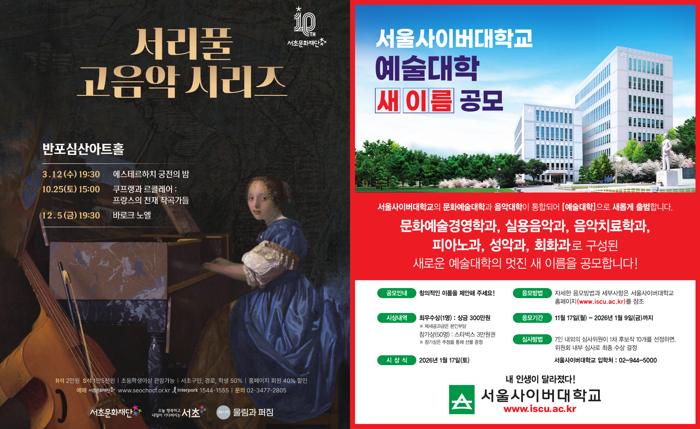
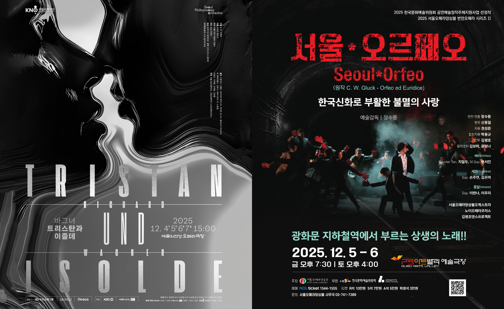
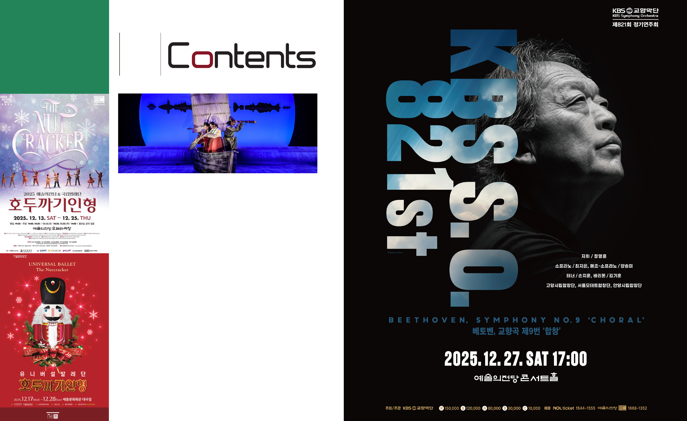
EDITORIAL
12
2026년 문체부 예산을 바라보는 불편한 질문
HEADLINE NEWS
13
2026년 문체부 예산, 7조 8,555억 원 확정_ K-컬처 300조 원 시대 출발, 콘텐츠·관광산업 육성
14
프랑스-한국 수교 140년 여정을 기념하다_제2 세종문화회관 설계안 확정
FOCUS
16
태평한 새해를 기원하며 _<나례>
COVERSTORY
18
이세종문화회관의 변화와 오늘_ “세종문화회관이 달라졌다!”
제작극장 4년의 성과와 균열, 향후 과제
20
안호상 사장 취임 후 세종문화회관의 주요 변화
28
이달의 음악가 얍 판 츠베덴 & 서울시향
PEOPLE
32
백진현 대구시립교향악단 음악감독 _오케스트라는 도시의 숨결이다
36
송년 추천공연 빅5
ISSUE
40
국립오페라단 최상호 단장 3년, 기획은 있었으나 구조는 없었다
퉁소소리_서울시극단
12
December 2025
Vol. 186
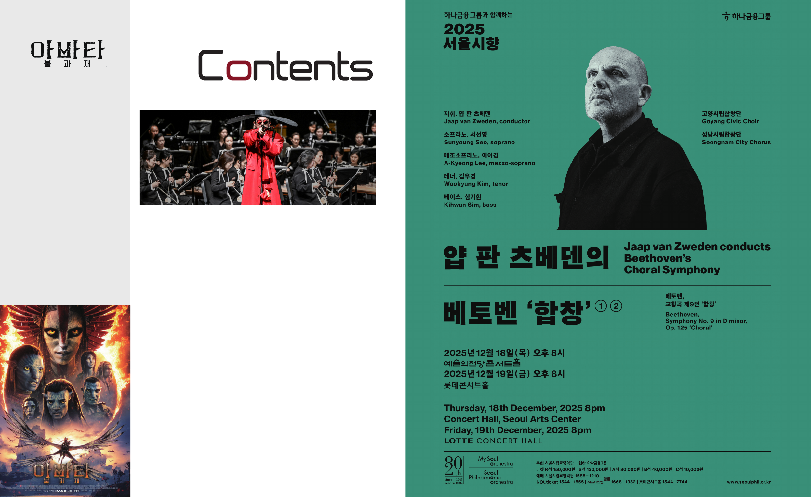
FEATURE
44
우리 동네 예술놀이터 어때?_ 서울의 5대 권역별 문화예술교육센터
50
서초문화재단,‘서리풀 고음악 시리즈’_ 12월, <바로크 노엘>과 함께
52
서초구 x 서초문화재단 <서초M.스타즈>_ 차세대 클래식 유망주 육성프로젝트
MUSICAL
54
뮤지컬 <은밀하게 위대하게> 10주년
56
킹키한 짜릿한 활력과 에너지 <킹키 부츠>
58
섬세함과 풍부한 감성의 판타지 <센과 치히로의 행방불명>
ART
59
국기술과 시각 경험의 지평을 확장하다_SeMA <그림과 현실>
60
인상주의 예술가들, 세상을 바라보는 방식
62
1950년대, 1세대 멋쟁이 모더니스트들의 삶과 예술
64
12월의 전시 산책, 미술관 산책 떠나볼까?
66
서울에서 겨울을 즐기는 법_서울 윈터페스타
CRITIC: REVIEW & COLUMN
68
이소영의 종횡무진음악산책_2025 전통음악계(창극)를 돌아보며
70
임효정의 무대위 인문학_탈 장르 시대의 발레를 묻다
72
리뷰_사랑과 욕망의 우주적 음악 여정, 미완의 질문들 <트리스탄과 이졸데>
74
리뷰_절기의 시간, 몸을 깨우다 _홍콩무용단 <천상의 리듬의 춤>
76
DISC 클라우스 메켈레의 신보 <말러 교향곡 No.8>
77
THE MOVE ART CALENDER
12
December 2025
Vol. 186
대한민국국악관현악축제
불과 재로 뒤덮인
새로운 ‘판도라’ 세계 최초 개봉!
영화 <아바타: 불과 재>는 ‘제이크’와 ‘네이티리’의 첫째
아들 ‘네테이얌’의 죽음 이후 슬픔에 빠진 ‘설리’ 가족 앞
에 ‘바랑’이 이끄는 재의 부족이 등장하며 불과 재로 뒤
덮인 판도라에서 펼쳐지는 더욱 거대한 위기를 담은 이
야기로 <아바타> 시리즈의 세 번째 작품이다. 12월 17일(
수) 전 세계 최초 개봉한다. 그간 청량했던 무드와는 달
리 불과 재로 뒤덮인 이제껏 보지 못한 판도라를 비롯
해 새로운 나비족이 등장하며 극의 흥미를 더한다. 경
이로움을 자랑하는 새로운 생명체들의 등장으로 풍성
한 재미와 인간과 나비족의 대립을 그렸던 전편과는 달
리 나비족과 나비족의 대립이라는 새로운 스토리와 스
케일이 펼쳐진다. (러닝타임 197분)
감독_제임스 카메론
출연_샘 워싱턴, 조 샐다나, 시고니 위버, 스티븐 랭, 케이
트 윈슬렛 외
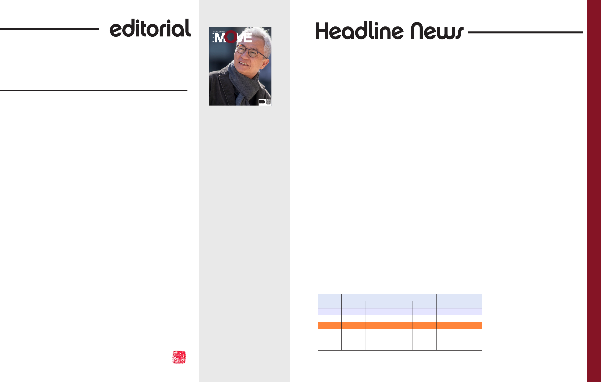
2026년 문화체육관광부 예산이 7조 8,555억 원, 전년 대비 11.2% 증가한 규모로 확정됐다. 수치만
놓고 보면 확장적 예산이다. 문체부는 이를 두고 “‘케이-컬처’ 300조 원 시대의 출발점”이라 명명하며,
콘텐츠산업의 국가전략산업화와 국민 향유·관광 확대를 핵심 기조로 제시했다. 그러나 이 예산을 찬찬히
들여다보면, 한 가지 분명한 변화가 보인다. 문체부는 이제 ‘문화정책 부처’라기보다 ‘콘텐츠·관광 산업
부처’에 훨씬 가까워졌다. 가장 눈에 띄는 대목은 콘텐츠 부문이다. 2026년 콘텐츠 예산은 가장 큰 폭의
증액을 기록했다. 케이-콘텐츠 펀드 출자, AI 기반 콘텐츠 제작, OTT 특화 콘텐츠, 게임·방송영상의
AI 전환 등은 모두 제작·투자·기술 중심의 산업 패키지다. 이 선택은 전략적으로 명확하다. 이미
글로벌 시장에서 경쟁력을 입증한 K-콘텐츠를 국가 차원의 성장 엔진으로 삼겠다는 선언이다. 문제는 이
과정에서 문화정책의 본령이었던 ‘공공성’과 ‘생태계’가 후순위로 밀려났다는 점이다. 제작비와 투자금은
늘었지만, 창작자의 권리 구조, 노동 조건, AI 전환에 따른 윤리적·제도적 안전망에 대한 고민은 예산
항목에서 거의 보이지 않는다. 콘텐츠는 늘어나지만, 그 콘텐츠를 만드는 사람의 지속 가능성은 여전히
각자의 몫으로 남는다.
문화예술 부문 예산은 전년 대비 11.9% 증가했다. 겉으로 보면 문화예술이 강화된 듯 보인다. 그러나 세부
항목을 보면 그 성격은 전혀 다르다. 청년문화예술패스, 통합문화이용권 등 ‘향유·관람 중심’ 예산이
증액의 상당 부분을 차지한다. 이는 국민의 문화 접근권을 넓힌다는 점에서 의미가 있지만, 동시에 중요한
질문을 남긴다. 정작 그 문화를 만들어내는 창작 기반은 얼마나 두터워졌는가? ‘케이-뮤지컬’, ‘케이-
아트’와 같은 브랜드화 전략은 선택과 집중이라는 명분 아래 특정 장르와 형식에 지원을 몰아준다. 그
결과 동시대 실험예술, 비주류 예술, 지역 기반 창작은 다시 한번 정책의 주변부로 밀려난다. 예술인
복지금고, 예술산업 금융지원 역시 상징성은 있으나 구조적 불안정 노동을 해소하기에는 규모와 설계
모두 제한적이다. 결국 이번 문화예술 예산은 예술을 ‘지속시키는 예산’이라기보다 ‘소비하게 하는 예산’에
가깝다.
관광 부문 역시 증가해 지역 경제 활성화를 목표로 한다. 그러나 이 안에서 문화는 목적이 아니라 관광
소비를 촉진하기 위한 수단이다. 지역 고유의 문화가 어떻게 보존되고 축적될 것인지, 관광 이후에도
지역 문화 생태계가 살아남을 수 있는 구조에 대한 질문은 예산 어디에서도 선명하게 드러나지 않는다.
체육 부문 예산은 생활체육과 어르신 스포츠, 체육인 직업안정 등은 긍정적이지만, 문체부 전체 전략
속에서 체육이 차지하는 위상은 분명 낮아졌다. 이는 곧 ‘산업화 가능성’이 정책 우선순위를 가르는 기준이
되었음을 보여준다.
2026년 문체부 예산은 실패한 예산이라기보다 매우 솔직하다. 정부는 이제 문화정책의 목표를 명확히
설정했다. 성장, 수출, 소비, 글로벌 경쟁력에 초점을 맞췄다. 문제는 이 목표가 문화정책의 전부가 될
수 있느냐는 점이다. 문화는 산업이 될 수 있지만, 산업으로만 환원될 수는 없다. 시장이 외면하는 영역,
당장의 성과가 나지 않는 창작, 실패할 권리를 보장받아야 하는 예술은 여전히 국가의 보호가 필요하다.
그 역할이 바로 문화체육관광부의 존재 이유였다. 2026년 예산은 묻고 있다. 우리는 ‘문화국가’를
원하는가, 아니면 ‘케이-컬처 산업국가’를 선택한 것인가. 그리고 그 선택의 비용은, 과연 누가 감당하게
될 것인가.
Editor–in–Chief 임효정
체육시설 개·보수(953억 원, +294억 원) ▲
어르신 대상 스포츠 프로그램 지원(75억 원, 신
규), ▲예비국가대표 양성(30억 원, 신규), ▲체
육인 직업안정 지원(88억 원, +38억 원), ▲스
포츠산업 금융지원(2,884억 원, +100억 원) 등
올해보다 248억 원(1.5%)이 증가한 1조 6,987
억 원을 편성했다.
올해 예산의 증가율 자체만 놓고 보면 ‘확장 예
산’이다. 그러나 이 예산이 지향하는 방향은 문
화예술 진흥보다는 콘텐츠 산업의 국가전략산
업화, 그리고 관광·소비 진작 중심의 문화정책
이다. 문체부 스스로 이번 예산을 “‘케이-컬처’
300조 원 시대의 출발점”이라고 규정한 것은 문
화정책을 산업 성장의 도구로 명시한 점에서 상
징적이다. 이로써 문체부는 더이상 ‘문화 공공
성의 최후 보루’라기보다는, 콘텐츠·관광·스
포츠 산업을 총괄하는 경제부처에 가까운 성격
을 띤 듯이 보인다. 특히 콘텐츠 부문은 가장 공
격적인 증액으로 제작, 투자, 기술 중심의 산업
패키지다. 이는 성공한 K-콘텐츠 모델의 반복
에는 최적화되어 있으나 한계를 지닌다. 글로벌
OTT·게임 시장 대응에는 효과적이나, 국내의
문화 다양성·실험성 확보와는 거리가 있다. 콘
텐츠 부문의 성장 전략은 분명하나 문화정책으
로서의 균형은 취약하다. 또한, 가장 큰 비중을
차지하는 ‘문화예술’ 부문에서 전년 대비 11.9%
증가로 콘텐츠 다음으로 높은 증가율을 보였는
데, 표면적으로는 문화예술 강화처럼 보이난 세
부 항목을 들여다보면 창작 지원보다 향유 소비
예산의 확대로 이는 예술 생태계의 공급 기반보
다 소비 활성화에 초점을 두고 있는 구조다. 또
한 관광 부문에서 문화는 목적이 아니라 도구로
기능한다. 체육 부문은 이번 예산에서 가장 낮은
순위로 복지, 생활체육 중심에 머물러 국가 스포
츠 전략, 엘리트·생활체육의 구조 개편 논의는
보이지 않는다. 결과적으로 문화국가라기보다 문
화산업 국가의 예산으로의 방향성을 보인다. 문
화의 공공성은 산업성으로, 예술의 자율성은 브
랜드화로, 창작 생태계는 소비 진작으로 정책 목
표의 전환이다. 이 전환은 충분한 사회적 합의 속
에서 이루어졌는가, 그리고 문화부가 마지막 보
루로서 비시장 영역의 보호라는 책무에 대해 고
려했는가 하는 문제점을 남긴다.
이수민 기자
BOARD OF DIRECTORS
임효정 Hyo Jung Im
EDITORS
강영우 Yeung Woo Kang
이수민 Sumin Lee
박종선 Jong Sun Park
양몽원 Mongwon Yang
CONTRIBUTING EDITORS
류은희 Eun Hee Ryu
정태화 Tae Hwa Jung
ART DIVISION
Art Dirictor
김보미 BoMi Kim
Web Designer
백동희 Dong Hee Baek
PHOTO
최원일 Choi won il
박연우 Yeon Woo Park
MARKETING DIVISION
김정희 Kim jung he
등록번호 서초라 00299 발행일자 2025. 11. 25
발행처 (주)무브미디어
서울시 서초구 마방로 10길 15 트윈타워 B-204
THE MOVE는 한국간행물 윤리위원회
윤리강령 및 실천요강을 준수합니다.
더무브에 실린 글과 사진은 사전허가 없이
옮겨 쓸 수 없습니다.
기사제보 themove99@daum.net
광고문의 02)523-7356
Move the Mind!
Move the World!
마음을 움직이고 세상을 움직여라!
문화예술전문월간지 THE MOVE는
시시각각 다양한 방식으로
변해가는 예술의 새로운 방식들을
주목하고자 한다.
새로운 변화와 트렌드를 반영하고
역동적인 변화의 움직임을 통해
알려지지 않은 새로운 미적 가치를 찾아
세상과 소통하고자 한다.
‘문화국가’의 예산인가,
‘K-컬처 산업국가’의 예산인가
K-컬처 300조 원 시대 출발,
콘텐츠·관광산업 육성
콘텐츠 산업의 국가전략산업화, 국민 향유 관광에 주력
문화체육관광부(장관 최휘영)는 2026년도 문체부 예산이 7조 8,555억 원으로 최종 확정됐다고
밝혔다. 올해 본예산 대비 7,883억 원(11.2%)이 증가한 규모다. 문체부는 이번 예산을 ‘케이-컬
처’ 300조 원 시대 출발을 위한 예산으로 콘텐츠산업의 국가전략산업화, 국민이 함께 누리는 관
광 등에 주력해 편성했다고 밝힌 바 있다. 2026년 문체부 예산은 공격적이고 명확한 방향성을
가진다. 이는 정책 목표의 전환이다. 2026년 문체부 예산은 문화예술 진흥 예산이 아니라 콘텐
츠·관광 산업 육성 예산이다. ‘K-컬처’의 세계화는 가속화되었지만, 한국 문화 생태계의 내구
성은 여전히 질문으로 남는다. 예술은 소비되기 전에 먼저 지속 가능해야 한다는 명제가 우선이
아닐까.
부문별로 살펴보면 콘텐츠 부문에서는 ▲‘케이-콘텐츠’ 펀드 출자(4,300억 원, +1,350억 원),
▲인공지능 콘텐츠 제작 지원(238억 원, +158억 원), ▲대중음악 공연환경개선 지원(120억 원,
신규), ▲‘케이-콘텐츠’ 복합문화공간 조성(155억 원, +150억 원), ▲게임 제작 환경 인공지능
전환 지원(75억 원, 신규), ▲방송영상 온라인동영상서비스(OTT) 특화콘텐츠 제작지원(399억
원, +96억 원) 등 총 1조 6,177억 원을 편성했으며, 올해 대비 가장 큰 폭(3,443억 원)으로 예산
이 증가했다.
문화예술 부문에서는 ▲‘케이-아트’ 청년창작자 지원(180억 원, 신규), ▲‘케이-뮤지컬’ 지원
(244억 원, +213억 원), ▲예술인 복지금고(50억 원, 신규), ▲예술산업 금융지원(융자 200억
원, 보증 50억 원, 신규), ▲청년문화예술패스(361억 원, +191억 원), ▲통합문화이용권(2,915
억 원, +279억 원) 등을 포함해 올해 예산 대비 2,830억 원(11.9%)이 증가한 2조 6,654억 원을
편성해, 올해 대비 두 번째로 높은 증가 폭을 보였다.
관광 부문에서는 ▲지역사랑 휴가지원제(65억 원, 신규), ▲근로자 휴가지원(107억 원, +37억
원), ▲‘(가칭)핫스팟 가이드*(10억 원, 신규)’, ▲케이-지역관광 선도권역 프로젝트(50억 원,
신규), ▲글로벌 관광특구(30억 원, +24억 원), ▲관광산업 금융지원(7,105억 원, +910억 원)
등 올해보다 1,327억 원(9.8%)이 증가한 1조 4,804억 원을 편성했다. 체육 부문에서는 ▲공공
Vol.186THE MOVE
ㅣ
December 12 2025
세종문화회관의 변화와 실
어린이에게 행복한 꿈을!
December
2025
Vol.186
www.ithemove.com
12
An Hosang
Feature
12월, 송년 공연 추천 빅5
2025 공연계 결산 _전통의 히트
2025 최고 공연 VS. 최악의 무대
PEOPLE
백진현_대구시립교향악단 음악감독
ISSUE
[Critic]_국립예술단체 평가
_국립오페라단 최상호 단장 3년,무엇이 남았나
CoverStory
극장은 언제나 설렘이다
안호상 세종문화회관 사장
세종문화회관이 달라졌다!
변화와 실험_공공극장의 흥행과 명암
2026년 문체부 예산을 바라보는 불편한 질문
13
December 12, 2025THE MOVE
•
12
2026년 문체부 예산, 7조 8,555억 원 확정
<2026년 문체부 부문별 예산 편성 현황>
(단위 : 억 원, 총지출 기준)
구 분
’25년 본예산 ’26년 예산 전년 대비 증감
예산액(A) 비중(%) 예산액(B) 비중(%) (B-A) %
합 계 70,672 100 78,555 100 7,883 11.2
문화예술 23,824 33.7 26,654 33.9 2,830 11.9
콘 텐 츠 12,734 18.0 16,177 20.6 3,443 27.0
관 광 13,477 19.1 14,804 18.8 1,327 9.8
체 육 16,739 23.7 16,987 21.6 248 1.5
기 타 3,899 5.5 3,934 5.0 35 0.9
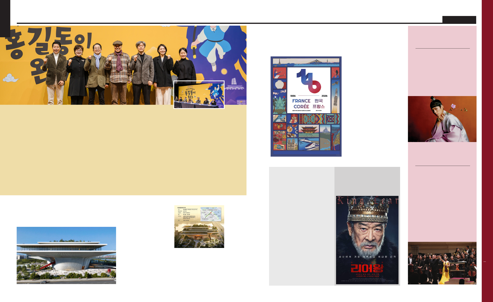
서울시는 11월 6일, ‘제2세종문
화회관’ 건립을 위한 국제설계공
모 공개 심사 결과, '디자인캠프
문박디엠피'의 설계안을 최종 당
선작으로 선정했다고 발표했다.
설계안 프레젠테이션과 공개 심사는 지난 4일 시청 다목적홀에서 시민과
전문가 400여 명이 참석한 가운데 진행됐다. 새롭게 조성될 제2세종문화
회관은 여의도공원 북측 한
강변에 위치해 연면적 6만6000㎡ 규모로 대공
연장(1800석)과 중공연장(800석), 전시장(5670㎡), 공공전망대 등을 갖춘
복합문화시설로 조성된다. 올해 안으로 설계 계약을 체결하고 약 14개월간
기본 및 실시 설계, 내년 12월 착공해 2029년 12월 준공을 목표로 한다.
K-Culture
연말연시 온 가족이 함께 즐기는 국립극장 마당놀이가 신작으로 돌아온다. 이번
엔 K-히어로 ‘홍길동’이 주인공으로 현대적 감각을 입었다. 지난 10월 29일 국립극
장 하늘극장에서 열린 국립극장 마당놀이 ‘홍길동이 온다’ 기자간담회에서 손진
책 연출은 "새로운 세계를 꿈꾸는 모든 사람이 곧 홍길동"이라며, “마당놀이의 본
질은 고전으로 오늘을 읽고 새롭게 발견하는 것”이라고 말했다. 국립극장은 1993
년 극단 미추가 처음 선보인 마당놀이 '홍길동전'을 재탄생시켜 2000년 이후 공연되
지 않았던 극단 미추의 '홍길동전'을 25년 만에 무대로 소환했다. 2014년 '심청이 온
다'를 시작으로 연말연시 마당놀이를 선보여온 국립극장은 ‘춘향이 온다’(2015), ‘놀
보가 온다’(2016), ‘춘풍이 온다’(2018~2020)의 후속작으로 이번에는 ‘홍길동이 온다’
로 마당놀이를 부활시킨 셈이다. 주인공 홍길동을 여성 배우들이 연기하는 것도 주
목된다. 1993년 '홍길동전' 초연 당시 주인공 홍길동을 연기했던 '마당놀이 간판스타'
김성녀가 연희감독을 맡아 후배 여배우를 지도하고 있다. 국립창극단 이소연과 소리
꾼 김율희가 새로운 홍길동의 모습을 제시한다. 김율희는 “김성녀 선생님을 흉내 내
다보면 저만의 홍길동이 되어 있을 것”이라며 각오를 말했다. 5m 높이에서 펼쳐지
는 공중활공 연기, 마술, 애크러배틱 등 난도 높은 퍼포먼스를 소화하며 갖가지 기예
가 등장하는 점도 볼거리다.
2026년 1월 31일까지.
오늘, 누구나 ‘저마다의 홍길동’이 된다
국립극장 마당놀이 <홍길동이 온다> 개막
한강 변 서울의 새 문화랜드마크.. 제2세종문화회관 설계안 확정
'디자인캠프문박디엠피' 설계안 당선…2029년 12월 준공 목표
‘꽃보다 할배’ 91세 현역 배우
이순재 별세
2026년 프랑스와 대한민국은 1886년 조불
수호통상조약을 통해 수립한 외교 관계 140
주년을 함께 기념하며 다채로운 문화행사를
펼치고 있다. 문화, 교육, 과학 분야에서 20
개 도시에 걸쳐 100개 이상의 행사가 열리며
한국 파트너들과 협업으로 국가적 문화 프
로젝트로 추진된다. 기념 행사는 부천필하모
닉 오케스트라 상임지휘자 아드리앙 페뤼숑
의 지휘의 개막콘서트를 시작으로 예술의전
당 <세잔, 르누아르>전, 주한프랑스대사관의
<김중업x르 코르뷔지에>사진전, SPAF의 아
비뇽페스티벌 초청 특별판, 제17회 제주프랑
스영화제, 디지털 노벰버축제, 바로크 음악
앙상블 ‘포엠 아르모니크’ 내한투어, <파리의
한국 작가들>을 비롯해 풍성한 행사가 연중
열렸다. 이후 ‘퐁피두센터 한화 서울’ 개관식
등도 계획돼 있다.
프랑스-한국 수교 140년 여정을 기념하다
다채로운 문화예술 행사 풍성
국민배우 이순재가 향년 91세로 2025년
11월 25일 별세했다. 최고령 현역 배우
로 활동해 온그는 서울대 철학과에 진학
한 후 영화보기에 빠졌고 로렌스 올리비
에 주연의 영화 <햄릿>을 보고 배우의 길
을 걷게 됐다고 밝힌 바 있다. 1956년 연
극 <지평선 너머>로 데뷔한 후 90년대 ‘사
랑이 뭐길래’ ‘목욕탕집 남자들’을 통해 국
민 아버지로 불렸다. 1995년 제14대 국회
의원(민주자유당)을 지내는 등 잠시 정치
권에도 참여했고, 연극 <리어왕>(2021)의
무대에도 섰다. 지난해 10월 연극 <고도
를 기다리며>와 KBS드라마 <개소리> 등
에 출연하며 마지막 연기 혼을 불태웠다.
배우 박보검,
한복으로 세계를 매혹하다
문체부는 ‘한복 웨이브’ 사업으로 배우 박보검과
한복 디자이너 4인이 개발한 한복을 공개했다. 배
우 박보검과 협업한 4인의 한복 디자이너들이 참
여해 전통의 다양한 상징을 남성 한복의 형태에
담아 현대 패션으로 풀어냈다. 지난 10월 6일 추석
당일, 서울과 뉴욕, 파리, 밀라노, 도쿄 등 주요 도
시 전광판에 한복 화보 영상을 송출했다.
서울시향,
뉴욕 카네기홀-미국 투어 환호
서울시립교향악단이 11월 27일(현지시간) 오후 8
시, 미국 뉴욕 카네기홀에서 이번 미국 순회공연
의 첫 무대를 성공적으로 마치며 K클래식의 저력
을 과시했다. 2018년부터 6년간 뉴욕 필하모닉 음
악감독을 역임한 얍 판 츠베덴 음악감독이 이끄는
서울시향과 함께 K클래식을 미국 무대에 선보인
다는 점에서 뉴욕 현지 언론매체와 시민들의 뜨
거운 관심을 모았다. 서울시향이 정재일 작곡가
에게 위촉한 신작 ‘Inferno’ 미국 초연과 더불어 한
국을 대표하는 바이올리니스트 김봄소리가 서울
시향과 함께 무대에 올라 K클래식의 새로운 가능
성을 보여줬다.
01
02
03
04
05
06
News
15
December 12, 2025THE MOVE
•
14

focus
태평한 새해를 기원하며 <나례(儺禮>
한 해의 마지막 날인 섣달그믐날 밤, 묵은해의 나쁜 기운을 물리치고 태평한 새해를 맞이하고자 고려부터 조선까지 700여 년간 행해졌
던 궁중의식 <나례>는 궁중 예인을 비롯해 민간의 최고 광대들이 함께한 축제였다. 『조선왕조실록』에도 “난장(亂場)의 날에는 사관도 입
시(入侍)하였으나 기록하지는 않았다.”고 할 만큼 자유로운 날이었으며, 연화대무, 학연화대처용무합설 외에도 민간에서 유행했던 각종
공연을 펼쳤다. 궁중 나례는 계급 간, 계층 간 벽을 허문 왕실의 연말 문화이자 새해맞이 의식이었다. 국립국악원은 궁중 나례의 의미를
담아 송년공연 ‘나례’를 무대에 올린다. 12월 18일(목)부터 21일(일)까지 4일간 국립국악원 예악당에서 송년공연 ‘나례(儺禮)’(연출 박동우)
를 선보이며 재담꾼과 가상의 역신을 등장시켜 나례의 연행 모습을 현대적으로 재구성했다. 궁중나례의 절차는 연향을 비롯해 각종 놀
이에 참여하고 공연을 관람하는 ‘관나(觀儺)’, 불꽃놀이를 보고 즐기는 의식인 ‘관화(觀火)’, 가상의 역귀를 쫓는 의식인 ‘구나(驅儺)’와 나
라의 안녕과 복을 기원하는 ‘관처용(觀處容)’ 순이다. 12.18-12.21 국립국악원 예악당
17
December 12, 2025THE MOVE
•
16
December 12, 2025THE MOVE
17
•
16
September 9, 2025THE MOVE
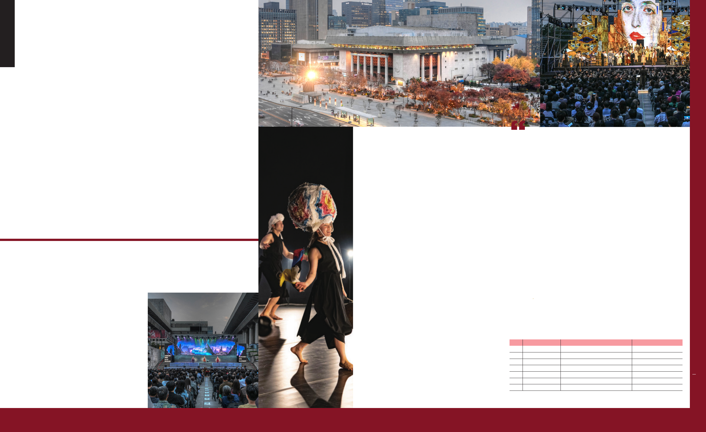
공공극장 세종문화회관의 변화와 오늘
세종문화회관이 달라졌다!
안호상 사장 취임 이후, 세종문화회관의 주요 변화
<세종 시즌> 4년의 도약과 성장, 한계
Cover story
공공극장은 공연장소의 기능을 넘어 도시의 감수성과 시민의 문화적 평등을 보장하는 민주적 장치다. 장벽 없는 감동이 가
능한 곳—그것이 공공극장이다. 피터 브룩이 말했듯, “연극은 인간이 인간을 바라보는 가장 고전적이고도 가장 현대적인
방식”이며, 공공극장은 이 만남의 기회를 누구에게나 공평하게 제공하는 사회적 기관이다. 문화예술의 본질은 이윤이 아
니라 ‘공론장’의 유지에 있다. 그런 이유로 공공극장은 대중성과 실험성, 예술성과 포용성, 시민향유와 창작 생태계 보호 사
이에서 균형을 설계해야 한다. 이 균형이 무너지면, 공공극장은 민간극장의 값싼 대체재나 예술가의 실험을 배제한 흥행기
관으로 전락한다. 반대로 균형이 유지된다면, 공공극장은 시대의 심리와 도시의 감각을 담아내는 공공재로 기능한다. 세종
문화회관의 지난 몇 년은 바로 이 난제—대중성과 공공성의 균형—에 대한 하나의 실험이었다. 2021년 안호상 사장 취임
과 더불어 세종문화회관의 제작극장화 선언은 운영 방식의 변화가 아니라, 공공극장의 존재 방식에 대한 문제의식에서 출
발했다. 오랜 시간 세종문화회관은 ‘국가·도시의 대표 공연장’이라는 상징성에도 불구하고, 실질적으로는 대관 중심 극장
이라는 평가에서 자유롭지 못했다. 우수한 하드웨어, 상징적 입지, 대형 무대 규모에 비해, 세종이 직접 만들어내는 예술적
성취와 창작 레퍼토리는 상대적으로 빈약했다. 이는 한국 공공극장이 공통적으로 안고 있던 구조적 문제이기도 하다. 공연
장은 많았지만, 극장은 적었고, 무대는 있었지만 제작 시스템은 취약했다. 이러한 상황에서 산하 8개 예술단체를 갖고 있
는 세종문화회관의 제작극장 선언은 시대적 요구이기도 했고, 빌려주는 공간에서 만들어내는 공간으로의 전환”이라는 상
징적 의미를 띠고 변화를 주도했다.
제작극장은 단순히 신작을 늘리는 것을 의미하지 않는다. 그
핵심은 첫째, 극장이 창작의 주체가 되는 구조, 둘째로 예술
단체와 창작자가 장기적으로 협업하는 시스템, 셋째 신작이
일회성 이벤트가 아닌 레퍼토리로 축적되는 구조 등이다. 세
종문화회관의 선언은 바로 이 시스템을 구축하겠다는 의지
의 표명이었다. 이는 공공극장이 단기 흥행이나 대중적 소비
를 넘어, 도시의 문화적 기억을 축적하는 기관으로 기능하겠
다는 약속이기도 했다. 제작극장 선언 이후, 세종문화회관의
풍경은 이전과 분명히 달라졌다. 안호상 사장 체제는 4년을
지나며 크게 세 가지 방향으로 변화가 진행됐다.
대형화·대중화된 프로그래밍 강화
• 뮤지컬, 콘서트, 가족 향유 프로그램의 확대
• 연극·발레·오페라·국악 등 장르 전반에서 흥행지향
적 라인업 강화
• 결과적으로 관객 저변은 넓어졌지만, 공공극장으로서의
정체성 논란도 증폭
예술단체 체제 개편 및 신설 프로그램 도입
• 서울시발레단 창단 (의미 있는 전략적 결정)
• 서울시극단·연극 분야의 재도약(고선웅 예술감독 체제
의 가시적 효과)
• 야외오페라·오픈스테이지 등 공공 야외 프로그램의 정착
기존 단체 간 성과 불균형 심화
• 특히 서울시오페라단의 레퍼토리 문제
• 국악·합창·무용단 등 장단점의 양극화
소속 예술단체별 변화와 성과 - 그리고
불균형의 문제
서울시발레단 창단은 가장 뚜렷한 제도적 성과로 꼽을 수
있다. 창단 자체가 의미 있는 공공정책적 결정으로 국제협
업·레퍼토리 확보를 위한 초기 기반 다지기에 성공적인 효
과를 나타냈고, 해외 안무가 협업, 개막 기획의 퀄리티 등
은 도시 브랜드와 공공예술단의 비전 확장이라는 점에서
긍정적인 평가를 받는다. 다만, 신생 조직인 만큼 장기 레
퍼토리 체계와 재정 안정화, 기획 역량 축적은 향후 과제
로 남아있다.
서울시극단은 고선웅 예술감독 영입의 확실한 효과를 보였
다. 대중성과 예술성을 동시에 확보한 연극의 본격적 흥행
을 주도하며 스타일·해석·현대적 텍스트 해법이 정착했
<제작 극장> 4년의 성과, 균열 그리고 향후 과제
Coverstory
다는 평가를 받았다. 관객 수 증대와 ·평단의 호평도 상승했다. 이는 세종문화회관 전체 라인업의 예
술적 허리 역할이 강화되었다는 점에서 중장기적 의의가 크다.
서울시오페라단은 가장 뚜렷한 후퇴 지점이라 할 수 있다.“공공극장 오페라단은 창작 레퍼토리를 통
해 시장의 빈 곳을 메워야 한다”는 공공극장 운영 철학과는 반대로, 지나치게 유명 고전 레퍼토리가
반복됐다. 창작오페라는 실종했고, 박스오피스 중심 프로그래밍이 강화됐다. 대중적인 인기를 끌었음
에도 이는 민간오페라단과의 역할 중복을 낳고, 공공예술단체의 존재 이유를 약화시키고 있다. 서울
시오페라단의 프로그램은 가장 시급한 구조적 문제로 지적될 필요가 있다.
<세종 시즌>의 프로그램 변화
야외오페라는 시민참여형 오페라로 시민예술단이 함께 만들어가는 축제로 광화문광장에서 열렸다.
2023년 <카르멘>(9.8-9.9)을 시작으로 2024년 <카발레리아 루스티카나>(6.11-6.12), 2025년 <마술피리
>(6.1-6.2)로 초여름‘도심 속 음악축제’로의 확장을 도모해왔다. 여름축제 브랜드로 지속성을 확보하
고, 시민들의 접근성 확대, 공공성 강화로 도심 속 문화 휴식의 재발견이라는 도시문화적 의의를 다
졌다. 그러나, 영상·미디어 연출 중심의 연출 방식이 반복되며, 무대 실험성 부족과 고전 명작에편
중돼 현대오페라 기획의 부재가 지적된다. 향후 연출의 다양화·현대오페라 발굴·실험 무대 강화
가 필요한 단계다.
국악관현악축제 - 공공기관의 의미 있는 국악 생태계 실험
세종문화회관이 2023년 10월, 서울시국악관현악단 창단 60주년에 <제1회 대한민국 국악관현악축제>
를 전개하며 국악관현악의 정체성과 가능성을 공론화했다는 점에서 의미가 깊다.국공립 기관이 장르
국악관현악축제 전개, 국악 창작 생태계 호응
서울시발레단 창단. 서울시극단 연극 분야 재도약
싱크넥스트 등 대중적 프로그래밍 강화, 인기
오페라단 대중성 치중 개선과 예술단
불균형 과제로 남아....
연도 주요 변화 핵심 특징 평가 포인트
2019
제작극장 선언 대관·초청 중심에서 창작 중심으로 전환 선언 방향성은 명확, 실천은 초기 단계
2020
내부 체계 정비 예술단 운영 재검토, 중장기 기획 구상 팬데믹으로 실질 제작은 제한
2021
제작 기반 준비 온라인·영상 실험, 시민 접근형 프로그램 확대 제작극장 청사진 마련
2022
제작 성과 가시화 서울시극단 약진, 레퍼토리 강화 장르별 성과 격차 발생
2023
예술단 재편·확장 서울시발레단 창단, 해외 협업 확대 구조적 성과, 장기성은 과제
2024
시민 축제형 제작 확대 여름 야외오페라 정착, 국악관현악축제 운영 접근성·지속성 성과
현재
제작극장 정착 단계 연극·무용 성과 대비 오페라 부진 예술단 균형·창작 요
▶ 세종문화회관 제작극장 선언 이후 연도별 변화 도표
야외오페라, 공공 야외 프로그램의 정착
혁신적, 현대 프로그램 강화 필요
19
18
December 12, 2025THE MOVE
•
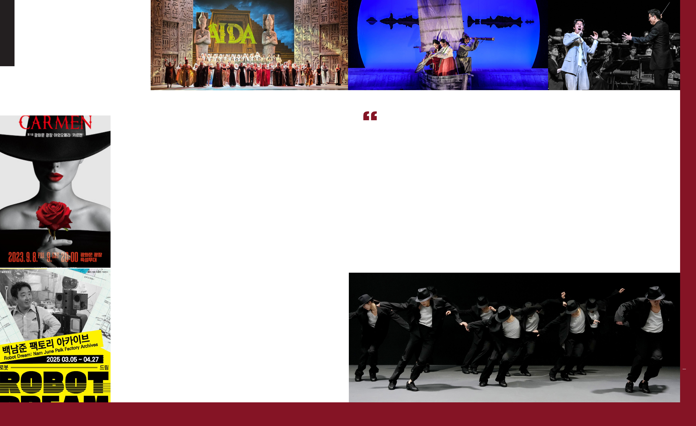
(국악) 확장에 직접 나선 드문 사례로 젊은 작곡가와 국악관현악단의 협업을 촉발했다는 점도 주목된
다. 현재까지 3회를 지나며 레퍼토리 확대와 국악관현악의 시민 친화적 이미지 강화, 국악 관현악단
간 자연스러운 경쟁 구조가 형성되고 있다. 이로써 장르 확장의 공공적 의미, 단발성 아닌 ‘축제 형태’
의 정례화 가능성, 국악 기반 창작 생태계의 실질적 호응 등이 성과라고 볼 수 있다. 이후 음악적 깊이
를 담보할 ‘전속 작곡가·레지던시’ 체계 필요, 단순한 단체 나열식 편성에서 탈피, 제교류의 확대, 비
판적 담론 형성 장치 부족(포럼, 학술적 평가 시스템 등)은 남겨진 과제라 할 수 있다. 종합적으로 세
종문화회관이 국악 생태계의 공적 플랫폼이 될 수 있음을 보여준 중요한 시도로 평가된다.
동시대성의 실험 <싱크넥스트>, 큐레이션 중심 한계, 축적돼야....
세종문화회관의 컨템포러리 공연 예술 브랜드 <싱크넥스트 Sync Next>는 세종문화회관이 제작극장
으로의 전환을 선언하며 성장해 온 프로그램이다. 2022년 시작해 매년 여름 다양한 장르의 아티스트
들과 실험적인 무대를 선보이고 있다. 장르를 해체하고 무경계의 컨템포러리 아트신으로 세종문화회
관이 보수적 레퍼토리 극장에 머물지 않고, 동시대 공연예술의 실험을 공공의 영역으로 끌어올리려는
진지한 시도다. 이는 분명 공공극장의 역할 확장이라는 측면에서 높이 평가받을 만하다. 다만, 이제 필
요한 것은 ‘얼마나 새롭고 다양한가’보다, 그 실험이 무엇으로 남는가에 대한 질문이다.
<싱크넥스트>의 가장 큰 성과는 동시대 예술을 ‘실험실’이 아닌 ‘공공 무대’ 위로 끌어올렸다는 점이
다. 그러나 한편, <싱크넥스트>는 엄밀히 말해 전통적인 의미의 제작극장 프로그램이라기보다는 큐
레이션 중심의 시즌에 가깝다. 이미 완성된 작품이나 아티스트의 작업을 선별해 소개하는 방식이 주
를 이루며, 장기 제작이나 레퍼토리 축적보다는 ‘지금, 여기’의 예술을 보여주는 데 초점이 맞춰져 있
다. 이 점에서 <싱크넥스트>는 제작극장의 본류라기보다는, 제작극장을 보완하는 실험적 전초기지로
기능한다. 그러나 <싱크넥스트>가 반복되며 드러나는 한계도 분명하다. 가장 큰 문제는 시즌이 매년
새롭게 소비되고 사라진다는 점이다. 실험은 축적될 때 의미를 갖지만, 현재의 <싱크넥스트>는 개별
작품의 연속성이나 재제작, 후속 개발로 이어지는 구조가 약하다. 결과적으로 ‘신선하지만 휘발되는’
여름 시즌으로 인식될 위험이 있다. 또한 장르의 나열은 풍부하지만, 시즌 전체를 관통하는 문제의
식이나 큐레이션 서사가 상대적으로 약하다는 지적도 가능하다. <싱크넥스트>가 일회성 여름 이벤트
를 넘어, 세종문화회관 제작극장의 미래를 예고하는 실험실로 자리매김할 수 있을지—그 성패는 바
로 이 지점에서 갈릴 것이다.
프로그램 전반의 성과와 한계
관객 기반 확대면에서 대중성 강화 전략은 단기 성과가 분명했다. 공연장 가동률 상승과 브랜드 인
지도도 상승했다. 예술단체별 간판 프로그램의 존재감은 강화됐다. 특히 서울시극단, 서울시발레단
등 일부 단체는 확실한 상승세를 보였다. 새 기획 프로그램은 도시 문화에 상징성을 부여했고, 야외
축제·신설 프로그램을 통한 공공성 확대와 시민 접근성이 강화됨으로서 공공문화기관의 역할이 확
장됐다.그러나, 한편으론 가시적인 여러 성과에도 불구하고 세종문화회관의 <세종 시즌> 지난 4년은
지나친 대중성 편향으로 공공극장의 본령인 창작·실험·공공성 기능 약화와 장르별 예술적 균형에
균열이 보인다. 예술단체의 성장에 앞서 단기 흥행이 강조되는 구조와 예술단체 간 성과의 비대칭성
Cover story
야외오페라의 보완으로 정체성 강화도 필요하다. 미디어 의존형 연출에서 탈피해 현대오페라·
도전적 무대미술·실험 레퍼토리 적용 등 혁신적 변화가 필요한 시점이다. 국악관현악축제의 제
도적 고도화 면에서는 전속 작곡가·레지던시 제도 도입, 국제교류, 포럼, 비평 시스템 구축과 장
기적 축제 브랜드 전략 수립이 요구된다.
“공공극장, 도시의 문화적 자존심 점검하는 장소”
세종문화회관의 지난 몇 년은 변화와 성과, 그리고 균열이 공존한 시기였다. 대중성 확보와 흥행
에는 성공했지만, 공공극장으로서의 본령—창작, 실험, 균형, 예술적 깊이—에서는 재점검이 필
요한 지점이 명확하다. 그러나 새로운 발레단의 탄생, 야외오페라의 정착, 국악관현악축제의 실
험, 대중적 트렌드 접점의 싱크넥스트 등은 공공극장이 시대적 감수성에 대응하는 방식의 다양
성을 보여준 긍정적 신호다. 공공극장은 ‘시민의 시간’을 바꾸고, 도시의 품격을 바꾸는 공간이
다. 세종문화회관의 다음 단계는 단순한 프로그램 확대가 아니라, 공공극장의 철학을 회복하는
일이어야 한다. 그 철학이 다시 세워질 때, 세종문화회관은 진정으로 “서울의 중심, 한국 공연예
술의 공공적 플랫폼”으로 자리매김할 것이다.
임효정. 이수민 기자
은 보완이 필요하다. 발레단과 극단은 성과가 뚜렷한 반면, 오페
라단은 공공성 측면에서 후퇴라 할 수 있다. 국악·무용·합창
단 등은 프로그램의 질적 격차가 존재하고 창작 신작 정책의 부
재 지적된다. 제작극장을 표방했으나 실질적 창작 투자는 축소
됐다. 특히 오페라 창작 생태계는 멈춘 상태다.
향후 보완·개선 방향
공공극장으로서 ‘대중성과 예술성의 균형’은 회복이 필요하다.
단기 흥행 중심 구조를 ‘창작·실험·신진육성’과 병행해야 한
다. 민간과 겹치지 않는 공공극장의 고유 역할 재정립이 요구된
다. 예술단체 간 균형성도 유지돼야 한다. 오페라단의 구조적 혁
신이 시급하고,서울시발레단의 장기 레퍼토리 구축과 국악·합
창·무용단에 대한 기획력 강화도 요구된다. 재제작·창작 시스
템 구축으로 연례 창작 오페라·창작 연극·신작 국악 등 공공
창작 로드맵도 필요하다. 예술단체와 외부 작가·연출·안무가
매칭 체계의 상설화는 어떨까.
지나친 대중성 몰입 경계....
싱크넥스트 큐레이션 한계, 축적돼야....
21
20
December 12, 2025THE MOVE
•
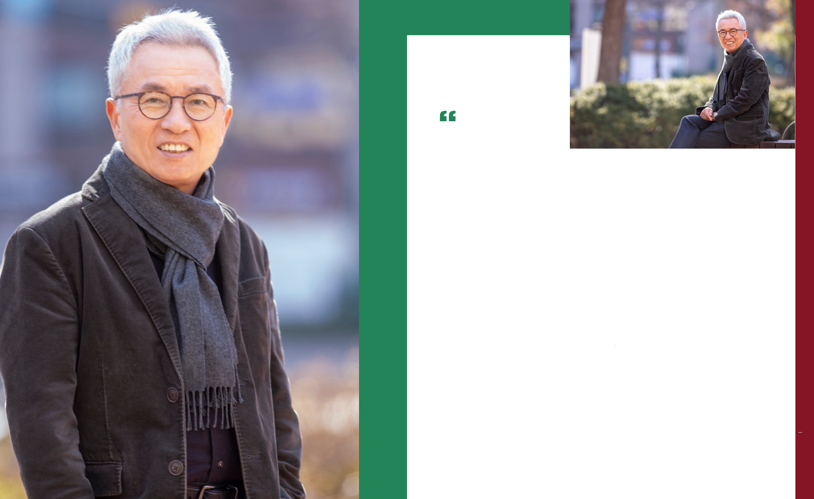
제작극장 4년, 세종문화회관의 변화 이끌다
세종문화회관의 변화는 어느 날 갑자기 시작된 것이 아니다. 안호상 사장이 취임과 동시에 던진 질
문은 단순했다. “세종문화회관은 어떤 극장이어야 하는가!” 그 질문의 답으로 그가 선택한 방향
은 ‘제작극장’이었다. 이는 새로운 유행어나 슬로건이 아니라, 공공극장이 본래 수행해야 할 역할
로의 회귀에 가까웠다. 세종문화회관은 서울시무용단, 서울시합창단, 서울시오페라단, 서울시극
단, 서울시뮤지컬단, 서울시국악관현악단 등 7개의 산하 예술단체를 보유하고 있다. 전체 예산의 절
반 이상이 이들 단체에 투입되고 있음에도, 오랫동안 극장의 운영은 대관 중심으로 이뤄졌고 예술단
체들은 각자의 생존을 도모하는 구조 속에 놓여 있었다. 안 사장은 이 구조를 “극장과 예술단체 모
두에게 불행한 상태”라고 진단했다. 40년 넘게 공연예술 현장을 이끈 안호상 사장은 여전히 스스로
에게 같은 질문을 던진다.
“관객은 왜 이곳에 오는가. 나는 이 공연을 누구에게 권할 수 있는가.”
그 질문의 끝에 그가 그리고 있는 극장의 모습은 분명하다. 예술가에게는 다시 도전할 수 있는 무대,
관객에게는 믿고 찾을 수 있는 공간. 도시의 정신적 중심으로 기능하는 공공극장이다. 2028년 개관
50주년을 앞둔 세종문화회관은 대대적인 리모델링을 준비 중이며, 여의도공원에는 ‘제2 세종문화회
관’ 건립도 예정돼 있다. 그러나 안호상 사장이 말하는 변화의 핵심은 건물이 아니라 철학이다. 극장
은 도시의 품격을 비추는 거울이다. 그리고 그 거울 앞에서, 세종문화회관은 다시 묻고 있다. 공공
극장은 무엇을 위해 존재하는가.
“예술단은 극장의 중심이 아니라 주변에 있었고,
극장은 스스로 어떤 미학을 갖고 있는지 말하지 못하고 있었습니다.”
제작극장으로의 전환은 이 구조를 바로잡기 위한 선택이었다. 도시사학자 루이스 멈퍼드가 “도시는
건축물로 기억되지만, 극장을 통해 자신이 무엇을 믿고 무엇을 꿈꾸는지 말한다”고 말했듯이, 도시
는 극장을 통해 스스로의 정신을 드러낸다는 믿음에 기인했다. 그가 제작극장을 선언한 이유는 명
확했다. 공공극장이란 무엇을 보여줄 것인가를 스스로 결정하고, 그 결과에 책임지는 기관이어야
한다는 신념이었다. 해외의 유수한 오페라하우스와 극장들이 대부분 국공립 제작 시스템을 중심으
로 운영되는 것처럼, 세종문화회관 역시 서울이라는 도시의 미학과 동시대를 작품으로 말해야 한다
는 판단이었다.
서울 광화문 한복판, 1978년 개관 이후 반세기를
향해 가는 세종문화회관은 오랫동안 ‘국가적 상
징’이자 ‘권위의 공간’으로 인식돼왔다. 그러나 지
난 4년, 이 극장은 눈에 띄게 달라졌다. 공연이 없
는 날에도 사람들이 머무르고, 예술은 로비와 광
장으로 흘러나왔으며, 무대 위에서는 서울시예술
단의 이름으로 만들어진 창작 작품들이 세계 주요
무대에 초청됐다. 그 변화의 중심에 안호상 세종
문화회관 사장이 있다. 예술의전당 공채 1기 출신
으로 예술의전당 예술사업국 국장, 서울문화재단
대표이사, 국립극장 극장장을 거친 그는 한국 공
연예술 행정의 거의 모든 핵심 현장을 통과해온
인물이다. 2021년 취임 이후 그는 세종문화회관
의 방향을 명확히 선언했다. ‘대관극장’에서 ‘제작
극장’으로, ‘높은 예술의 집’에서 ‘시민의 문화 광
장’으로 전환이다. 제작극장 전환 4년. 창극과 무
용, 연극과 뮤지컬은 세계 무대에서 성과로 증명
됐고, 관객 정책과 조직 운영 방식은 극장의 체질
자체를 바꿔놓았다. 안호상 사장은 말한다. “극장
은 공연을 올리는 건물이 아니라, 도시의 정신을
담는 그릇”이라고. 세종문화회관은 시민의 일상
과 예술을 연결하는 공공의 공간으로 더 가까워
졌다. 그의 말 속에서 우리는 세종문화회관의 현
재를 넘어, 한국 공공극장이 나아가야 할 미래를
읽게 된다.
극장은 언제나 설레임이다
세종문화회관을 다시 정의하다
people
안호상 세종문화회관 사장
극장은 도시의 정신이다
시대의 감정이 예술언어로 번역될 때,
오늘의 예술, 오늘의 관객이 만난다
23
22
December 12, 2025THE MOVE
•
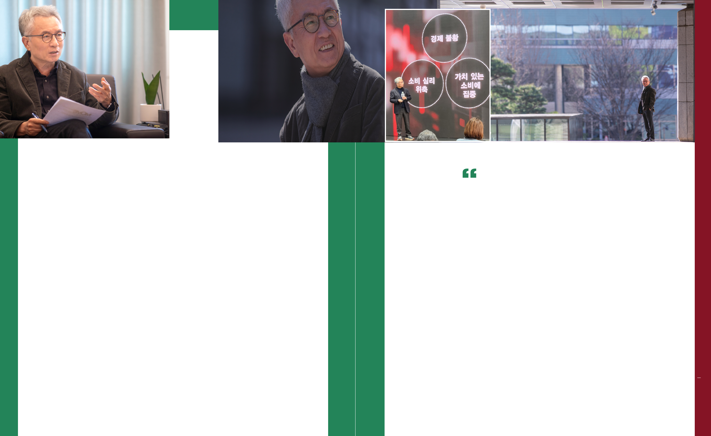
장 로비는 공연이 없는 시간대에도 사람들이 오가
며 머무는 공간으로 주변 도로와 거리의 카페와 식
당들도 변모하며 상권 역시 활기를 되찾았다. 극장
이 도시와 단절된 섬이 아니라, 도시의 흐름을 만
들어내는 중심이 되었을 때 나타나는 변화다. 여
기에 성수동 팝업스토어, 더현대서울 팝업 등 젊
은 세대를 겨냥한 마케팅 전략이 더해졌다. 전통적
인 극장 홍보 방식에서 벗어난 이러한 시도는 ‘예
술은 당신의 삶과 무관하지 않다’는 메시지를 도시
의 다른 공간으로 확장하는 실험이었다. 안 사장은
리더십을 “방향을 제시하고 신호를 주는 일”이라
고 정의한다. 조직이 스스로 움직이기 위해서는 예
측 가능한 평가와 보상, 그리고 분명한 비전이 필
요하다는 것이다.
40년 가까이 공연예술 현장을 지켜온 그에게도 변
하지 않는 질문이 있다. 관객은 왜 극장에 오는가,
이 공연을 누구에게 보라고 말할 수 있는가. 그는
관객이 전통 그 자체를 보기 위해 극장을 찾는다고
믿지 않는다. 관객은 자신의 고민과 감정, 이 시대
의 아픔과 맞닿은 이야기를 찾기 위해 극장을 찾
는다. 그래서 그가 강조하는 것은 ‘동시대성’이다.
한국적인 소재를 오늘의 언어로 번역할 때, 그것은
비로소 세계와 만날 수 있다는 믿음이다.
K-콘텐츠의 세계적 확산에 대해서도 그는 같은
맥락에서 해석한다. 세계가 주목하는 것은 박제된
전통이 아니라, 지금 이 시대를 살아가는 한국인의
감정과 서사, 즉 ‘컨템포러리 코리아’라는 것이다.
복잡하고 비극적이면서도 따뜻한 감정을 품은 로
컬의 이야기가 오히려 글로벌 시대에 경쟁력을 갖
는다는 분석이다. 제작극장 4년은 하나의 성과이
이후 세종문화회관의 시즌은 눈에 띄게 달라졌다. 제작극장으로의 전환 이후 무대에 오른
<세종 시즌> 작품들은 이러한 철학을 구체화했다. 고선웅 연출의 연극 퉁소소리는 전통적
서사를 동시대의 언어로 재해석하며 2025년 백상연극상을 수상했고, 정구호 연출이 참여
한 무용 일무는 종묘제례악이라는 유산을 현대적 신체 언어로 번역해 뉴욕 링컨센터 무대
에 올랐다. 발레 데카당스, 뮤지컬 다시, 봄 역시 서울시예술단의 창작 역량을 전면에 내
세운 작품들이다. 이 성과들은 흥행을 넘어, 세종문화회관 제작 시스템이 국제 무대에서
도 통용될 수 있음을 보여주었다. 안 사장은 이 성과를 두고 한 인터뷰에서 이렇게 말한다.
“관객은 전통을 보러 오는 게 아닙니다. 각자의 고민과 감정을 안고 극장에 옵니다. 전통
이 오늘의 언어로 번역될 때, 비로소 관객을 만날 수 있습니다.”
실제로 일무는 뉴욕 공연 이후 현지 언론의 집중 조명을 받았고, 실험적 프로그램 ‘싱크 넥
스트’는 영국과 캐나다 주요 페스티벌로 초청되며 세종문화회관을 동시대 예술 창작의 거
점으로 부각시켰다. 안 사장은 ‘싱크 넥스트’를 “세종문화회관의 예술적 앵커”라고 표현한
다. 상업적 성공보다 예술적 도전을 우선하는 프로그램이 공공극장의 균형을 지탱한다는
의미다. 제작극장의 성과는 재정 지표에서도 확인된다. 세종문화회관은 2023년 자체 수
익 219억 원을 기록하며 법인화 이후 처음으로 200억 원을 돌파했다. 이는 제작극장이 재
정적 위험이라는 통념을 뒤집는 결과였다. 작품이 극장의 정체성을 분명히 할 때, 관객의
신뢰 역시 함께 구축된다는 사실을 증명한 셈이다.
그러나 안호상 사장이 말하는 극장의 변화는 무대 위에만 머물지 않는다. 그가 강조하는
또 하나의 키워드는 ‘도시’다. 그는 극장을 도시의 정신적 중심으로 규정한다. 런던의 로열
오페라하우스, 파리의 오페라극장이 그렇듯, 극장은 공연을 소비하는 장소를 넘어 도시의
가치와 미학을 상징하는 공간이어야 한다는 것이다. 광화문 한가운데 자리한 세종문화회
관은 그러한 역할을 수행할 수 있는 입지와 역사성을 모두 갖춘 곳이다. 문제는 접근성이
었다. 오랫동안 세종문화회관은 ‘높은 예술의 공간’, ‘특별한 날에만 가는 장소’로 인식돼왔
다. 안 사장은 이 인식을 바꾸는 데서 변화의 출발점을 찾았다. 공연을 보지 않더라도 누
구나 들어와 머물 수 있는 공간, 예술의 공기를 일상 속에서 느낄 수 있는 극장. 로비에 조
성된 ‘세종라운지’는 그 상징적 결과다. 이곳은 공연 관람 여부와 관계없이 시민에게 열려
있는 쉼터이자, 극장이 도시의 일상으로 스며드는 접점이다.
극장 주변의 풍경도 달라졌다. 극장 앞 확 트인 광화문광장은 쉼이 있는 공원이 됐고, 극
자, 동시에 출발점이다. 안호상 사장이 말하는 극장은 완성형이 아니라, 도시와 함께 끊
임없이 변화하며 질문을 던지는 공간이다. 그리고 그 질문에 답하는 과정 자체가 공공극
장의 존재 이유일 것이다.
그러나 세종문화회관의 변화가 오롯이 프로그램과 운영 철학만으로 완성될 수 있는 것은
아니다. 안호상 사장 역시 공공극장이 안고 있는 물리적·구조적 한계를 숨기지 않는다.
그 중 가장 빈번하게 지적되는 문제는 공연장의 음향 환경이다. 1970년대 후반 설계된 대
극장은 다목적 사용을 전제로 지어졌고, 이는 오늘날 클래식 공연에서 분명한 제약으로
작용한다. 특히 오케스트라 공연의 섬세한 음향 밸런스, 잔향 설계 측면에서는 세계적 수
준의 콘서트홀과 비교할 때 구조적 한계가 존재한다는 평가가 적지 않다. 이는 프로그램
의 완성도와 무관하게, 세종문화회관이 클래식 음악의 최상위 레퍼토리를 지속적으로 유
치·제작하는 데 있어 물리적 제약으로 작용해왔다.
전시 공간 역시 마찬가지다. 세종문화회관 미술관은 도심 중심부에 위치한 접근성 좋고
상징적 공간임에도 불구하고, 구조와 규모 면에서 대형 국제전이나 블록버스터급 전시를
기획하기에는 분명한 한계를 안고 있다. 천고, 동선, 하중 설계 등에서 현대 미술관이 요
구하는 유연성을 충분히 확보하지 못해, 실험적이거나 대규모 설치 중심의 전시는 제약
을 받을 수밖에 없다. 이로 인해 세종문화회관의 전시 프로그램은 공연예술에 비해 상대
적으로 주목도가 낮아지는 구조적 문제를 안고 있다.
안호상 사장은 이러한 한계를 ‘운영의 실패’가 아니라 ‘시대가 바뀌었음을 보여주는 신호’
로 인식한다. 그는 “프로그램과 철학이 먼저 변화했고, 이제 공간이 그 변화를 따라가야
할 시점”이라고 말해왔다. 실제로 2028년 개관 50주년을 앞두고 예정된 대대적인 리모
델링과, 여의도에 추진 중인 제2세종문화회관 건립은 이러한 문제의식의 연장선에 있다.
이는 단순한 시설 보수가 아니라, 세종문화회관이 다음 세대의 공연예술을 담아내기 위
한 물리적 기반을 다시 설계하는 작업이라 할 수 있다.
공공극장은 결국 콘텐츠·사람·공간이라는 세 요소가 동시에 작동할 때 비로소 완성된
다. 제작극장으로서의 철학이 자리를 잡아가는 지
금, 세종문화회관 앞에 놓인 과제는 그 철학을 충분
히 담아낼 수 있는 공간으로 스스로를 다시 만들어
가는 일이다. 이 한계를 어떻게 넘어설 것인가—그
질문 역시 세종문화회관의 다음 50년을 가늠하는
중요한 기준이 될 것이다.
세종문화회관 사장으로 4년째 재직 중인 그는 여전
히 현재진행형의 구상을 이야기한다. 그에게 극장
은 무엇일까? “세종문화회관이 관객과 마음이 통
하는 극장, 예술가에게는 믿고 도전할 수 있는 무
대, 시민에게는 언제든 돌아올 수 있는 문화의 중
심이 되는 것”. 그것이 그가 그리는 극장의 미래다.
“나는 늘 관객에게 묻습니다. 관객은 왜 이곳에 오
는가. 나는 이 공연을 누구에게 보라고 말할 수 있
는가? 이유가 명확하지 않으면 관객은 오지 않습니
다. 예술은 자기만족의 언어가 아니라, 동시대와 대
화하는 언어여야 합니다.”
그에게 극장은 무엇인가? 물었다.
“극장은 언제나 설레임입니다. 여전히, 지금도....”
임효정 기자 사진_이정환 기자
극장은 언제나 설레임입니다.
여전히, 지금도....
25
24
December 12, 2025THE MOVE
•
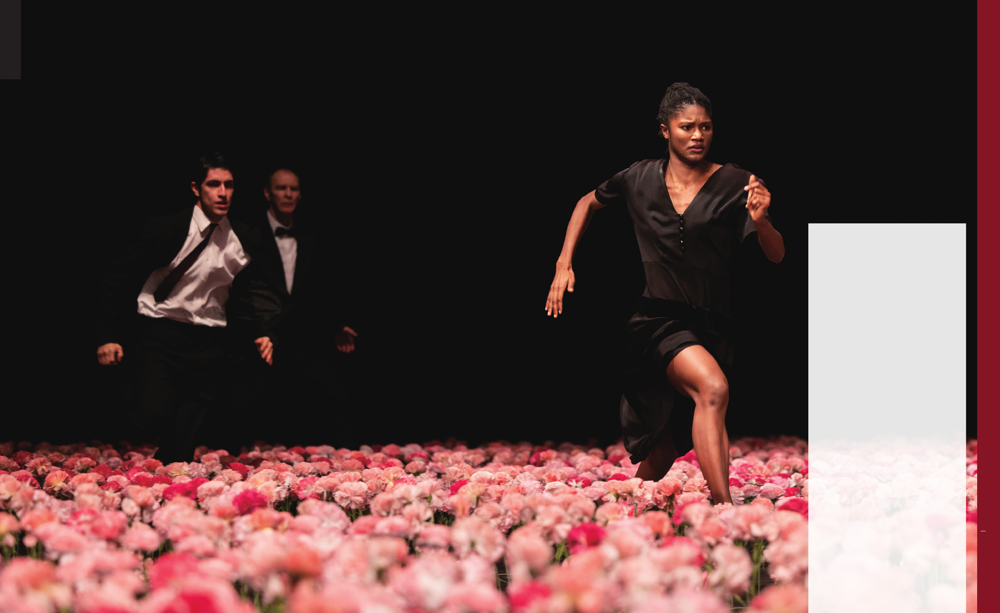
focus
다시 피어난 9천 송이 카네이션_in SEOUL_
피나 바우쉬(Pina Bausch) <카네이션>
무대를 가득 메운 카네이션 사이로 군화를 신은 남
성이 행진하고, 무용수들이 춤추고 노래하며 관객
에게 말을 건다. 유머와 풍자가 공존하는 장면 속
에서 억압과 통제의 현실이 드러나고, 공연이 끝날
무렵 꽃밭은 짓밟혀 흩어지며 잊히지 않는 여운을
남긴다. 영국 가디언(The Gurdian)지는 이를 두고 “
수천 송이 분홍빛 카네이션으로 뒤덮인 무대는 시
각적으로 압도적이며, 유머와 위협이 동시에 깃든
즐겁고 초현실적인 광경”이라고 극찬했다. 같은 기
사에서 “새로운 세대가 고전에 다시 꽃을 피웠다”
는 평가도 더해지며, 이 작품이 오늘날 어떤 의미를
갖는지 확인시켰다. 작품의 영감은 1980년 남아메
리카 투어 중 피나 바우쉬가 칠레 안데스 산맥에서
마주한, 셰퍼드 개가 뛰노는 카네이션 들판에서 비
롯됐다. 이 인상적인 풍경은 무대디자이너 페터 팝
스트에 의해 초현실적인 무대로 구현되었고, 피나
바우쉬는 2000년 당시 내한을 앞둔 인터뷰에서 “
이 작품은 젊음과 아름다움이 상징하는 ‘희망’과 우
리가 일상에서 마주하는 ‘현실’이라는 두 축으로 구
성되어 있다”고 설명한 바 있다. 카네이션’은 2000
년 LG아트센터 개관작으로 소개된 후 25년 만에
귀환해 2025년 LG아트센터 서울 공연으로 다시 올
랐다. 새로운 세대가 합류해 25년 만에 돌아온 ‘카
네이션’은 피나 바우쉬의 유산과 탄츠테아터 부퍼
탈의 미래를 동시에 엿볼 수 있는 특별함을 전했다.
2025.11.6-11.9 LG아트센터 서울
27
26
December 12, 2025THE MOVE
•
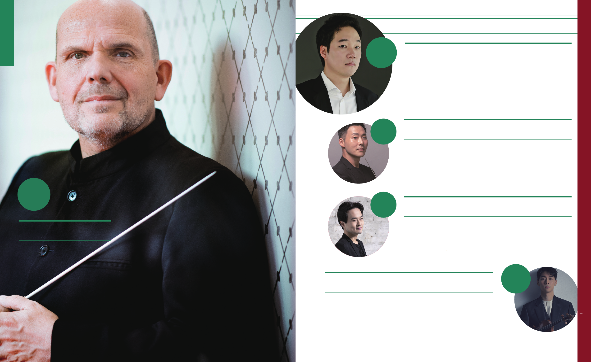
2022년 게오르그 솔티 지휘상의 수상자로 선정된 이얼은 한국계 캐나다인 지휘자다. 커티스 음악원과 줄리
어드 음악대학에서 첼로를, 맨해튼 음악학교와 뉴잉글랜드 음악원에서 지휘를 전공했다. 2022년부터 앤 아
버 교향악단의 음악감독으로 활동 중이며, 최근 보스턴 교향악단의 부지휘자로서 3년간의 임기를 마쳤다.
2025/26 시즌에는 토론토 교향악단과의 정기 연주회 데뷔 무대를 비롯해 보스턴 교향악단과의 재초청 공연
도 여러 차례 예정돼 있다. 고국인 한국에서 시즌의 시작을 알리는 이얼은 12월 예술의전당 제야음악회 지
휘를 맡았다. 통영국제음악제에서 통열페스티벌오케스트라와의 무대도 앞두고 있다.
12.31(수) 예술의전당
피아니스트 김다솔은 유럽과 한국을 중심으로 활발한 연주 활동을 이어가고 있다. 만 16세의 나이에 일본 나
고야 국제음악콩쿠르 우승을 시작으로, 통영 윤이상 국제음악콩쿠르 준우승 및 오케스트라 특별상 수상 등
국제 무대에서 두각을 나타내며 이름을 알렸다. 지휘자 미하엘 잔데를링과의 독일 전역 투어를 통해 본격적
으로 유럽 무대에서 주목받기 시작한 그는 정명훈, 마린 알솝 등 세계적인 거장들과 함께 무대에 올랐다. 라
이프치히 국립음대에 재직한 바 있고, 현재 서울대학교 음악대학 교수로 재직하며 차세대 피아니스트 양성
에 힘쓰고 있다. 12월 예술의전당 제야음악회에서 연주한다.
12.31 예술의전당
이얼 Earl Lee
Conductor
김다솔 Dasol Kim
Piano
4
3
T
op10
열정적인 음악성과 모험적인 프로젝트로 음악적 스펙트럼을 넓혀가며 클래식 솔리스트, 실내악 연주자뿐만 아니라
재즈, 팝 등 다양한 장르를 아우르며 활발한 활동을 펼치고 있다. 클래식 아티스트 최초로 MBC <나 혼자 산다>에 출
연해 화제가 됐고, MBC <복면가왕>, KBS대기획 <지구 위의 블랙박스>, KBS <더시즌즈 - 박재범의 드라이브> 등 다수
의 프로그램들을 통해 친근하고 솔직한 성격으로 대중적 호응을 얻으며 인기를 끌었고, MBC <TV예술무대> 새로운 MC
로 발탁됐다. 1991년 시카고에서 태어나 6살에 바이올린을 연주하기 시작했고 헬렌 콸바서의 마지막 제자로 뉴잉글랜드
음악원에서 석사를 취득했다. 2025 예술의전당 <제야음악회>에서 연주한다. 12.31 예술의전당
대니 구 Danny Koo
Violin
5
뉴욕 메트로폴리탄 오페라극장, 영국 로열 오페라 하우스 등에서 활동 중인 베이스 심기환은 2022년 영국
BBC 프롬스 개막 작품 베르디 <레퀴엠> 독창자로 선정됐다. 핀란드 사본린나 오페라 페스티벌, 프랑스 몽펠
리에 라디오 페스티벌, 서울시향 베토벤 9번 등에 출연했다. 헬싱키 미르얌 헬린 국제 콩쿠르, 파리 롱티보
국제콩쿠르 등 다수의 콩쿠르에서 우승했다. 현재 프랑크푸르트 오페라극장의 솔리스트로서 오페라 <아이
다>, <피가로의 결혼>, <돈 조반니>, <라보엠> 등의 오페라 주역으로 활동 중이다. 12월, 츠베덴 감독이 지휘하
는 서울시향의 베토벤 <합창> 공연 무대에 오른다.
12.18-19 예술의전당, 롯데콘서트홀
심기환 Kihwan Sim
bass
2
이달의 음악가
얍 판 츠베덴(1960년 네덜란드 출생)은 2024년부터 서울시립교향악단의 음악감독으로 활동
하고 있다. 12월 송년 공연의 하이라이트로 츠베덴 감독은 서울시향의 베토벤 <합창> 공연으
로 서울시향 2025년 정기공연의 대미를 장식한다. 츠베덴은 로열콘세르트헤바우 오케스트라,
라이프치히 게반트하우스 오케스트라, 베를린 슈타츠카펠레, 파리 오케스트라, 빈 필하모닉,
베를린 필하모닉, 런던 심포니, 시카고 심포니 오케스트라, 클리블랜드 오케스트라, 로스앤젤
레스 필하모닉, 샌프란시스코 심포니를 지휘했다. 홍콩 필하모닉과 바그너의 <니벨룽의 반지>
전곡 연주를 낙소스 레이블을 통해 발표한 츠베덴은 뉴욕 필하모닉과 세계 초연한 데이비드
랭의 오페라 <국가의 죄수>(2020)와 그래미상 후보에 오른 줄리아 울프의 오라토리오 <내 입
안의 불>(2019)을 데카골드 레이블로 녹음했다. 그가 지휘한 <로엔그린>, <뉘른베르크의 명가
수>, <파르지팔> 음반은 2012년 에디슨 최고의 오페라 음반상을 받았다.
츠베덴은 줄리아드 음악원 학생이던 19세에 로열콘세르트헤바우 오케스트라의 최연소 악장
으로 임명되었으며, 1996년 지휘자로서의 경력을 시작했다. 츠베덴은 안트베르펜심포니의
명예 지휘자이자 네덜란드 라디오 필하모닉의 명예 지휘자이며, 이 교향악단의 상임 지휘자
(2005-2013)로 활동했다. 그는 로열 플랜더스 오케스트라 상임지휘자(2008-2011)와 댈러스
심포니 오케스트라(2008-2018) 및 뉴욕 필하모닉(2018-2024) 음악감독을 역임했다. 그의 리
더십 아래 홍콩 필하모닉(2012-2024)은 2019년 영국 클래식 전문 잡지 『그래머폰』에서 올해의
오케스트라로 선정되었다. 또한 츠베덴은 2012년에 미국 클래식 전문 잡지 『뮤지컬 아메리카』
에서 올해의 지휘자로 선정되었다. 2023년에는 콘세르트헤바우상을 수상했다. 1997년 얍 판
츠베덴은 부인과 함께 자폐아 가족을 지원하는 파파게노 재단을 설립했다.
12.8 예술의전당 / 12.19 롯데콘서트홀
1
얍 판 츠베덴
Jaap van Zweden
Conductor
29
28
December 12, 2025THE MOVE
•
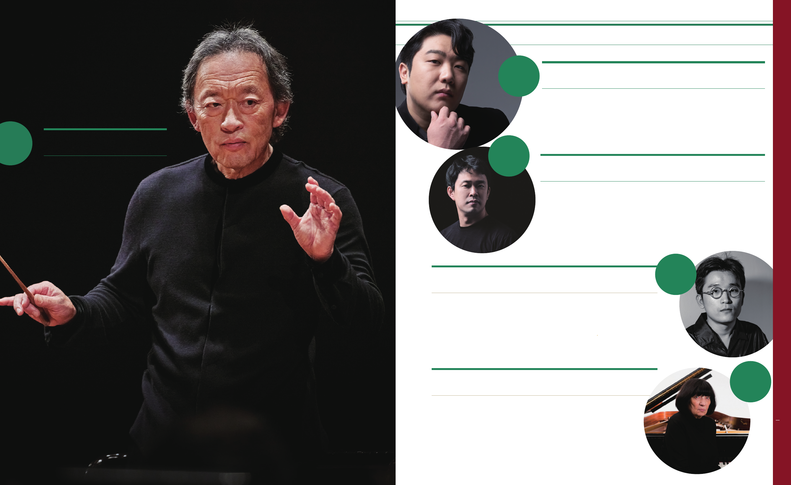
이달의 음악가 Top 10이달의 음악가 Top 10
T
op10
부산시립교향악단 수석객원지휘자 홍석원은 ‘젊은 명장’이라는 찬사와 함께 한국 음악계를 이끄는 지휘자
로 손꼽힌다. 탁월한 음악성과 다양한 음악 활동 경험을 바탕으로 전통적인 관현악 레퍼토리는 물론 현대
음악과 오페라의 깊이 있는 해석으로 국내외에서 명성을 얻고 있다. 서울대학교 작곡과에서 지휘 전공, 베
를린 국립음대 지휘과 디플롬(Diplom) 과정과 최고연주자과정(Konzertexamen)을 졸업했다. 카라얀 탄생 100
주년 기념 지휘 콩쿠르에서 3위로 입상을 비롯해 독일음악협회가 선정하는 ‘미래의 마에스트로’에 선발되
는 영예를 안았으며, 오스트리아 인스부르크 티롤 주립극장의 수석 카펠마이스터로 활약했다. 유럽에서 먼
저 입증된 홍석원의 리더십은 국내 음악계의 다양한 활동으로 이어졌다. 2025년 9월부터 서울대학교 음악
대학 작곡과 지휘전공 교수로 재직중이다.
홍석원 Seokwon Hong
Conductor
바리톤 김기훈은 한국을 대표하는 차세대 성악가로, 국제 무대에서 가장 주목받는 바리톤 중 한 명이다. 연
세대학교 음악대학을 수석으로 졸업하고 독일 하노버 국립음대에서 석사 및 최고연주자과정 졸업, 2021년
‘BBC 카디프 싱어 오브 더 월드 콩쿠르’에서 한국 성악가 최초로 우승하며 세계적인 명성을 얻었다. 이 우
승은 단순한 개인 성취를 넘어 한국 성악계의 국제적 위상을 크게 끌어올린 사건으로 평가된다. 김기훈의
가장 큰 강점은 짙고 안정적인 중후한 음색, 균형 잡힌 성량, 그리고 오페라적 드라마를 설득력 있게 전달
하는 표현력이다. KBS교향악단과 <합창> 무대에서 노래한다. 12.27(토) 예술의전당
김기훈 Kihun Kim
Bariton
7
8
조지아 출신의 피아니스트로, 모스크바 음악원에서 겐리히 네이가우스와 야코프 자크에게 사사하
며 러시아 피아노 전통을 계승했다. 80대의 연륜에도 불구하고 현역 피아니스트로서 유럽과 아시
아 등에서 꾸준히 독주회를 열거나 저명한 오케스트라와의 협연 무대에 오르고 있다. 그녀는 24
세 때 츠비카우의 슈만 콩쿠르에서 우승, 이 시대의 위대한 슈만 해석자 중 하나로 꼽힌다. 현대
러시아 작곡가들까지 아우르는 폭넓은 레퍼토리로도 유명하며 고전부터 낭만주의 레퍼토리에 특
히 강점을 보인다. 모스크바 음악원과 뮌헨 음대의 교수로도 재직 중이다. 12월 내한에서 국립심포
니와 협연하며 국내 오케스트라와의 첫 협연 무대를 갖는다. 12.6(토) 예술의전당
KBS교향악단의 팀파니 수석으로 재임 중(2022~)인 이원석은 세계 유수의 지휘자와 함께 연주했다. 서울을 기반
으로 창•제작, 기획, 감독, 연주를 포괄하여 작업하는 동시대 음악가로 클래식 음악을 바탕으로 전통적 형태의 콘
서트홀 뿐만 아니라 미술관과 같은 비(非)공연장을 비롯하여 자연, 나아가 온라인을 포함한 대안적 공간에서 지속
적으로 작업하고 있으며 퍼커션을 주요 매개로 작품마다 도전적인 방향을 제시하며 동시대 음악의 기능과 역할을
고찰한다. 퍼커션 솔리스트로서 이원석은 필라델피아 오케스트라와의 협연으로 국제무대에 데뷔, 전방위 연주자인
그는 2009년부터 독주회와 퍼포먼스를 비롯한 다양한 형태의 연주 작품을 발표하고 있다. 12월 예술의전당 토요콘서트
에서 홍석원 지휘자와 연주한다. 12.20(토) 예술의전당
엘리소 비르살라제 Eliso Virsaladze, 83세
Piano
이원석 Wonseok Lee
Multi-percussionist
10
9
현재 KBS교향악단 계관지휘자로 이탈리아 라 스칼라 극장 차기 음악감독으로 선임된 정명훈은 한국 클래식 음악이 국제무대의 주변부에
서 중심으로 이동하는 과정 자체를 체현한 지휘자다. 피아니스트로 출발해 지휘자로 전향한 그는 파리 오페라 음악감독, 로마 산타 체칠리
아 국립 오케스트라 음악감독 등 유럽 핵심 기관을 이끈 최초의 한국인이며, 프랑스·독일·이탈리아 전통을 균형 있게 소화한 해석으로 신
뢰를 쌓아왔다. 그의 음악은 과시적 제스처보다 구조의 명료성, 서정성과 윤리성을 중시하며, “지휘자가 드러나지 않는 음악”이라는 평가로
요약된다. 특히 서울시립교향악단 음악감독 시절은 한국 오케스트라사의 분기점이었다. 단원 선발과 레퍼토리, 연주 기준을 국제 표준으로
끌어올리며 서울시향을 아시아 정상급 오케스트라로 도약시켰으나, 동시에 강한 리더십과 공공기관 거버넌스의 충돌이라는 논쟁도 남겼다.
이는 개인의 문제가 아니라 한국 문화행정과 예술 리더십의 구조적 한계를 드러낸 사례로 평가된다. 정명훈은 한국 음악계가 세계와 접속하
는 방식을 바꾼 인물로 평가받는다. 오케스트라와 오페라 현장에서 음악적 진실성을일관되게 추구해왔다. 오늘의 정명훈은 현역 지휘자를
넘어, 한국 클래식 음악사에서 하나의 ‘시대’로 자리한다. 12월에 만나는 정명훈 지휘자는 창단 70주년을 앞둔 KBS교향악단의 2025년 피날
레 무대 베토벤 <합창>의 포디움에 오르며, KBS교향악단과 함께 세종문화회관 송년 무대에서 <합창>을 지휘한다.
12.27(토) 예술의전당 / 12.30화) 세종문화회관
6
정명훈
Myung-Whun Chun
conductor
31
30
December 12, 2025THE MOVE
•
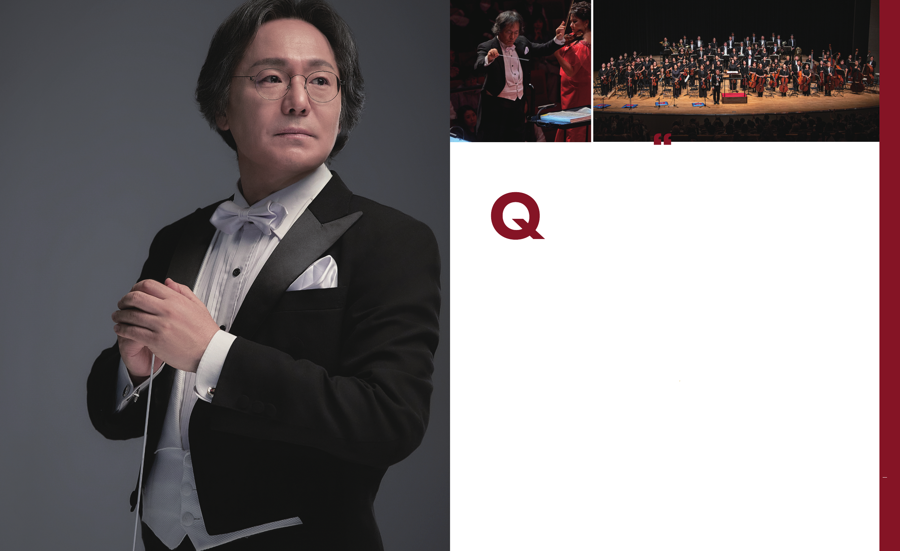
백진현 대구시립교향악단 음악감독 겸 상임지휘자
대구시향을 이끌며 가장 중요
하게 생각하는 ‘지역 오케스트
라의 역할과 정체성’은 무엇이
라고 보십니까?
지역 오케스트라는 그 도시의 문
화적 기억과 정서를 소리로 재현
하면서, 지역사회와 함께 호흡하
는 공동체라고 생각합니다. 단순히 훌륭한 연주를 들려주
는 데 그치지 않고, 지역의 삶과 정서를 음악에 담아 시민
들이 일상에서 자연스럽게 음악을 접하도록 하는 것이 오
케스트라의 본질적 역할이라고 봅니다. 또한 그 도시를 대
표하는 문화의 얼굴이자 예술 사절단이기도 합니다. 지역의
정체성을 바탕으로 품격 있는 무대를 만들고, 그 예술적 성
과를 국내외로 넓혀가며 도시의 위상을 높이는 일 역시 우
리의 중요한 사명입니다. 결국 오케스트라가 도시의 숨결
을 음악으로 표현하고 그 소리를 시민들과 나눌 때, 그 음
악은 ‘우리의 소리’로 들리고, 시민의 자부심으로 이어집니
다. 그래서 제가 대구시향을 이끌며 가장 중요하게 생각하
는 것은 바로 ‘지역과의 공감, 그리고 그 공감을 예술로 확
장하는 일’입니다.
서울 중심의 음악 생태계 속에서, 대구시향이 지닌 고유
한 색채나 사운드 아이덴티티는 어떤 점에서 차별화된
다고 할 수 있을까요?
대구시향의 가장 큰 차별성은 두 가지라고 생각합니다. 하
나는 지역 연주자들과 오랜 시간 함께 쌓아온 단단한 팀
워크, 또 하나는 이 도시의 삶과 정서에서 비롯된 따뜻하
고 직관적인 음악 호흡입니다. 대구시향은 지역의 감수성
과 시민들의 반응을 가장 가까이에서 느끼며 성장해 왔습
니다. 그만큼 공연 하나하나가 관객과의 교감 속에서 만들
어지고, 그 에너지가 무대 위 연주로 자연스럽게 이어집니
다. 이런 과정에서 대구시향만의 색채가 만들어진다고 생
각합니다. 그것은 대구 시민과 함께 쌓아온 삶의 이야기
가 스며든 음악입니다. 긴 시간 이곳에서 음악인으로 살아
온 제 삶 역시 그 안에 자연스럽게 깔려 있습니다. 따라서
대구시향의 음악은 대구라는 도시의 정체성과 품격을 예술로 드러내는 방식이라고 생각
합니다. 우리는 이 도시의 이야기를 세계 어디서든 자신 있게 들려줄 수 있는 오케스트라
가 되고자 합니다.
지역 관객과 함께하는 음악의 의미, 즉 ‘대구 시민의 오케스트라’로서의 존재 이유
를 어떻게 정의하십니까?
음악은 함께 듣는 순간에 완성되는 예술이고, 그래서 관객은 단순한 청중이 아니라 우리
의 ‘동행자’라고 생각합니다. 음악이 시민의 일상과 함께할 때 그것은 단지 공연이 아니라
한 도시의 정서와 기억을 이어주는 언어가 됩니다.
저는 연주회 하나하나가 그런 공동의 기억이 쌓이는 시간이 되길 바랍니다. 관객의 표정,
호흡, 박수 등 그 모든 반응이 저와 단원들에게 음악의 방향을 알려주는 생생한 신호와 같
습니다. 그 안에서 우리는 대구시향의 음악적 정체성을 찾아가고, 그 소리가 다시 시민의
마음으로 돌아갈 때 비로소 오케스트라의 존재 이유가 완성된다고 생각합니다.
지휘자로서 음악을 통해 도시의 문화적 품격을 높이는 데 어떤 책임감을 느끼고 계
신지요?
도시의 품격은 화려한 건물이나 산업의 규모보다, 그 안에서 살아 숨 쉬는 문화의 깊이에
서 비롯된다고 생각합니다. 음악은 그 문화의 가장 본질적인 언어이자, 한 도시의 정서와
감수성을 비추는 거울이라 할 수 있습니다. 그래서 저는 매 공연을 준비할 때 완성도 높
은 연주만을 목표로 하기보다, 프로그램 구성부터 협연자 선택, 리허설 과정 하나하나까
지 모두가 대구의 문화적 신뢰와 맞닿아 있다고 믿습니다.
지휘자는 오케스트라를 이끄는 사람인 동시에, 도시의 문화가 어떤 방향으로 나아갈지 제
시하는 역할을 맡고 있습니다. 공연이 끝난 뒤 관객들이 “대구시향이 이런 음악적 색채를
지니고 있구나”라고 느낀다면, 그것이 지휘자로서 가장 큰 책임이자 보람이라 생각합니다.
대구시향이 앞으로 지역 문화예술계 전체에 어떤 파급력과 영향력을 지니길 바라
십니까?
저는 대구시향이 지역 문화예술계의 상생과 협력을 이끄는 공공 예술단체로 자리하길 바
랍니다. 예술은 우리의 삶과 정서를 풍요롭게 만드는 힘이 있습니다. 그 힘을 지역 안에서
구체적으로 실현해, 지역 예술인에게는 창작의 기회를, 청년 음악가에게는 성장의 발판
을, 시민에게는 문화 향유의 기쁨을 나누어 주는 단체가 되고자 합니다.
오케스트라의 연주력과 예술성 향상을 위해 중요하게 추진하고 있는 일이 있다면?
연주력 향상은 단기간에
이룰 수 있는 일이 아닙니다. 그래서 저는 매 공연마다 리허설 과
정을 세밀하게 계획하고, 단원들이 개인 연습을 넘어 서로의 소리를 듣고 반응하는 ‘합주 감
1964년 창단된 대구시립교향악단은 60년의 시간 동안 한 도시의 정서와 기억을 음악으로 기록해온 문화예술단체다. 특히 최
근 일본 투어와 아시아오케스트라위크 초청 등 국제무대에서의 성과는 대구시향이 지역에 뿌리를 두면서도 세계로 확장 가능
한 예술적 잠재력을 지닌 오케스트라임을 보여준다. 2013년 재개관한 대구콘서트하우스를 거점으로, 대구시향은 이제 연주
단체를 넘어 도시를 대표하는 문화 플랫폼으로 자리매김하고 있다. 이 전통의 현재에 2023년 10월, 제11대 음악감독 겸 상임
지휘자로 백진현이 합류했다. 그는 오케스트라를 “도시의 문화적 기억과 정서를 소리로 재현하는 공동체”로 정의하며, 완성
도 높은 연주를 넘어 시민의 삶과 감각이 스며든 ‘우리의 소리’를 지향한다. 악보에 대한 철저한 존중, 단원과의 신뢰를 바탕으
로 한 소통, 통제가 아닌 조율의 리더십은 그의 음악적 태도를 분명히 드러낸다. 백진현 체제의 대구시향은 전통과 창작, 대중
성과 예술성의 균형을 모색하며 지역과 세계를 잇는 예술사절단으로서의 역할을 확장 중이다. 대구시향의 60년 역사 위에서,
한 지휘자가 어떤 철학과 책임감으로 오케스트라의 다음 시간을 설계하고 있는지를 보여주는 기록으로 이야기를 나눠본다.
지역오케스트라,
도시의 문화적 기억과 정서를 소리로 재현하다
오케스트라는 도시의 숨결이다
60년의 시간 너머 오늘, 하나의 소리
people
33
32
December 12, 2025THE MOVE
•
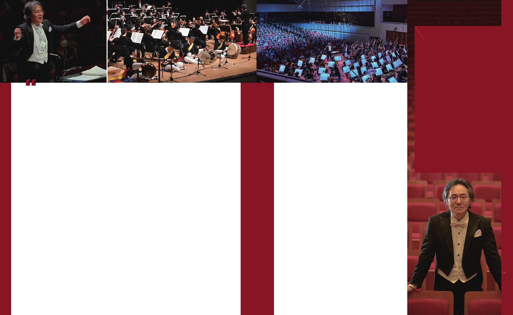
라는 도시가 가진 따뜻한 정서와 활기 있는 에너지를
음악 속에 자연스럽게 녹여내는 것, 그것이 가장 대구
적이고 한국적인 모습이라 생각합니다.
또한 서양 클래식을 연주하더라도 그 안에 우리만의
색채와 감수성을 담는 것이 중요합니다. 앞으로도 한
국적 정서를 지닌 작품을 통해 대구시향의 고유한 소
리를 전하고, 깊이와 전문성을 기반으로 해외 청중에
게도 진정한 공감과 울림을 전하는 무대를 만들어 가
고자 합니다.
기념음악회(예: 창단기념, 2.28기념음악회 등)는 그
의미에 걸맞은 선곡이 중요하다고 여겨집니다. 기
념음악회에서 ‘선곡의 방향성’을 어떻게 설정하십니
까?
결국 중요한 것은 음악이 사람들을 한자리에 모으고,
그 순간이 ‘기념’의 의미를 공유하는 시간이 되도록 하
는 것입니다. 또한 해당 기념의 뜻을 음악적으로 담아
낼 작품이 부족하다면, 장기적으로는 그러한 곡을 위
촉해 새롭게 만들어 가는 방안도 필요하다고 생각합니
다. 다만 이는 개별 연주단체의 선택을 넘어, 국가나 지
자체, 그리고 관련 기관이 함께 논의하고 추진해야 할
과제일 것입니다.
백진현 지휘자께서는 섬세하고 분석적인 음악 해석
으로 평가받고 있습니다. 지휘자로서 가장 중요하게
생각하는 음악 해석의 기준은 무엇입니까?
음악 해석에서 가장 중요한 기준은 ‘악보’, 즉 작곡가의
창작 의도입니다. 우리가 연주하는 작품이 건축물이라
면, 악보는 작곡가가 남긴 메시지를 담은 설계도와 같
아서, 연주자는 먼저 이를 정확히 읽고 작품이 가진 색
채와 흐름을 충실히 구현해야 합니다.
각’을 꾸준히 다질 수 있도록 하고 있습니다. 특히 단원들이 주체적으로 기획과 연주에
참여하는 실내악 무대를 연중 개최해, 각자의 음악적 개성과 앙상블 능력을 동시에 발
전시킬 수 있는 환경을 조성하고 있습니다.
대구시향은 창작곡 연주에도 노력하고 있는 것 같습니다. 프로그램 구성에서 ‘전통
과 혁신’의 균형을 어떻게 잡고 계신가요? 특히 대중적 친화성과 예술적 깊이의 공
존에 대해 어떻게 실현하고 있는지요?
오케스트라는 본질적으로 서양 음악연주를 중심에 두지만, 동시에 오늘의 음악에도
책임이 있다고 생각합니다. 대구시향은 서양 클래식 레퍼토리 안에서도 시대적 감수
성을 반영할 수 있는 국내 초연 작품이나 창작 작품을 찾아 시민들에게 전하고 있습니
다. 지난 10월 정기연주회에서도 멘델스존의 작품과 함께 지역 작곡가 두 분의 창작
곡을 함께 연주했는데, 이 시대를 살아가는 작곡가들의 통찰과 사유를 음악으로 나누
는 뜻깊은 시간이었습니다.
대중성과 예술적 깊이의 균형을 맞추는 일은 항상 가장 큰 과제입니다. 공연 기획 단계
에서부터 작품의 배치와 해석의 깊이, 곡에 대한 해설 등을 조율함으로써, 관객이 공감
하면서도 예술적 완성도를 느낄 수 있는 무대를 만들어 나가고자 합니다.
단원들과의 소통, 리허설 과정에서 지휘자로서 중요하게 여기는 리더십의 원칙은
무엇입니까?
지휘자의 리더십이란 ‘통제’보다는 ‘이해와 조율’에서 비롯된다고 생각합니다. 결국 음
악도 사람이 하는 일이고, 그 중심에는 서로에 대한 신뢰가 있어야 합니다.
리허설에서는 제가 음악적으로 요구하는 방향을 명확히 제시하고, 단원들은 이에 적
극적으로 호응하며 자신들의 해석을 더합니다. 그 과정에서 서로 의견이 부딪칠 때
도 있지만, 그러한 소통이 음악을 한층 더 깊이 있게 완성해 줍니다. 지휘자는 단원들
이 어떤 부분에서 어려움을 겪는지 세심하게 살피고, 단원들은 지휘자의 의도를 정확
히 읽어내며 하나의 색채로 조화될 때, 비로소 오케스트라는 ‘한 몸’처럼 호흡하게 됩
니다. 저는 그 순간을 가장 이상적인 리허설의 결과이자, 진정한 음악적 리더십의 모
습이라고 생각합니다.
최근 일본 연주를 다녀오셨는데, 국제교류 음악회의 해외 청중 앞에서 연주할 때,
대구시향이 어떤 ‘한국적 혹은 대구적 정체성’을 보여주길 바라시나요?
해외 무대에서 대구시향이 보여주길 바라는 것은 무엇보다 우리의 진정성입니다. 대구
대구시향, 국내외 사랑받는 오케스트라 목표
지역 오케스트라 상호교류 협력해 상생발전해야..
지역 오케스트라의 리더로서, 그리고 동시에 세계무대의 음악인으로서,
지휘자로서의 개인적 포부를 들려주실 수 있을까요?
대구시향이 지역을 대표하는 오케스트라로서, 세계 무대에서도 확실한
존재감을 보여주길 바랍니다. 연주 수준과 음악적 해석의 깊이를 꾸준히
높이고, 국제 교류와 해외 투어를 통해 다양한 경험을 쌓으며 세계 관객
과 소통하는 기회를 만들어 가야 한다고 생각합니다. 궁극적으로 대구시
향이 국내외에서 사랑받는 오케스트라로 자리매김하도록 이끄는 것이 제
역할이자 책임입니다.
한국의 지역 오케스트라들이 앞으로 함께 고민해야 할 과제는 무엇이
라 보십니까?
먼저 새로운 관객을 개발하고, 지역 사회와 밀착된 프로그램을 기획해 시
민들이 음악을 친근하게 접할 수 있는 환경을 만드는 것이 중요합니다. 또
한 지역 간, 국내외 오케스트라와의 상호 교류를 통해 경험과 아이디어를
공유하며 상생 발전할 수 있는 구조를 만들어야 합니다. 아울러 운영 재정
의 한계는 모든 지역 단체가 직면한 현실적인 문제입니다. 안정적인 재원
확보와 효율적인 운영 방안을 함께 모색하지 않으면 예술적 역량을 충분
히 발휘하기 어렵습니다. 이러한 과제들을 해결하기 위해 각 단체가 협력
하고 지속 가능한 전략을 세우는 것이 지역 오케스트라 전체의 성장과 문
화적 영향력 확대에 필수적이라고 생각합니다.
대구시향이 향후 5년 안에 도달하길 바라는 예술적 목표나 비전, 그리고
대구 시민과 음악 애호가들에게 전하고 싶은 메시지라면?
향후 5년, 대구시향은 단원 각자의 음악적 역량을 꾸준히 발전시키고, 작
품의 의미와 색채를 깊이 있게 표현하는 것을 목표로 합니다. 이를 위해
고전과 낭만, 근현대 작품을 균형 있게 다루고, 나아가 해외 음악 페스티
벌에서도 우리의 연주를 선보이는 기회를 만들어 나갈 계획입니다. 또한
시민들이 클래식 음악을 가까이에서 느끼고 공감할 수 있는 공연을 지속
적으로 선보여, 음악이 일상 속에 자연스럽게 스며들고 감동과 즐거움을
함께 나누는 무대를 만들고자 합니다. 무엇보다 시민 여러분의 큰 사랑에
깊이 감사드리며, 그 성원에 보답하기 위해 앞으로도 시민과 함께 성장하
고, 대구시향만의 독창적 색채와 음악적 정체성을 확립해 나가겠습니다.
인터뷰_임효정 기자
EPILOGUE
백진현 지휘자의 예술철학, ‘조율’로 구축하
는 지역 오케스트라의 방향
인터뷰를 통해 살펴본 백진현 대구시립교향악단 음악
감독의 예술철학은 지역 오케스트라의 공공성과 음악
적 완성도를 동시에 성립시키려는 ‘조율의 리더십’으
로 요약할 수 있다. 그는 대구시향을 단순한 연주단체
가 아닌, 도시의 문화적 기억과 정서를 소리로 재현하
는 공동체로 규정하며, 시민과의 공감을 정체성의 핵심
으로 삼고 있다. 악보와 작곡가의 의도를 해석의 중심
에 두는 태도는 연주의 안정성과 신뢰를 구축하는 기반
이 된다. 과도한 연출이나 자의적 해석을 경계하며, 단
원과의 소통을 통해 장기적으로 단단한 앙상블을 만들
어가는 방식 역시 그의 음악적 태도를 분명히 보여준
다. 통제보다 이해와 합의를 중시하는 리더십은 오케스
트라의 체질을 서서히 강화하는 데 유효하다. 다만 공
감과 안정성에 무게를 둔 철학은 급진적 미학 실험이나
강한 해석적 도약이 상대적으로 약하게 보일 가능성도
내포한다. ‘지역의 정서’가 앞으로 어떤 상징적 레퍼토
리와 프로젝트로 구체화될지 여부는 향후 과제다. 종합
하면 백진현의 예술철학은 화려함보다 지속성과 신뢰
를 중시하는 현실적 모델이다. 대구시향이 지역에 뿌리
내린 고유한 음악적 얼굴을 구축해 나간다면, 그 중심
에는 이 ‘조율형 리더십’이 자리할 것이다.
35
34
December 12, 2025THE MOVE
•
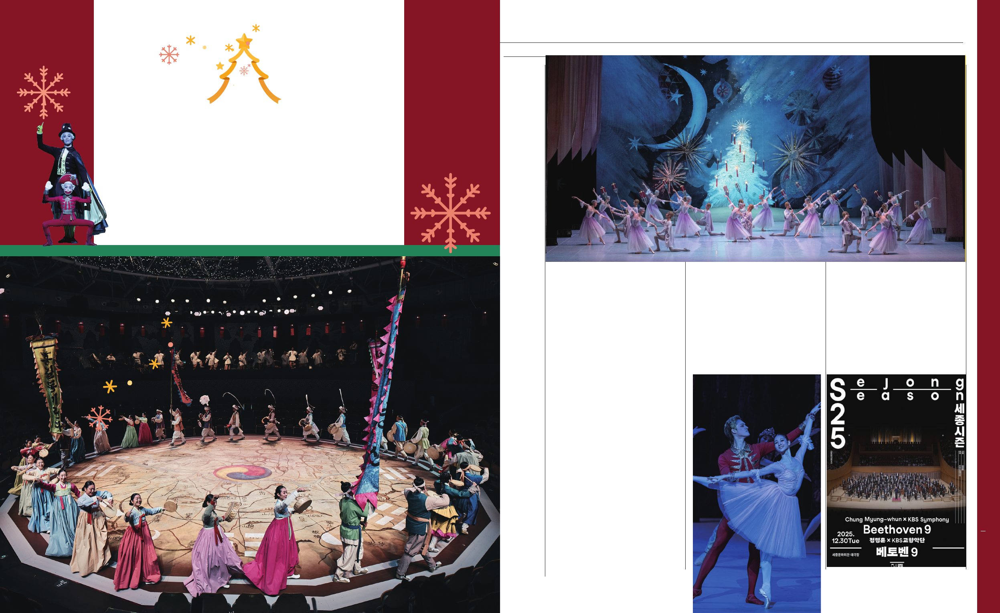
2025
올해 마지막 티켓,
무엇을 고를까?
송년 추천 공연 빅5!
발레 <호두까기 인형>
연말 대표 발레 레퍼토리 중 하나죠.
클래식한 이야기 + 가족/연인 나들이
무대에 아주 적합해 가족, 연인, 청소년
모두 즐기기에 좋은 공연이다. 매년
12월이면 전국에서 공연되며, 국립발레단과
유니버설발레단 공연이 대표적이다.
화려한 무대 · 음악이 연말 분위기와 잘
맞아서 ‘특별한 날’의 기분을 만들어준다.
국립발레단 <호두까기인형>는 2000년부터
안무가 유리 그리가로비치 버전을 국내
도입해 선보이고 있다. 특징은 화려한
음악과 무대미가 연말 분위기를 한층
높여주며, ‘눈 내리는 동화’처럼 따뜻하고
낭만적인 기억을 남긴다. 인형 역할을 목각
인형이 아닌 어린 무용수가 직접 연기하고,
1막의 눈송이 군무, 2막의 꽃의 왈츠와 여러
나라 인형들의 춤(디베르티스망) 등이 주요
볼거리다.
국립발레단 (12 월 13 ~ 25일, 예술의전당
오페라극장)
유니버설발레단은 러시아 마린스키
발레단의 안무 버전인 바실리 바이노넨
버전을 기반으로 특히 아기자기하면서도
수준 높은 춤들이 어우러져 따뜻하고
동화적인 분위기가 강하다. 테크닉적
화려함과 함께 관객이 경험하는 동화 속
감성, 따뜻하고 친근한 분위기에 초점을
맞춘 연출로 크리스마스 파티 무드의 요소가
강하다. 연말 크리스마스 분위기 완성하기
좋은 무대로 예매가 몰릴 수 있는 만큼 가능한
빠른 예약이 추천된다.
유니버설발레단 (12 월 17 ~ 28일,
세종문화회관 대극장)
‘송년 공연’의 성수기가 찾아왔다. 화려한 갈라 콘서트, 눈처럼 흩날리는 발레의 명 장면, 귓가를 가
득 채우는 관현악의 울림, 그리고 마지막 날 0시를 향해 다 함께 카운트다운 하는 순간까지. “뭔가
특별한 걸로 올해를 마무리하고 싶다”는 마음이 가장 솔직해지는 12월. 서울의 공연장은 그 어느 때
보다 다양한 빛깔을 품고 관객을 기다린다. 당신의 2025년을 빛낼 ‘송년 공연’을 소개한다.
베토벤 교향곡 제9번 ‘합창’
환희의 송가’로 잘 알려진 이 곡은 연말에
듣기에 특히 의미 있고 울림이 깊어
많이 연주된다. 대편성 오케스트라와
합창, 성악 솔로들이 어우러지는 스케일
있는 무대로, 클래식 팬이라면 놓치기
어려운 공연이다. 격식 있는 분위기라면
Year-End Top 5 Performances
1
2
37
36
December 12, 2025THE MOVE
•
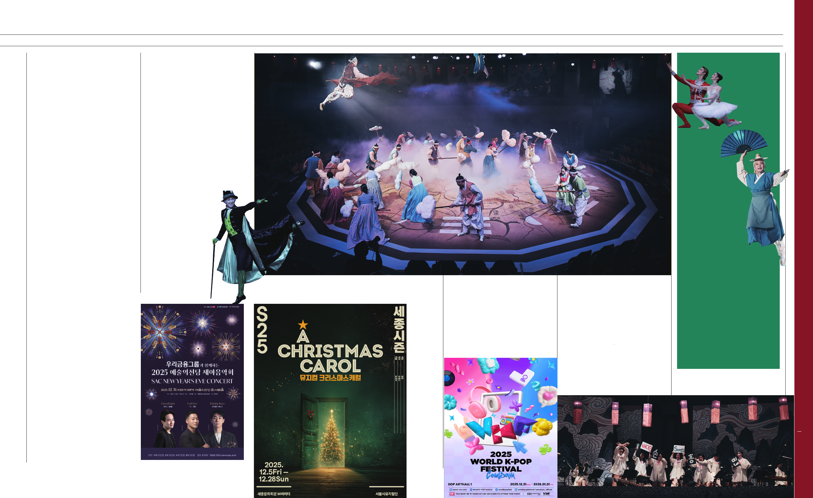
뮤지컬 <크리스마스 캐럴>
영국 찰스 디킨스의 명작 고전 소설을
기반으로 한 창작 뮤지컬로, 아이부터
어른까지 모두 즐길 수 있는 가족형
공연이다. 가족 모두가 공감할 수 있는
따뜻하고 감성적인 무대위에서 희망의
메시지를 전한다. LED 장치와 무대
전환이 감각적으로 빚어내는 환상과 깊은
울림의 음악이 어우러져 올 겨울 연말의
훈훈한 감성을 전한다.(서울시뮤지컬단
12.5(금)-12.28(일) 세종문화회관
M씨어터)
이밖에 연말 뮤지컬로는
<비틀쥬스>(12.16-
2026.3.22 LG아트센터), <MAD
HATTER>(10.22-2026.1.18
링크아트센터드림), 태양의 서커스
<쿠자>(10.11-12.28
잠실종합운동장 내 빅탑),
한국 초연하는 <라이프
오브 파이>(11.29-
2026.3.2 GS아트센터),
그리고 <킹키부츠>(12.17-
2026.3.29 샤롯데씨어터),
<렌트>(11.9-2026.2.22
코엑스아티움), <한복
입은 남자>(12.2-
2026.3.8 충무아트센터)
등이 있다.
드레스코드 복장에 신경써도 좋다. 연말의
분위기를 품격 있게 마무리하고 싶다면 이
무대 하나로 충분한 선택이 될 수 있다.
베토벤 교향곡 9번 ‘합창’은 베토벤이
생전에 완성한 마지막 교향곡으로 약
30년에 걸쳐 집필한 대작이다. 인류의
보편적 가치인 형제애와 평화, 화합의
메시지를 담은 이 작품은 인류사의
역사적 순간마다 연주되며 지금까지 높이
평가받고 있다. 서울시향은 얍 판 츠베덴
감독 지휘로 서선영, 메조소프라노 이아경,
테너 김우경, 베이스 심기환이 출연하며,
고양시립합창단과 성남시립합창단이
환희와 희망을 노래한다.
(서울시립교향악단, 지휘 Jaap van Zweden
12.17(목)-18(금) 8pm. 예술의전당 콘서트홀)
25세종시즌의 한 해를 마무리하는
공연으로 <베토벤의 9번 합창>이
12월 30일, 세종문화회관 대극장에서
펼쳐진다. 마에스트로 정명훈과 한국
클래식 음악을 선도하는 KBS교향악단의
컬래버레이션으로 2025년의 피날레를
장식한다. 2022년 계관 지휘자로 선임되어
KBS교향악단과 더욱 굳건한 호흡을
선보일 것으로 기대된다.
(정명훈 x KBS교향악단 <베토벤 9> 12.30(화)
19:30 세종대극장)
예술의전당 <제야음악회>
한 해의 마지막 밤을 음악으로 장식하고
싶다면, 이 공연이 적합하다 ‘12월 31일에서
새해 0시’의 전환점을 음악과 함께 한다는
의미가 있고, 분위기 자체가 특별하다.
친구들이나 연인과 함께 뜻있게 연말을
보내고 싶다면 제야음악회는 강추다.
2022년 게오르그 솔티 지휘상을 수상한
지휘자 이얼이 국립심포니오케스트를
이끈다. 피아니스트 김다솔과
바이올리니스트 대니 구가 함께 하며
풍성한 감동을 선사한다. 2025년 마지막
날, 콘서트홀에 울리는 클래식 선율에 이어
야외광장에서는 밤하늘을 수놓을 불꽃과
함께하는 카운트다운 이벤트가 펼쳐진다.
제야의 순간, 음악과 함께 특별한 감동을
함께 한다. 밤 9시 30분에 시작해 밤 늦은
시간대이므로 공연이 끝난 뒤 귀가나
교통편을 미리 계획해 두는 게 좋다.
12.31 (수) 9pm. 예술의전당 콘서트홀
Year-End Top 5 Performances
8.22(금)-12.6(토)
<제10회 M클래식축제>
마포아트센터
11.28-2026.1.31
마당놀이 <홍길동이 온다>
국립극장 하늘극장
12.12-2026.1.4 <서울윈터페스타>
서울라이트광화문, 서울라이트 DDP,
서울콘, 광화문 마켓 등
12.9(화)-12.21(일)
<제4회 서울융합예술페스티벌 언폴드엑스>
문화역서울
12.31-2026.1.1.
<2025 서울콘 X WORLD K-POP FESTIVAL
– COUNTDOWN> DDP
온 가족이 함께~ 마당놀이 <홍길동이 온다>
세상을 향한 통쾌한 한 방! 연말연시 온 가족이
함께 즐길 수 있는 국립극장의 마당놀이가 신작
<홍길동이 온다>로 돌아왔다. 세상을 향한 통쾌한
한 방, K-히어로 홍길동이 나가신다! 부패한
세상, 판을 뒤집을 조선의 첫 번째 영웅 홍길동!
서자의 설움을 딛고 활빈당의 수장이 되어
타락한 세상을 향해 통쾌한 정의의 일격을
날리는 홍길동! 분신술과 활공, 아크로바틱과
마술이 뒤섞인 화려한 무대, 재치 있는
입담, 속 시원한 풍자 그리고 익살스러운
해학까지! 웃음과 풍자, 액션과 카타르시스가
한데 어우러진 마당놀이 <홍길동이 온다>는
잔칫집 같은 흥겨운 한 마당이다. 아이부터
할머니할아버지까지 모두 함께 올 겨울
국립극장에서 신명나게 놀아보세!
11.28-2026.1.31. 국립극장 하늘극장
12월 페스티벌
Festive December
3
4
5
39
38
December 12, 2025THE MOVE
•
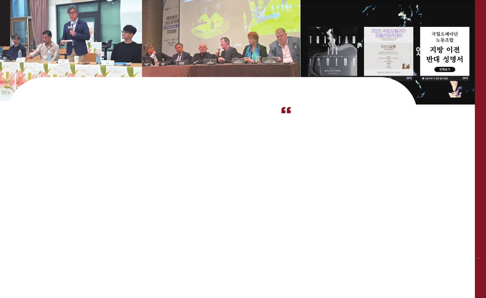
Issue
한국 오페라 생태계에 놓인 단 하나의 ‘국립’
한국에는 단 하나의 국립오페라단이 있다. 이 유일한 ‘국립’이
라는 기관에는 대체로 두 가지 상반된 요구가 동시에 부과된다.
하나는 ‘국가대표 오페라단’으로서 최고 수준의 예술적 성취를
달성하라는 요구이고, 다른 하나는 ‘공공기관’으로서 공연 저변
확대를 강화하라는 요구다. 바로 이 두 요구가 지난 3년 동안
최상호 단장의 운영 전략을 평가하는 기준이 된다. 최상호의 3
년은 일견 안정적이었고, 임기 중 창작오페라 1편(화전가)와 바
그너 시리즈의 개시, 신작 초연 같은 가시적 성과를 남겼다. 그
러나 동시에 구조적 문제를 방치한 채 단기 기획 중심으로 흘러
갔다는 비판도 존재한다. 특히 바그너 <트리스탄과 이졸데> 초
연을 앞두고 터져 나온 서울시향 협업 논란은 국립오페라단의
구조적 취약성을 적나라하게 드러냈다. 이제 우리는 물어야 한
다. 최상호 3년은 무엇을 남겼고, 무엇을 남기지 못했는가? 그
리고 한국 유일의 국립 오페라단은 앞으로 어디로 가야 하는가?
바그너 시리즈의 개시 – 야심찬 시도, 그러나 아
쉬운 기반
2024년 <탄호이저>를 시작으로, 2025년 <트리스탄과 이졸데>
한국에서 유일한 ‘국립오페라단’의 3년은 단장의 개인적 성과보다 ‘국립’이라는 구조적 책
무의 결산으로 읽혀야 한다. 최상호 단장은 취임과 동시에 미진하던 레퍼토리 확대를 목
표로 내세우며, 바그너의 <탄호이저>, <트리스탄과 이졸데>, 그리고 프로코피예프의 <세
개의 오렌지의 사랑> 등 국내 초연 혹은 이례적 레퍼토리를 단행했다. 겉으로는 신작·미
공연작을 발굴한 ‘혁신’으로 포장되었으나, 그것이 국립오페라단의 체계를 업데이트했느
냐? 는 질문 앞에서는 대답이 모호해진다. 전속 오케스트라와 합창단의 부재, 전용극장의
한계, 민간 오페라단과의 협업 역할, 교육·창작 인프라 미비 등 수십 년간 지적돼온 구조
적 문제는 최 단장 재임 동안 거의 진척되지 않았다. 아니, 오히려 교육 프로그램의 비정
형적 사업 확장, 민간과의 협업 관계 악화 등 여러 악재를 낳기까지 했다.
한편, 이번 <트리스탄과 이졸데> 기자간담회에서 서울시향과의 협업은 ‘첫 시도’라기보
다 오페라단이 스스로 해결하지 못한 구조적 결핍을 다시 확인하는 자리였다. 더욱이 한
국 바그너 초연의 첫 단계라면 원형 복원을 통해 관객의 이해가 먼저 아니냐? 하는 문
제 제기와 더불어 기반을 먼저 구축해야 한다는 국내외 평단의 의견을 간과한 채, ‘성과
중심’의 프로젝트형 시도가 이어졌다. 유럽의 국립극장들이 레퍼토리 고도화 이전에 “제
작 시스템과 창작 생태”를 먼저 다지는 것과 대조적이라 할 수 있다. 한국 오페라계의 숙
원은 단장 개인의 예술적 취향이나 단기 실적을 넘어서는 ‘국립 시스템의 구축’이다. 그
렇기에 최상호 3년은 한 개인의 성취보다, 무엇이 시도되었고 무엇이 끝내 외면되었는
지를 묻는 과정이어야 한다. 국립오페라단의 미래는 지금 이 질문을 피해 갈 수 없다. 이
는 내년 2월 임기가 끝나는 최상호 단장 다음의 국립오페라단 제16대 신임 감독에게 주
어진 과제이기도 하다.
에 이르는 바그너 시리즈는 분명 한국 오페라 역사에서 중요한 발걸음이다. 특히 한국관객에게 고
난도의 독·부·관(독창·부조·관현악)을 갖춘 장대한 바그너 레퍼토리를 소개한다는 점에서 의
의가 크다. 그러나 그 성과는 공연 자체의 완성도보다 기획의 야심에 무게가 실린 것이 사실이다.
실제로 <트리스탄과 이졸데> 기자간담회에서 얍 판 츠베덴 지휘자가 예술의전당 오페라극장의 음
향적 제약을 공개적으로 인정했고, 서울시향이 13년 만에 오페라 연주를 처음 맡는 오케스트라라는
사실이 다시 떠오르며 “왜 국립오페라단에는 전속 오케스트라가 없는가”라는 뿌리 깊은 질문이 재
점화됐다. 즉, 바그너 레퍼토리를 수행하기에 국립오페라단의 내부 구조는 준비되어 있지 않았다.
유럽의 주요 오페라하우스—드레스덴 젬퍼오퍼, 빈 슈타츠오퍼, 바이에른 슈타츠오퍼—는 모두 전
속 오케스트라와 합창단을 기반으로 작품 세계를 구축한다. 그 기반 없는 바그너 연주는 언제까지
나 ‘외주 의존형’에 머물 수밖에 없다. 이는 단장의 책임을 넘어선 구조적 문제이지만, 최상호 단장
은 3년간의 단장 재임 동안 이를 해결하기 위한 구체적 노력도 하지않았고, 로드맵은 부재했다는
점에서 비판을 피하기 어렵다.
6년 만의 창작오페라 활력, 체계적 축적 부족
최상호 단장의 임기에서 비교적 긍정적으로 평가되는 영역은 창작오페라의 재활성화다. 오랜 미션
에 따른 요구에 의해 <1945>(2019년) 이후 6년 만에 제작된 <화전가>는 위촉 형식의 창작진의 재현
으로 지역성 소재(사투리 오페라)의 현대적 재구성 등은 독특하고 의미 있는 진전이었으나 공모 방
식의 다양화, 신인 작곡가·대본가 발굴 등의 과제를 두고 근본적인 문제는 여전히 남았다. ① 작
품의 ‘축적’이 이루어지지 않는다. 유럽은 새로운 창작오페라가 성공하면, 같은 작품을 3~5년 주
기로 재공연해 레퍼토리를 축적하고 시장을 키워나간다. 반면 한국은 창작오페라가 대부분 단발성
이다. 최상호 단장 3년 역시 작품 수는 늘었지만 정작 살아남아 ‘국립 레퍼토리’가 된 작품이 없다.
② 유통 체계 부재_해외 오페라하우스는 신작을 투어로 돌리거나, 다른 극장과 공동제작하여 작품
생명력을 늘린다. 한국은 여전히 제작–공연–폐기의 구조에서 벗어나지 못하고 있다. 해외 창작
진의 수입 구조는 한국 제작진의 개척에 제한적으로 역량 제고 기회나 한계를 극복하지도 못했다.
Issue
국립오페라단 최상호 단장 3년,
기획은 있었으나 구조는 없었다.
한국 오페라 생태계의 구조와 리더십을 둘러싼 전망
볼거리는 있었으나 토대는 없었고,
기획은 있었으나 구조는 없었다.
41
40
December 12, 2025THE MOVE
•
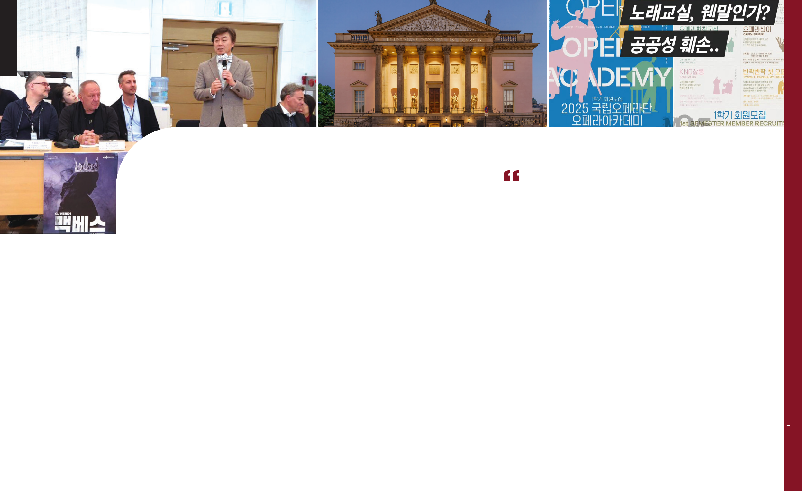
Issue
[이슈_Why]
운영 구조의 문제: 전속 오케스트라·합창단의 부재, 그리고 ‘전용극장 없
음’이라는 난제
최상호 단장의 3년을 비판적으로 평가할 때 가장 크게 제기되는 지점은 오페라단 운영의 근
간을 이루는 구조적 문제가 개선되지 않았다는 점이다. 첫째, 전속 오케스트라의 부재_이는
단장의 잘못이라기보다 국가 시스템의 문제에 가깝다. 그러나 3년간 단장은 다음과 같은 조
치를 취하지 않았다. 국립 전속 오케스트라 창설에 대한 단계적 로드맵 제시, 타 국립예술기
관과의 협업 모델 구축, 장기적 해외 사례 연구를 통한 구조 개혁안 등이다. 그 결과, 바그너
시리즈라는 대형 프로젝트는 오히려 이 구조적 결핍을 극대화해 드러내는 역설적 상황을 만
들었다. 둘째, 전속 합창단 부재_유럽의 오페라하우스는 ‘코어’가 되는 합창단의 수준이 극
장의 수준을 결정한다. 그러나 국립오페라단은 매작품마다 프로젝트성 합창단을 매번 섭외
해야 한다. 작품 완성도는 그때그때 합창단의 역량에 의존할 수밖에 없다. 이는 ‘국립’이라는
명칭과는 어울리지 않는 운영 방식이다. 이에 대한 보완으로 최단장은 임기 마지막해 민간
합창단 2곳을 지정해 협업 시스템으로 단기 계약했다. 그러나 이는 장기적 비전을 담보할 수
없는 일회성 방침에 지나지 않는다. 셋째, 전용극장 부재는 주 공연장인 예술의전당 구조 문
제로 확대된다. <트리스탄과 이졸데> 기자간담회에서 다시 확인됐듯, 예술의전당 오페라극
장은 바그너나 쉬트라우스 작품을 안정적으로 연주하기 위한 음향적·공간적 조건을 충족
시키지 못한다. 이 또한 단장이 당장에 해결할 수 있는 문제가 아니지만, 최단장은 그 문제
를 명확히 인식하고 공론화하며 정책 시스템을 움직이려는 노력이 없었다.
민간오페라단과의 협업 부재_ ‘공공성’의 불균형, 갈등 초래
최근 민간오페라단 사이에서 “국립오페라단은 민간 생태계를 압도하는 공룡 기관이 되었
다”는 불만이 제기된다. 특히 논란이 큰 부분은 민간오페라단과의 소통이나 협업의 부재
로, 예를 들어 국립오페라단이 전국으로 ‘찾아가는 학교오페라’의 과도한 팽창을 들 수 있
다. 연간 100회 이상을 목표로 한 이 사업은 분명 교육·사회적 가치가 있지만, 이는 국립
오페라단의 핵심 기능과 동떨어진 활동이며, 민간오페라단이 이미 수행해온 영역을 공공기
관이 잠식하고 있다는 비판을 받는다. ‘공연 저변 확대’라는 명
분은 있지만, 국립오페라단이 공연횟수 경쟁에 휘말리는 순
간, 국립예술단체로서의 정체성이 흔들린다. 이에 대한 해결
책으로 ‘전략적 역할분담’이 필요하다는 지적이다. 전략적 모
색방안으로 민간오페라단에게 → 학교·지역 순회공연을 맡
기고, 국립오페라단은 → 대형 레퍼토리·창작오페라·고난
도 작품에 집중할 수 있다. 유럽의 경우, 학교·찾아가는 오
페라 프로그램은 주로 지역 오페라단이나 프리랜스 팀이 담당
하고, 국립 규모의 하우스는 예술적 수준을 높이는 작업에 집
중한다. 한국에서도 이 역할 분담이 필요하며, 최상호 단장은
이 구조적 문제를 적극적으로 조정하지 못했다는 점에서 비판
을 피하기 어렵다.
해외 사례와 비교한 한국의 현실:‘기획 중심’ vs ‘구조 중심’
유럽의 오페라 하우스들은 작품보다 ‘조직’을 먼저 구축한다.
전속 오케스트라, 전속 합창, 전속 무용수·솔리스트 풀, 자
체 공방(무대·의상·소품 제작), 장기적 시즌 운영(3~5년 계
획) 등.
반면 한국 국립오페라단은 전용극장 없음, 오케스트라 없음,
전속합창단 없음, 자체 제작 공방 없음이다. 즉, 모든 것을 외
부에서 임시로 들여와야 하는 ‘조립형 오페라 단체’라는 구조
적 한계를 안고 있다. 유럽에서 공부한 경험이 있는 최상호 단
장은 이러한 구조적 문제를 잘 알고 있었고, 작품 기획과 콘
텐츠에 초점을 맞추었지만, 조직 기반을 강화하는 방향에서는
거의 성과를 만들지 못했다. 이는 ‘한국식 국립예술기관’이 가
진 한계를 그대로 되풀이한 셈이다.
최상호 3년은 무엇을 남겼는가?
결론적으로, 최단장은 “볼 것은 있었으나 쌓인 것은 적은 3년”을 남겼다. 바그너 시리즈라
는 대형 기획의 시작, 한국 창작오페라의 재가동 등의 성과를 남겼으나 전속 오케스트라
구축의 로드맵, 전속 합창단·스태프 시스템, 민간오페라단과의 건강한 생태계 조성, 전
용극장 확보를 위한 정책적 도전, 창작오페라의 지속 가능한 레퍼토리 체계, 한국 오페라
의 미래 전략에 대한 ‘구조적 개혁’ 등을 수행하지 못했다. 즉, 그의 성과는 프로젝트적이
었고 그의 부실은 구조적 성과 부재로 요약된다.
향후 국립오페라단이 가야 할 길
향후 국립오페라단의 비전을 향해 핵심 과제로 다음을 제시할 수 있다. 첫째, 전속 오케
스트라 창설 또는 ‘국립 오페라 전용 오케스트라’ 지정이 필요하다. 유럽 사례를 볼 때, 오
케스트라 없는 국립오페라단은 존재 자체가 불안정하다. 둘째, ‘국립레퍼토리오페라’ 구
축으로 창작·고전 레퍼토리를 지속적으로 재공연하는 시스템 마련, 셋째, 민간오페라단
과의 역할 분담
으로 교육·순회 공연은 민간으로 이양하고, 국립은 예술적 고난도 작품에 집중, 넷째 전
용극장 확보를 위한 사회적·정책적 공론화 등이다. 최상호 3년의 가장 큰 과제이자 남겨
진 숙제라고 할 수 있다.
‘국립’이라는 이름의 무게
최상호 단장의 3년은 한국 오페라단의 현주소를 적나라하게 보여주는 시간이었다. 그는
새로운 기획을 선보였지만, 한국 오페라가 풀어야 할 근본적 문제들은 여전히 제자리였
다. 우리는 이제 단장 개인을 평가하는 것을 넘어, 국립오페라단이라는 제도의 구조 자체
를 다시 설계해야 한다. 한국의 유일한 국립오페라단이 ‘가장 잘 만드는 오페라단’이 되는
것. 창작시스템을 정상화하는 것, 그것이 국립오페라단 앞으로의 10년이 해결해야 할 과
제다. 다음 16대 단장에게 거는 기대이기도 하다.
임효정 기자
구조적 성과 부재, 한국오페라의 과제 남겨....
창작시스템 정상화 시급
43
42
December 12, 2025THE MOVE
•
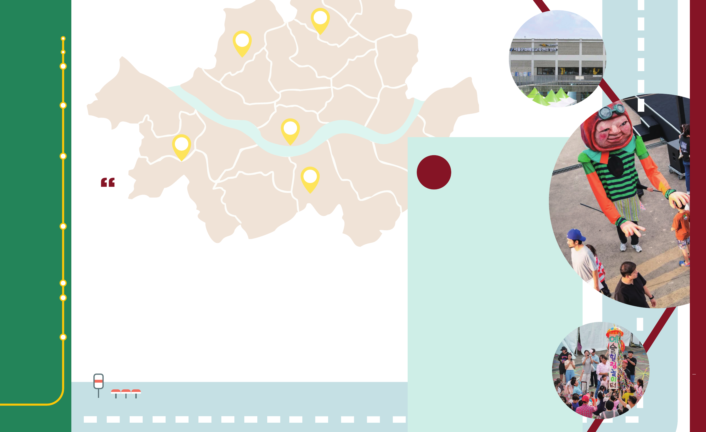
양천센터, 어린이와 가족의 하루에 스며드는 예술놀이터
서울 서남권은 인구와 학생 비중이 가장 높은 지역이다. 학교와 학원이
촘촘히 박혀 있고, 영유아와 어린이를 둔 가족 단위 거주가 두드러진다.
김포공항 인근 소음권과 대규모 아파트 단지, 안양천과 공원이 맞물려
있는 전형적인 생활권 속에서, 예술교육 거점이 가장 먼저 고려해야 할
것은 무엇일까. 양천센터의 출발점은 두 개의 질문이었다.
“아이들이 이 동네에서 처음 만나는 예술은 어떤 얼굴이면 좋을까?”
“그때 아이 옆에는 누가 서 있으면 좋을까?”
서울문화예술교육센터 양천은 처음부터 어린이와 가족, 기초예술과 놀이를 중
심에 두고 설계되었다. 지하 1층과 1층에 스튜디오와 미디어랩, 어린이 서가, 라운
지, 수유실, 야외 수조가 자리 잡고 있고, 유모차가 자연스럽게 드나드는 동선이 짜
여 있다. “교육실”이라기보다 동네의 놀이방과 작업실, 도서관과 카페가 섞인 공간에
가깝다. 이곳에서 펼쳐지는 사업은 크게 세 갈래다.
첫째, 양천권 서울시민예술학교. 어린이·성인·가족을 대상으로 시각·공연예술 기초 프로그
램이 계절마다 열리고, 종이·색·빛·소리 같은 기본 감각에서 출발해 작은 공연과 전시, 가족
참여형 워크숍으로 이어진다. 둘째, 1층 상설 예술체험 공간 ‘모두의 아뜰리에’. 반달곰, 바다거북,
물범 등 멸종위기 동물을 모티브로 팝업카드와 플립토이를 만드는 프로그램 등에서 아이들은 종
이를 자르고 접고 세우면서 손의 감각과 상상력을 키운다. 곁에서 지켜보는 보호자는 완
성품보다 “함께 머문 시간”을 더 또렷이 기억하게 된다.
셋째, 야외형 가족 프로그램 ‘예술힐링놀이터’. 서울의 출생축하 정책과 연계해 영
유아와 어린이, 부모와 조부모가 함께 하루를 보내는 축제형 프로그램이다. 센
터 안팎과 인근 공간에 펼쳐진 워크숍과 공연, 체험 부스를 오가다 보면, 가족
들은 “아이를 데리고 간 행사”가 아니라 “함께 놀다 온 예술 축제”를 경험하
고 돌아온다. 여기에 서남권 주민센터·도서관·마을공간과 연계한 생활예
술·마을사업이 더해진다. 어린이·청소년 동아리, 부모 모임, 마을 축제를
지원하며 양천센터는 “서남권에서 아이를 키울 때 누구나 한 번쯤 들르는 예
술 플랫폼”으로 자리를 굳혀 가고 있다.
우리동네 예술놀이터 어때?
일상 속에서 문화예술 향유하는 ‘우리동네 거점 플랫폼’
5색 플랫폼: 양천, 용산, 강북, 서초, 은평
[기획] 서울의 5대 권역별 문화예술교육센터
5개의 거점들은
“집에서 멀리 가지 않아도 우리 동네에서 예술을 만날 수 있는 플랫폼”
이라는 공통된 목표 아래, 각기 다른 표정을 띠고 있다.
서울 지도를 책상 위에 펼쳐놓고 가만히 들여다보면, 다섯 개의 지점이 또렷하게 떠오른다. 양천, 용산, 강북, 서초, 은평. 서울시
민이라면 누구나 한 번쯤 지나가 봤을 법한 이름이지만, 이제 이 지점들은 단순한 행정구역이 아니다. “우리 동네에서 문화예술
을 어떻게 만날 것인가”를 묻는 출발점이자, 일상 속에서 예술을 이어붙이는 거점으로 서서히 자리를 바꿔가고 있다. 서울시와 서
울문화재단이 조성한 5개 권역별 문화예술교육센터는 언뜻 보면 또 하나의 문화시설처럼 보일지 모른다. 그러나 건물 안으로 몇
걸음만 더 들어가면, 유아부터 노년까지 한 사람의 생애를 관통하는 예술경험이 설계되고, 생활예술과 축제, 시민 네트워크와 국
제교류까지 여러 층위의 사업이 겹쳐지는 장면이 드러난다. 이곳은 단순한 강좌실이 아니라 지역 예술 생태계를 촘촘히 엮는 플
랫폼에 가깝다. 센터들은 서울형 대표 예술교육사업 ‘서울시민예술학교(Arts Seoul Academy)’의 캠퍼스이자, 그 바깥까지 확장된
거점이다. 계절마다 열리는 예술학교, 생활예술 동아리 지원, 권역축제와 상설 프로그램, 연구와 지역협력, 해외 예술가와의 교류
까지 포괄하며, “우리 동네에서 문화예술을 시작해볼까?”라고 마음먹는 시민에게 가장 먼저 떠오르는 접점을 지향한다. 누군가에
게는 퇴근 후 잠시 들르는 라운지이고, 누군가에게는 아이와 함께 주말을 보내는 예술놀이터이며, 또 다른 누군가에게는 오랫동
안 품어온 꿈을 무대 위에서 시험해 보는 “첫 공연장”이 된다. 권역별로 나누었다는 것의 의미는?
예술교육 거점을 만들기 위해 서울을 다시 들여다보니, 익숙한 “강북·강남” 구분만으로는 도시의 결을 설명하기 어려웠다. 어
디는 인구와 학생이 많고, 어디는 직장인과 청년 유동인구가 도심을 가득 채운다. 어떤 지역은 예술 관련 사업체와 예술가 밀도
가 높고, 다른 지역은 산과 하천, 공원이 생활권 안으로 깊숙이 들어와 있다. 이 울퉁불퉁한 도시에서 “모든 지역에 똑같은 예술
교육을 얇고 고르게 나눈다”는 방식은 오래가기 어렵다. 각 지역의 조건과 주민의 삶을 인정하고, 그에 맞는 예술교육 모델을 설
계하는 것이 더 현실적인 전략이다. 그래서 서울은 다섯 개 권역별 문화예술교육센터에 서로 다른 역할을 부여했다. 서울시민예
술학교, 생활예술, 축제, 연구·연수, 국제교류 사업을 공통 축으로 삼되, 장르와 대상, 공간 구성은 권역별 특성에 맞게 다르게
설계했다. 이 거점들은 “집에서 멀리 가지 않아도 우리 동네에서 예술을 만날 수 있는 플랫폼”이라는 공통된 목표 아래, 각기 다
른 표정을 띠고 있다.
Yang
cheon
01
강북
은평
서초
용산
양천
PLATFORM
45
44
December 12, 2025THE MOVE
•
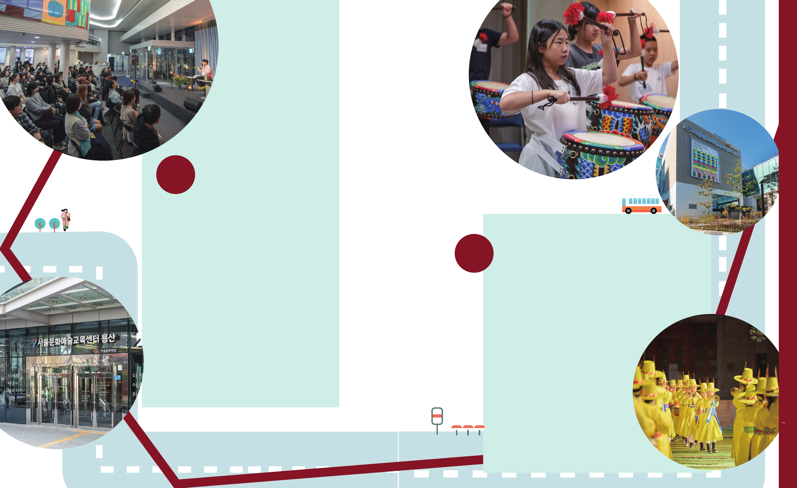
Yongsan
Gangbuk
용산센터, 도심의 속도를 늦추는 다정한 아트라운지
용산은 많은 시민에게 “사는 동네”라기보다 “일하러 오는 곳, 잠깐 들르는 곳”이다. 낮에는
사무실과 공공기관, 상업시설이 밀집해 있고, 저녁에는 한강과 상권을 찾는 청년과 직장
인이 끊임없이 오간다. 문화시설도 적지 않지만, “너무 빨리 스쳐 지나가는 동네”라는 인
상이 강하다. 이 도심에서 용산센터가 맡은 역할은 ‘속도를 늦추는 일’이다. 문학과 음악,
시각예술을 겹쳐 놓고 사람들이 잠시 숨을 고를 수 있는 라운지형 플랫폼을 만드는 것. 센
터 1층 ‘다정한 아트라운지’에 들어서면, 통유리 너머 풍경이 한층 가까워진다. 책장과 포
스터, 작은 무대, 탁자와 의자가 놓여 있고, 한쪽에는 전시용 벽과 엽서를 적어 붙이는 게
시판이 있다. 수강 신청을 하지 않아도, 그냥 문을 열고 들어와도 되는 공간이다. 라운지
에서는 도심의 속도와 예술의 속도를 섞어보는 프로그램들이 이어진다. 에세이스트와 시
인이 참여하는 문학 토크콘서트에서 시민들은 “좋아하는 것을 제대로 좋아하는 마음”, “
도시에서 버텨내는 감정” 같은 주제에 대해 작가와 이야기를 나눈다. 선반 위에는 작가들
이 고른 문장과 책이 큐레이션되어 있고, 그 옆에는 시민들이 적어 놓은 ‘나의 겨울 문장’
이 걸려 있다. 점심시간에 들른 직장인이 남긴 한 줄이, 누군가의 저녁에 다시 읽힌다. 재
즈·클래식 명반을 함께 듣고 책과 이미지를 곁들여 소개하는 음악 프로그램, 라운지를
작업실 삼은 드로잉 워크숍과 엽서 제작, 작은 북클럽까지. 라운지는 서서히 “도심 속 작
은 예술학교”의 모습을 갖춰 간다.
한편 서울시민예술학교 용산 과정에서는 문학·음악·시각예술을 결합한 교육이 학기별
로 운영되고, 직장인의 퇴근시간과 주말에 맞춘 야간·집중 프로그램도 이어진다. 회사·
청년 커뮤니티는 이곳을 거점으로 낭독회와 소규모 콘서트, 드로잉 모임을 열고, 도심권
생활예술 동아리의 발표 무대 역시 점차 늘고 있다. “혼자 살아도, 혼자만 있지 않도록 하
는 예술교육.” 문학과 음악, 그림이라는 매개를 통해 서로의 이야기를 나누는 작은 살롱들
이 이곳에서 자라난다면, 용산이라는 도심은 조금 다른 온도로 기억될 것이다.
강북센터, 전통과 연극으로 엮어내는 생활 공연예술의 마당
동북권의 중심인 강북 일대는 인구와 학생 수, 예술인 밀도가 모두 높은 지역이다. 북한산이 바로 옆에 있
어 자연환경이 생활 깊숙이 들어와 있고, 오래된 주거지와 새 아파트 단지가 섞여 있으며, 지역 공동체에
대한 애착도 강하다. 이곳에서 서울문화예술교육센터 강북이 선택한 길은 “전통예술과 연극·뮤지컬에
특화된 생활 공연예술 플랫폼”이다. 거대한 공연장을 하나 더 짓기보다, 동네 사람들의 이야기와 전통을
담아낼 수 있는 작은 무대들을 여러 개 만드는 쪽을 택했다. 강북센터 건물 안에는 어린이 프로그램실 ‘예
술도담’, 다목적 스튜디오 ‘예술당솔샘’, 움직임창작실, 소리창작실, 강의실과 연습실이 층층이 자리해 있
다. 이 공간들을 무대로 서울시민예술학교 강북 과정에서는 전통예술·연극·뮤지컬 중심의 교육이
이뤄지고, 다양한 연령대의 시민들이 이곳을 드나든다. 이 가운데 특히 눈에 띄는 사업이
‘서울어린이취타대’다. 장구와 북, 피리와 태평소를 배우며 전통 행진음악을 익히
는 어린이 공연단으로, 아이들은 교과서 속 사진으로만 보던 취타를 직접 몸
으로 연주한다. 연습실에서 시작된 소리가 지역축제와 서울시 행사 무대
까지 이어질 때, 전통은 과거의 유물이 아니라 아이들이 지금-여기
에서 사용하는 언어가 된다. 강북센터는 동북권 문화예술교육 네
트워크의 허브이기도 하다. 인접 자치구의 문화예술교육 기관과
학교, 지역아동센터, 복지관이 이곳을 통해 연결되고, 기관 종
사자 워크숍, 예술교육가 네트워크 모임, 공동 프로젝트 기획
회의가 열린다. 동북권 전체를 잇는 가족·청소년·장노년층
프로그램이 여러 공간에서 동시에 펼쳐지는 구조다. 주민 동
아리 연극, 마을 뮤지컬, 전통예술 동아리 발표 등이 강북센
터 무대에서 이어지고,
예술교육주간과 권역축제 기간에는 순회 공연과 워크숍이 기
획된다. 관객으로만 남아 있던 주민들이 어느 순간 무대 위로
올라와 자신의 이야기를 말하기 시작할 때, 강북이라는
지역은 하나의 “생활 공연장”에 가까워진다.
02
03
47
46
December 12, 2025THE MOVE
•
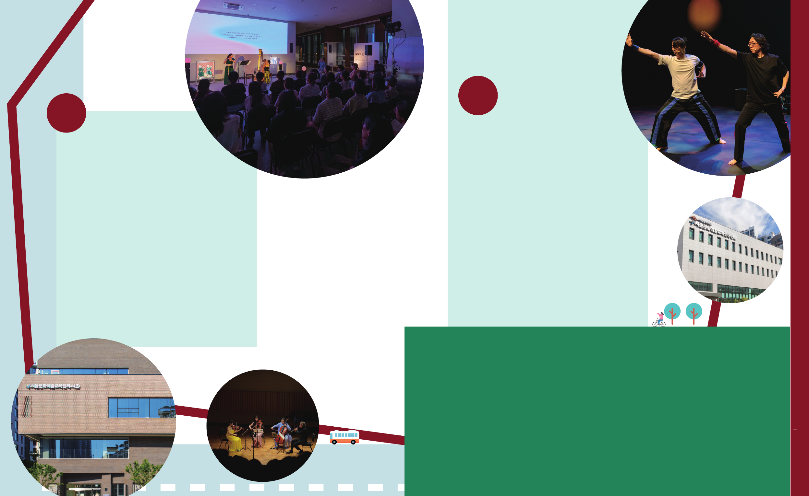
은평센터, 무용으로 열어가는 몸의 언어, 서북권 움직임 플랫폼
서북권은 새 아파트 단지와 학생 비중이 빠르게 증가하고, 인구 대비 예술인의 비중도 높아
지는 지역이다. 방송·미디어 산업단지와 녹지, 산책로가 함께 펼쳐져 있어 “걷기와 움직임이
많은 동네”라는 인상이 강하다. 서울문화예술교육센터 은평은 이 환경을 품어 안고, 국내 최
초 무용 특화 공공극장이자 움직임 기반 예술교육 플랫폼으로 문을 열 준비를 하고 있다. 블
랙박스 형식의 공연장과 두 개의 댄스 스튜디오, 분장실과 카페, 티켓부스를 갖춘 이 공간은
“무용을 보는 일”과 “무용을 하는 일”이 한 건물 안에서 자연스럽게 이어지도록 설계되었다.
은평센터가 붙잡은 키워드는 “움직임”과 “처음”이다. 한 번도 춤을 춰본 적 없는 사람도 이곳
에서 첫 발을 떼볼 수 있도록 하는 것. 서울시민예술학교 은평 과정에서는 어린이·청소년·
청년·성인을 대상으로 현대무용·발레·전통무용 등 다양한 장르의 프로그램이 운영된다.
신체 인식과 균형, 호흡, 즉흥 움직임을 배우면서 사람들은 자신의 몸이 생각보다 많은 이야
기를 품고 있다는 사실을 천천히 깨닫게 된다.
본격 개관에 앞서 은평센터는 원데이 무용 클래스를 통해 시민과의 접점을 넓혀가고 있다. 메
디컬 바레 프로그램에서는 발레 기본 동작과 재활 운동 개념을 결합해 근막 이완과 자세 교
정을 돕고, 클래식 기초 발레 프로그램에서는 플리에, 아라베스크 같은 기본기를 익히며 발
레 음악에 맞춰 몸의 라인과 호흡을 느껴본다. 안내문 첫 줄의 “춤을 춰본 적 없어도 괜찮습니
다”라는 문장은 이 센터가 바라보는 방향을 분명하게 보여준다. 앞으로 은평센터에는 어린이
와 가족을 위한 참여형 공연·워크숍 ‘처음 만나는 무용’, 청년·성인을 위한 커뮤니티 댄스,
서북권 무용벨트와 연계한 신작 쇼케이스 등이 자리 잡을 예정이다. 서북권의 무용가·안무
가들은 이곳을 작업과 발표, 교육과 교류를 동시에 수행하는 거점으로 삼고, 해외 무용단체와
의 워크숍·공동 프로젝트가 더해지면, 은평센터는 “로컬 커뮤니티와 국제 네트워크가 만나
는 무용 플랫폼”으로 나아갈 것이다.
다섯 개의 플랫폼, 하나의 도시 전략
다섯 개의 문화예술교육센터는 서로 다른 색을 띠고 있지만, 그 위에 그려진 도시 전략은 하나로 모인다. 첫째, 시민이 예술을 만나는 접점을 최대한 가까운 곳으로
끌어오는 것. 둘째, 권역과 장르를 특화해 “서울형 예술교육 모델”을 실험하고 축적하는 것. 셋째, 예술교육가·예술강사·예술가들이 새로운 교육 방식을 시험해볼
수 있는 현장을 만드는 것. 넷째, 자치구와 학교, 복지기관, 시민단체, 생활예술동아리를 거점으로 엮어 권역별 예술생태계를 구축하는 것. 다섯째, 장기적으로 이 거
점들을 국제교류와 연결해 서울의예술교육 수준과 도시 브랜드를 함께 끌어올리는 것. 서울시민예술학교는 이 퍼즐에서 중요한 한 칸이지만, 그 옆에는 생활예술 동
아리와 권역축제, 연구·연수, 국제워크숍과 쇼케이스가 나란히 놓여 있다. “집에서 가장 가까운 예술플랫폼”이라는 약속 지금 이 글을 읽는 동안에도, 양천센터 작
업실에서는 누군가의 작은 손이 팝업북을 세우고 있을지 모른다. 용산센터 라운지에서는 누군가가 좋아하는 문장을 엽서에 옮겨 적고 있을 것이다. 강북센터 스튜
디오에서는 북소리와 대사가 섞여 나올 것이고, 서초센터 공연장에서는 마스터클래스 후반부 질문이 이어지고 있을지도 모른다. 은평센터 댄스스튜디오에서는 “춤
을 춰본 적 없어도 괜찮아요”라는 말과 함께 어느 시민이 조심스레 첫 발을 떼고 있을 것이다.
서울의 5대 권역별 문화예술교육센터는 다양한 예술교육사업을 통해, 이름 그대로 “우리 동네에서 가까운 예술 플랫폼”이 되기 위해 천천히, 그러나 분명하게 변해
가는 중이다. 언젠가서울 시민이라면 누구나, 자신의 삶을 되돌아보며 이렇게 말할 수 있기를 바란다.> “내가 예술을 처음, 혹은 다시 만난 곳은 집에서 멀지 않은,
우리 동네였다.” 그 기억을 열어젖히는 첫걸음은 생각보다 단순하다. 집에서 가장 가까운 센터의 문을 한 번 열어보는 일. 그 작은 움직임이 이 도시 전체의 예술 온
도를 조금씩 끌어올리고 있을지도 모른다.
글_이규승(서울문화재단 예술교육실장) 사진제공_서울문화재단
서초센터, 음악도시의 심장에 놓인 시민 음악 플랫폼
서초·강남 일대는 예술의전당을 비롯한 공연장과 교향악단·오페라
단, 예술고·예술대학, 수많은 음악학원과 연습실이 얽혀 있는 한국 대표 음
악지구다. 이미 민간 인프라가 풍부한 이 지역에 또 하나의 공공 예술교육센터를
세운 이유를, 서울문화예술교육센터 서초는 이렇게 설명한다. “전문가와 시민이 함께
쓰는 공공 음악 플랫폼.” 서초센터는 241석 규모의 공연장(서울체임버홀)과 뮤직스튜디오,
마스터클래스실, 앙상블실, 연습실, 스마트라운지를 갖추고 있다. 전문 연주자와 시민, 교
육자와 학생이 한 건물 안에서 각자의 방식으로 음악을 만나는 구조다.
서울시민예술학교 서초 과정에서는 어린이와 성인, 중장년층을 대상으로 클래식 중심 음
악교육이 이뤄진다. 악기 기초, 앙상블, 음악사와 음악이론, 작곡·즉흥 워크숍 등을 통해
사람들은 “듣는 사람”에서 “연주하는 사람”, 더 나아가 “기획하고 나누는 사람”으로 옮겨간
다. 겨울 시즌에 시작되는 ‘The Opus 2025’ 시리즈는 서초센터의 지향을 집약해 보여준다.
공연, 렉처콘서트, 살롱, 강연, 마스터클래스, 워크숍, 마티네콘서트 등 다양한 형식을 통해
관객은 마스터클래스 수강생, 살롱의 대화자, 워크숍의 참여자로 무대와 객석 사이를
자유롭게 오간다. 1층 라운지에 조성되는 ‘음악의 집’은 클래식의 문턱을 낮춘다. 명반과 플
레이리스트를 들을 수 있는 리스닝 룸, 시민이 직접 추천한 음악이 쌓이는 ‘아워 뮤직(Our
Music)’, 음악과 글쓰기를 결합한 에세이 전시, 바닥에 누워 음악을 듣는 리스닝 퍼포먼스,
향과 음악을 결합한 감각 프로그램까지. 음악을 “엄숙한 장르”가 아닌 “몸과 감각으로 즐
기는 예술”로 경험하게 하는 장치들이다. 아마추어 오케스트라와 합창단, 실내악 동아리
등 생활예술 주체들은 서초센터를 연습과 발표, 교류의 거점으로 삼는다. 이 활동은 서울
생활예술페스티벌과 서울어텀페스타 같은 도시 단위 축제로 자연스럽게 이어지고, 해외
연주자·교육자, 예술기관과의 협력 프로그램이 더해지면, 서초센터는 “전문 음악과 시민
향유, 국제교류가 교차하는 공공 플랫폼”으로 자리매김하게 될 것이다.
04
05
Seocho
Eun
pyeong
49
48
December 12, 2025THE MOVE
•
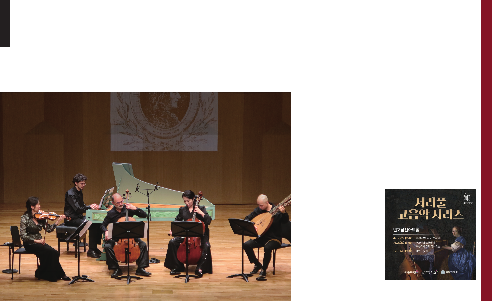
고음악은 오래된 음악이 아니라, 지금 이 순간 다시
숨 쉬는 음악이다. 악보에 기록된 음표 너머의 시대
적 감각, 연주 관습, 공간의 울림까지 함께 복원해내
는 고음악은 과거를 재현하는 데 머물지 않고 오늘
의 관객에게 가장 인간적인 감정을 건네는 장르다.
장식음 하나, 음색의 결 하나에 담긴 감정의 밀도는
오히려 현대 음악보다 더 직접적으로 사랑과 슬픔,
기쁨과 평화를 전한다. 그 중심에 있는 바로크 음악
은 ‘극적 감정의 시대’를 살아간 음악이다. 신과 인간,
삶과 죽음, 빛과 어둠 사이의 긴장을 음악으로 형상
화한 바로크는 단순한 형식미를 넘어 음악을 하나의
드라마로 확장시켰다. 카운터테너의 호흡, 바로크 현
악기의 거친 울림, 하프시코드의 명료한 리듬은 인
간의 내면을 정교하게 드러내며, 작은 실내 공간에
서도 강렬한 서사를 만들어낸다. 성탄을 맞아 연주되
는 바로크 음악은 그래서 더욱 특별하다. 이는 단지
탄생을 축하하는 음악이 아니라, 탄생 이후의 삶과
그 끝, 그리고 인간이 지향해야 할 사랑과 평화의 가
치를 함께 사유하게 한다. 퍼셀과 헨델, 토렐리와 포
르폴라의 음악 속에는 신성함과 인간성이 공존하며,
경건함 속에서도 깊은 온기가 흐른다. 고음악이 오늘
날 다시 주목받는 이유는 바로 이 지점—과거의 언어
로 현재의 삶을 위로하고 질문을 던지는 힘에 있다.
<서리풀 고음악 시리즈>의 무대는 바로크 음악의 본
질을 가장 섬세하게 드러내는 공간이다. 반포심산아
트홀의 음향 속에서 펼쳐지는 고음악은 대극장의 웅
장함 대신, 귀 기울여 듣는 집중의 미학을 제안한다.
바로크 음악은 그렇게 우리에게 속삭인다. 아름다운
세상은 멀리 있지 않으며, 지금 이 순간 음악을 통해
충분히 경험될 수 있다고.
서초문화재단의 2025년 '서리풀 고음악 시리즈'가 3
월 12일 <에스테르하치 궁전의밤>으로 문을 연 이후
12월 5일 <바로크 노엘>로 피날레 무대를 장식한다.
<바로크 노엘>은 단순한 성탄 음악을 넘어 ‘탄생과
죽음, 사랑과 평화’라는 메시지를 담은 프로그램으
로, 퍼셀, 헨델, 토렐리, 포르포라 등의 작품을 연주한
다. 연주에는 장정권(카운터테너), 신용천(바로크 오
보에), 김은식(음악감독, 바로크 바이올린), 황수빈(바
로크 바이올린), 안지원(바로크 비올라), 강지연(비올
라 다 감바), 박연희(콘트라베이스), 이승민(하프시코
드)이 참여한다.
연중 수준 높은 기획공연으로 관객들을 만나온 서초문화재단의 ‘서리풀 시
리즈’는 재단의 역량을 입증하는 대표 프로그램이다. 2025년 ‘고음악 시리
즈’를 비롯해 ‘작곡가탐구 시리즈’, ‘전곡연주 시리즈’ 등 8개의 시리즈와 34
회의 공연으로 관객들을 만났다.그 중에서도 ‘서리풀 고음악 시리즈’는 반포
심산아트홀의 음향적 특성을 기반으로 고음악의 정수를 선보이는 대표 시
리즈다. 지난해 시대음악의 거장 크리스토프 쿠앵의 첫 내한 공연으로 첫 포
문을 열었던 ‘서리풀 고음악 시리즈’가 올해는 세계 무대에서 급부상 중인
포르테피아노 연주자 올가 파쉬첸코, 트라베르소 연주자 얀 드 비네, 고음악
시리즈의 음악감독이자 바로크 바이올린 연주자 김은식, 바로크 첼로 연주
자 강효정이 그 시작을 함께 하며 고전 시대까지 한 층 확대된 레퍼토리와
연주로 특별한 감흥을 전했다. 3월에 이어 10월에는 <쿠프랭과 르클레어: 프
랑스의 천재 작곡가들>(10.25) 공연이 열렸다. 바로크 바이올린의 대가 료 테
라카도가 프랑스 실내악을 중심으로 렉처 콘서트를 선보이며, 장 마리 르클
레어와 프랑수아 쿠프랭의 작품을 통해 프랑스 바로크 음악의 섬세한 미학
을 조명했다. 김은식(음악감독, 바로크 바이올린), 강효정(비올라 다 감바), 아
렌트 흐로스펠트(쳄발로)가 함께 무대에 올라 연주했다.
12월 올해의 마지막 프로그램 <바로크 노엘>에서는 예수의 탄생을 축하하
는 데서 한발 나아가 그의 삶이 말하고자 하는 ‘탄생과 죽음, 사랑과 평화의
의미를 전달하고자 한다. 우리의 삶을 아름답게 바라보고 우리가 꿈꾸는 아
름다운 세상이 멀리 있지 않고 바로 이 자리에 있다는 것을 함께 느끼는 메
시지를 담아 카운터테너 장정권과 ’울림과 퍼짐 앙상블(리더 김은식)‘이 퍼
셀, 헨델, 토렐리, 포르폴라 등의 음악을 한 편의 드라마와 같은 극적인 구
성으로 들려준다.
12.5(금) 19:30 반포심산아트홀
서초문화재단, ‘서리풀 고음악 시리즈’
12월, <바로크 노엘>과 함께
사랑과 평화의 의미 전하다
SEORIPUL
EARLY
MUSIC
SERIES
feature
51
50
December 12, 2025THE MOVE
•
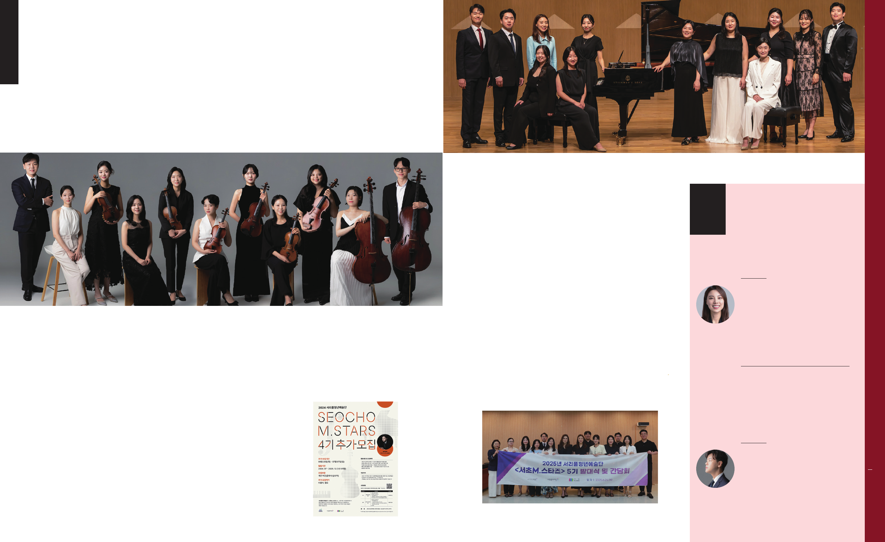
서초구 x 서초문화재단 <서초M. 스타즈>
차세대 클래식 유망주 육성 프로젝트!
#재능있는 청년 예술인 발굴 프로젝트
서리풀청년예술단 <서초M.스타즈> 4기
#서리풀청년예술단 5기 출범
차세대 클래식 유망주 육성 프로젝트
<서초M.스타즈> 본격 추진!
4
th
5
th
‘서리풀청년예술단’ 제5기는 단원 11명을 최종 선발하고, 발대식을 기점으로 본
격적인 활동을 시작했다. ‘서리풀청년예술단’은 서초구가 2019년부터 추진해 온
청년예술인 육성 프로젝트로, 유망한 청년예술인을 발굴·지원하여 자립 가능한
전문 예술가로 성장할 수 있도록 체계적으로 돕는 프로그램이다. 지난 2024년,
클래식 실내악 장르를 집중 조명한 4기에 이어, 제5기 역시 예술가곡 중심의 클
래식 분야에서 활동할 성악 전공 7인, 피아노 전공 4인 등 총 11명의 청년예술인
이 선발되었으며, 이들은 2025년 7월부터 2026년 12월까지 1년 6개월간 서초구
전역에서 다양한 공연과 창작활동을 펼친다. 음악감독으로는 경희대학교 음악대
학 황수미 교수(소프라노)가 참여해, 실전 중심의 전문 코칭과 멘토링을 통해 단
원들의 예술성과 무대 역량을 한층 강화한다. 단원들에게는 활동기간 동안 소정
의 활동비를 비롯해 성악 및 반주 전문 교육, 기획공연 참여 기회 등 다양한 지원
이 제공된다. 10월과 12월에 정식 기획공연을 통해 서초구민과 소통하는 무대를
선보인다. 서초문화재단 강은경 대표는 “<서초M.스타즈>는 청년예술인의 잠재력
을 발굴하고, 무대 경험과 전문성, 자립 역량을 균형 있게 육성하는 서초구만의
고유한 모델”이라며, “앞으로도 지역문화예술 인재 양성을 통해 지속 가능한 예
술 생태계를 조성해 나갈 것”이라고 밝혔다.
서울 서초구(구청장 전성수)와 서초문화재단(대표이사 강은경)은 청년 예술인의 지속적인 음악 활동을 지원하기 위한 사
업, ‘서리풀청년예술단 <서초M.스타즈>’ 4기, 5기 발표 연주회를 12월에 개최한다. <서초M.스타즈>는 서초구와 서초문화재
단이 청년 예술인의 지속적인 음악 활동을 위해 2년가 체계적이고 전문적인 맞춤형 프로듀싱을 지원하는 서초구만의 청
년 예술인 지원 사업이다. 4기 활동에 참여하는 연주자는 2024년 5월 공모(5.13-7.7)를 통해 참여자를 구성했다. 매년 다양
한 장르에서 활동하는 청년예술인을 발굴하고 지원하여 자립의 기회를 제공하고자 하는 서리풀청년예술단 <서초M.스타
즈> 사업은, 올해 클래식(실내악) 부문에서 활동하는 4기 예술인들을 심사를 거쳐 최종 선정했다. 선정된 예술인들은 2025
년까지 기획공연과 교육 프로그램 등 다양한 활동에 참여하고 매월 활동비 및 연습공간을 지원받으며 추후 자립할 수 있
는 기회가 부여된다. 특히 음악감독으로 피아니스트 김태형(경희대학교 교수)이 선임되어 전문 튜터와 함께 4기의 개인
별 기량 향상과 실내악에 대한 지식의 깊이를 더해줄 수 있는 집중 코칭 위크 및 렉처 콘서트 등 다양한 프로그램을 제
공한다. 4기 모집을 시작으로 서초구와 서초문화재단은 서리풀청년예술단 <서초M.스타즈> 사업을 통해 재능있는 청년예
술인을 발굴하고 서초구의 풍부한 클래식 장르의 인프라를 적극 활용해 또 다른 월드클래스 아티스트 탄생을 목표로 사
업을 추진할 예정이다.
서리풀청년
예술단
<서초M.스타즈> 5기 예술가곡 시리즈 Ⅱ
<겨울연가>
음악사에서 가장 유명한 삼각관계라고도 할
수 있는 로베르토 슈만, 클라라 슈만 그리고 요
하네스 브람스의 사랑의 메시지들로 준비했다.
이 세 작곡가의 다양한 사랑 표현과 함께 <서
초M.스타즈> 5기가 전하는 겨울의 따뜻한 온
기를 느낄 수 있다.
음악감독 황수미
소프라노 송강이, 이수진, 이해연
테너 고태영
메조소프라노 이진영
바리톤 김우진
카운터테너 지필두
피아노 김지연, 장지원, 최현아, 한은지
12.12 심산아트홀 19:30
<서초M.스타즈>] 4기 실내악 시리즈 Ⅳ
<Chanson perpétuelle>
2년간 이어온 서초M.스타즈 4기의 마지막 연
주로 축제 같은 무대를 준비했다. 5기 단원 한
명과 함께해 서리풀청년예술단의 아름다운 연
결을 전하고자 한다.
음악감독 김태형
바이올린 김연경, 노예리, 장은정,
Nilufar Mukhiddinova
첼로 김동연, 김혜인
피아노 김예은, 노예나
12.19(금) 심산아트홀 19:30
feature
53
52
December 12, 2025THE MOVE
•
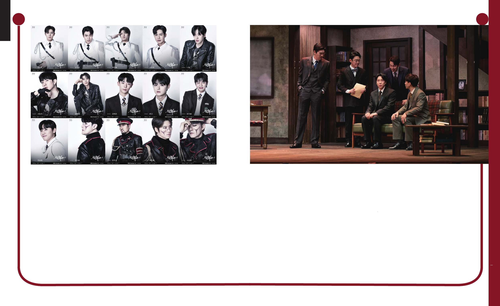
1 2
musical
뮤지컬 <은밀하게 위대하게> 10주년
압도적 액션과 군무
팩션 뮤지컬 <팬레터> 10주년
밀도 높은 서사와 음악의 힘
모던 화보 연상되듯…뮤지컬 ‘은밀하게 위대하게’, 캐릭터 포스터 공개! 베일 벗은 비주얼
뮤지컬 ‘은밀하게 위대하게:THE LAST’, 오종혁·김동준·니엘 등 고품격 프로필 완성!
사진작가 목나정X뮤지컬 ‘은밀하게 위대하게’, 압도적 분위기 프로필 사진 공개
창작 뮤지컬 ‘은밀하게 위대하게:THE LAST’가 10주년 공연을 앞두고 고품격 비주얼을 드러냈다. 프로필 사진은 대한민국 최고의 포
토그래퍼 목나정 작가와의 협업으로 독보적인 분위기를 자아낸다. 배우들은 캐릭터에 깊이 이입한 모습으로 시선을 사로잡았다. 원류
환 역 김동준(제국의아이들), 김찬호, 백인태, 오종혁은 순백색의 제복과 함께 결연한 표정으로 카리스마를 드러냈으며, 리해랑 역 니
엘(틴탑), 서동진, 유태율은 검은 가죽 재킷과 함께 자유롭고 쾌활한 모습으로 색다른 분위기를 전했다. 리해진 역 강하온, 민규(DKZ),
이지함(A.C.E), 조용휘는 교복 차림으로 소년미를 더했으며, 김태원 역 김수용, 김주호, 백인태, 서승원은 실감나는 상처 분장과 함께
매서운 눈빛으로 보는 이들을 압도했다. 서수혁 역 성재, 임강성, 한상훈은 수트 차림으로 권총과 함께 포즈를 취해 긴박함을 더했으
며, 순임 역 박채원, 전국향, 최은경은 온화한 미소로 따뜻한 분위기를 더했다.
뮤지컬 ‘은밀하게 위대하게:THE LAST’는 1,000만 독자가 선택한 HUN 작가의 동명 웹툰을 원작으로 추정화 연출과 허수현 작곡가, 김
병진 안무가가 10년의 역사를 함께 써왔으며, 이번 시즌 서정주 무술 감독이 새로이 합류해 아크로바틱 무술, 비보잉, 군무 등 화려한
액션과 퍼포면스를 통해 압도적인 액션 장면을 완성할 전망이다. 2016년 초연 이후 10년 동안 전국 40개 지역에서 11만 관객을 사로
잡으며 10주년 기념 공연을 맞아 1,000석 규모의 대극장 스케일로 규모를 확장했다.
2026.01.30~ 2026.04.26 NOL 씨어터 대학로 우리카드홀
대한민국 창작 뮤지컬의 자부심, 뮤지컬 ‘팬레터’가 10주년 기념 공연으로 다시 한번 관객의 마음을 사로잡았다. 지난 5일 서울 예술
의전당 CJ토월극장에서 막을 올렸다. 10년의 역사가 느껴지는 밀도 높은 서사와 배우들의 열연으로 관객들에게 큰 울림을 전했다.
첫 공연부터 관객들의 찬사가 이어지며 다시 시작된 ‘팬레터 신드롬’을 예고했다. 1930년대 일제강점기를 배경으로, 김유정과 이상
등 당대 문인들의 모임 ‘구인회’의 일화에서 모티브를 얻어 창작된 팩션 뮤지컬이다. 천재 소설가 김해진과 그를 동경하는 작가 지
망생 정세훈, 그리고 김해진의 뮤즈이자 비밀에 싸인 작가 히카루의 이야기를 통해 문인들의 예술혼과 사랑을 매혹적으로 그린다.
지난 2016년 국내 초연된 뮤지컬 ‘팬레터’는 2017년 재연, 2019년 삼연, 2021년 사연을 거쳐 올해 다섯 번째 시즌이자 10주년 기념 공
연으로 돌아왔다. 10년의 세월로 빚어낸 탄탄하고 깊이 있는 서사는 개막과 동시에 관객에게 남다른 몰입감을 선사했다. 특히 조명과
그림자로 빚어낸 모던한 미장센, 인물의 심리와 역학 관계를 섬세하게 표현한 안무가 작품의 서사를 시각적으로 확장하며 보는 재미
를 더해 10년의 연륜을 느끼게 했다. 서사를 이끄는 음악의 힘 또한 여전했다. ‘별이 반짝이는 시간’, ‘해진의 편지’, ‘내가 죽었을 때’ 등
인물의 내면을 파고드는 주옥 같은 넘버들이 관객의 감성을 건드렸다. 현악기와 피아노가 어우러진 라이브 오케스트라의 선율은 서
정과 격정을 오가는 드라마틱한 서사를 생생하게 전달하며 깊은 여운을 남겼다. 대만, 중국, 일본 투어와 라이선스 공연을 선보였고,
2024년 영국 런던에서 쇼케이스를 선보이며 영미권 진출에도 박차를 가하고 있다.
12.5(금)-2026.2.22(일) 예술의전당 CJ토월극장
55
December 12, 2025THE MOVE
•
54
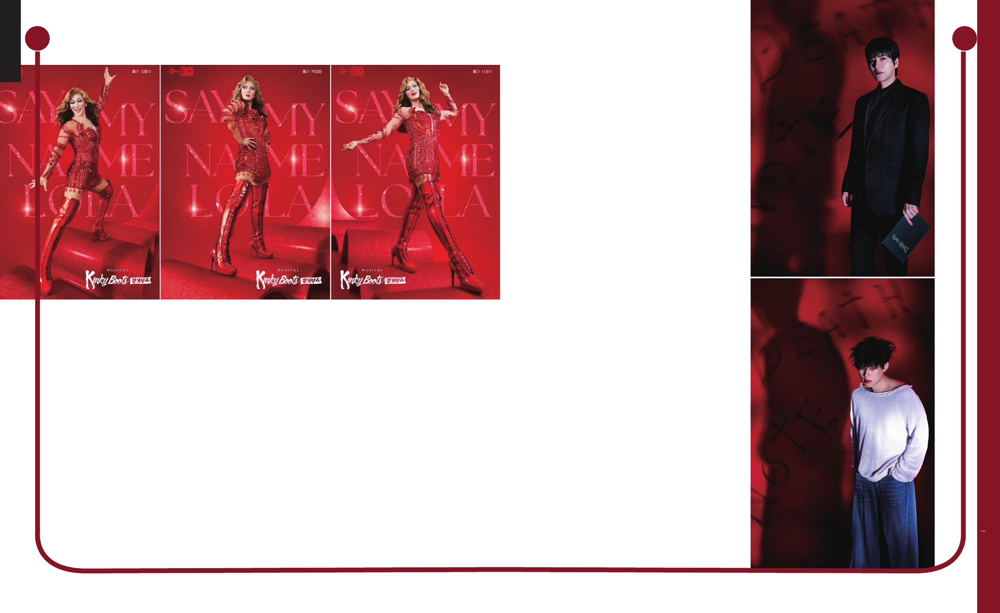
Musical
3 4
화려한 비주얼과 당당한 에너지로 무장한 ‘롤라’가 돌아왔다. 편견과 억압에 당당히 맞서는 아름답고 유쾌한 ‘롤라’ 역으로 무대에
오르는 강홍석, 백형훈, 서경수가 뿜어내는 넘치는 자신감이 이목을 단번에 집중시킨다. 세 배우는 각자만의 당당한 태도와 개성
으로 ‘세이 마이 네임 롤라(Say My Name Lola)’라는 문구와 함께 강렬한 존재감을 발산한다. CJ ENM의 대표 글로벌 공동 프로
듀싱 뮤지컬 <킹키부츠>는 영국 노샘프턴의 한 구두 공장이 경영 위기에 직면하던 시기, 특별한 부츠를 제작해 유일하게 살아남
은 구두공장의 실제 성공 스토리를 각색했다. 개막을 앞두고 "연말 필수 플랜 1순위는 단연 '킹키부츠' 관람이다", "'킹키부츠'를 보
기 위해 올 초부터 에너지를 아껴뒀다. 개막과 동시에 전부 쏟아붓겠다" 등 관객들의 유쾌하고 재치 있는 기대평이 쏟아지며 작
품을 향한 관객들의 뜨거운 관심을 실감케 한다. <킹키부츠>는 고양아람누리 아람극장 공연을 시작으로 성남, 여수, 전주, 용인,
서울까지 6개 도시 투어로 관객을 만난다. 전국 투어의 피날레인 서울 공연은 12월 17일부터 2026년 3월 29일까지 샤롯데씨어터
에서 공연한다. 12.17(수)-2026.3.29(일) 샤롯데씨어터 . 12.17(수)-2026.3.29(일) 샤롯데씨어터
뮤지컬 <킹키부츠 Kinky Boots >
‘Everybody Say Yeah’
킹키한 짜릿한 활력과 에너지
뮤지컬 <데스노트> 한국 프로덕션(프로듀서 신춘수, 제작
오디컴퍼니㈜) 새로운 변화를 맞이한다. ‘NEW 라이토’ 규
현과 ‘엘(L)’ 역의 레전드 캐스트 김성철이 전격 합류한 것.
이들의 합류로 본 무대는 한층 더 커진 스케일과 강렬한
에너지로 가득 채워질 전망이다. 우연히 ‘데스노트’를 주
워 범죄자를 처단하며 정의를 실현하려는 천재적인 두뇌
의 소유자 ‘야가미 라이토’ 역에 규현이 새롭게 이름을 올
렸다. 뮤지컬 <웃는 남자>, <프랑켄슈타인>, <팬텀>, <베르
테르> 등에서 사랑에 흔들리는 감정부터 비극적인 운명
을 지닌 인물의 내면까지 다채롭게 소화하며 탁월한 가
창력과 안정적인 연기, 무대 위 카리스마를 겸비한 배우
로 각광받았다. 이전 시즌, '데스노트 신드롬'을 주도하며
무대를 장악했던 김성철은 유니크한 비주얼과 캐릭터의
구부정한 시그니처 자세 등 인물의 습관까지 세밀하게 담
아낸 남다른 표현력과 에너지 넘치는 가창력으로 눈과 귀
를 짜릿하게 만들며 관객들의 열광적인 호응을 이끌었다.
동명의 일본 만화를 원작으로 한 뮤지컬 <데스노트>는 사
신의 노트인 ‘데스노트’를 손에 넣으며 사회의 악을 처단
해 정의를 실현하려는 천재 고교생 ‘라이토’와 그를 추적
하는 명탐정 ‘엘(L)’의 숨막히는 두뇌싸움을 그리는 <데스
노트>는 냉철한 이성과 뜨거운 신념이 충돌하며 강렬하
고 압도적인 무대를 선사한다.
10.21(화)-2026.2.10(일) 디뮤브 링크아트센터
뮤지컬 <데스노트>
‘NEW 라이토’ 규현 x
레전드 ‘엘(L)’ 김성철
musical
57
56
December 12, 2025THE MOVE
•
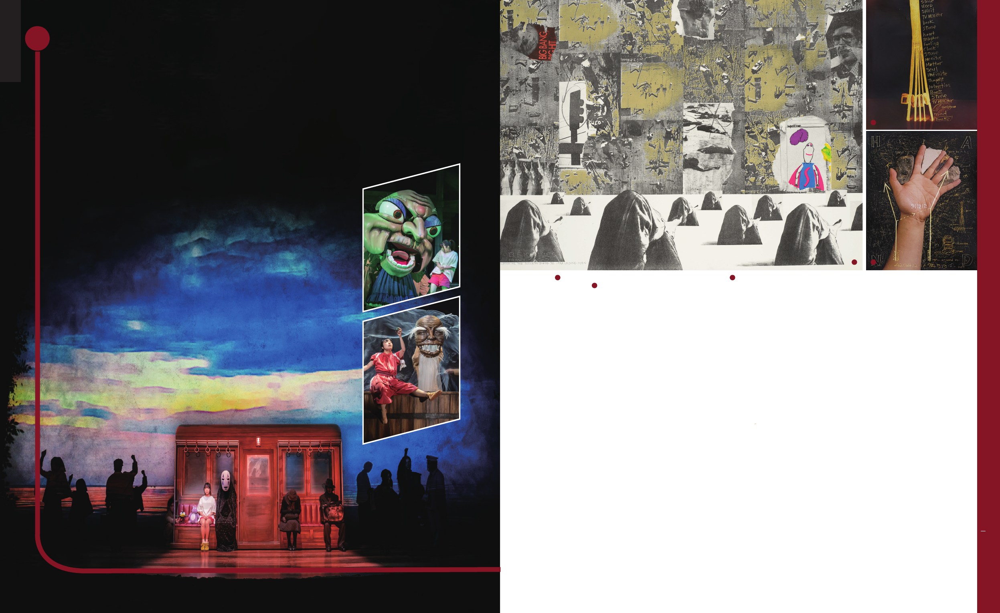
01
한운성, 〈게시판 바라보기〉, 1989 , 사진석판화, 57×77cm, A.P., 서울시립미술관 소장
02
박현기, 〈무제(포토미디어)〉, 연도 미상, 사진에 스크래치, 각 50.5×
40.5cm, 유족 소장
03
박현기, 〈무제(포토미디어)〉, 1992, 사진에 스크래치, 각 50.5×40.5cm, 유족 소장
서울시립미술관, 한운성컬렉션 기증기획전
<그림과 현실 Between Image & Reality>
기술과 시각 경험의 지평을 확장하다
한운성 컬렉션 기증기획전 《그림과 현실》은 2023년 한운성 작가가 서울시립미술관(SeMA)에 기증한 195점의 판화 작품
과 미술관 소장작품을 중심으로, 작가의 평생에 걸친 예술적 탐구와 실험을 조망하는 전시다. 회화, 판화, 디지털 드로잉
등의 매체로 구성되며, 서울시립미술관 소장작품 51점(작가 기증)과 작가 소장작품 71점(디지털 드로잉 65점 포함) 등 총
122점을 선보인다. 전시는 ‘초기작업’, ‘문-받침목-매듭’, ‘건축구조물과 공간’, ‘신호등’, ‘과일, 꽃, 디지털 드로잉’ 총 5개
섹션으로 구성된다. 한운성 작가는 회화, 판화, 디지털 드로잉을 넘나들며 시대의 기술과 시각 경험의 지평을 넓혀온 작
업을 펼쳐왔으며, 이미지를 통해 현실을 사유하는 실험적 탐구를 계속 이어왔다. 이를 통해 이미지 중심의 시대를 살아
가는 오늘 우리가 다시 생각해볼 근본적 성찰의 장을 마련한다. 한운성 작가는 서울대학교 회화과를 졸업하고, 1973년 한
국인 최초로 미술 분야 풀브라이트 장학생에 선발되어 미국 템플대학교 타일러 미술대학 대학원 판화과에서 수학했다.
이 시기 다양한 판화기법을 습득하며 매체적 실험을 이어갔으며, 이러한 양상은 <변신>(1970-1974) 시리즈와 기하학적
추상작업에서 확인된다. 동시에 그는 미국 현대미술의 흐름과 시각문화 전반에 영향을 받으며 자신만의 조형 언어를 구
축해 나간다. <신호등>(1974-1997) 시리즈는 도시와 문명에 내재한 불안과 인간 존재의 무력함을 상징적으로 드러낸다.
1990년대 이후의 <과일채집> 시리즈는 사라져가는 생명의 원형을 기록하려는 의지를 담고, 은퇴 이후에는 <꽃> 시리즈
를 통해 생명의 아름다움과 소멸의 순간을 담아낸다. 초기 실험의 연장선에서 2021년부터는 아이패드를 이용한 드로잉
을 통해 판화의 복제성을 디지털 기술로 확장하고, 손끝의 감각과 회화적 깊이를 이어나가고 있다.
12.9(화)-2026.3.22.(일) 서울시립미술관 서소문본관
01
02
03
5
섬세함과 풍부한 감성의 판타지
<센과 치히로의 행방불명>(토호) 오리지널 투어
일본 애니메이션 역사상 레전드 마스터피스로 손꼽히는 스튜디오 지브리의 <센과 치히로의 행방불명>을
무대화한 <센과 치히로의 행방불명>(제작: 토호, 주최: CJ ENM) 오리지널 투어가 26년 1월 7일(수) 예술의
전당 오페라극장에서의 개막한다. 지브리 특유의 감성과 서사를 담아낸 캐릭터 포스터에는 신비로운 여
정에 대한 기대감을 높인다. 원작의 스토리 그대로 우연히 금지된 ‘신들의 세계’로 들어간 치히로에게 펼
쳐지는 초유의 미션과 환상적인 모험을 그린다. 연출가 존 케어드(John Caird)와 히사이시 조(Joe Hisaishi)
의 음악, 판타지 빌더 퍼펫 디자이너 겸 퍼펫디렉터 토비 올리에(Toby Olié)가 의기투합해 원작이 지닌
섬세한 아름다움과 풍부한 감성을 무대 위에서 입체적이고 생생하게 재현한다. 마법 같은 경혐으로 세계
관객들을 매료시키고 있다.
캐릭터 포스터에는 판타지와 현실의 경계를 넘나드는 매혹적인 세계관을 담아내며 ‘치히로’의 시작과 성
장, 순수함과 용기 그리고 현실과 환상이 유기적으로 연결된다. 배우 카미시라이시 모네는 하늘과 물결
위에 홀로선 ‘치히로’의 모습으로 ‘치히로’의 성장 서사를 암시한다. 카와에이 리나는 붉은 등불로 가득한
‘신들의 세계’의 풍경을 배경으로 낯선 세계에서 점차 자신만의 길을 찾아가는 여정을 표현하여 강인한
생명력을 발산한다. 특히 붉은색이 상징하는 위험, 유혹, 변화의 감정이 전반에 깔리며 작품이 지닌 모험
과 감동의 결을 선명하게 부각시킨다. 2026.1.7(수)-3.22(일) 예술의전당 오페라극장
원작의 상상력 + 연출 + 히사이시 조의 음악 + 퍼펫
musical
Art
59
December 12, 2025THE MOVE
•
58

Art
인상주의는 전 세계적으로 가장
사랑받는 미술 사조 중 하나다.
밝고 다채로운 색감, 순간의 빛을
포착한 표현, 개성적인 화풍 덕분에
세계적인 인기를 얻고 있다. 그러나
인상주의는 단순히 ‘아름다운 그림’의
시대가 아니다. 19세기 후반 프랑스의
급격한 사회 변화 속에서 예술가들은
세상을 바라보는 방식을 근본적으로
바꾸었고, 그 변화의 중심에
인상주의가 있었다.
국립중앙박물관의 미국
메트로폴리탄박물관 소장품 총
81점을 국내 최초로 공개하는 특별전
<인상주의에서 초기 모더니즘까지,
빛을 수집한 사람들>은 ‘로버트 리먼
컬렉션’의 회화와 드로잉 65점을
중심으로, 유럽회화, 근현대미술, 미국
미술, 드로잉과 판화 부서의 주요 작품
16점을 더해 구성됐다. 인상주의에서
초기 모더니즘으로 이어지는 예술의
전환기에 주목하며 ‘몸, 초상과
개성, 자연, 도시와 전원, 물결’을
주요 키워드로 화가들이 전통적
장르(누드화·초상화·풍경화)를
새롭게 해석한 과정을 보여준다.
인상주의가 모더니즘으로 이어지는
사조의 흐름을 따라가며, 익숙한
인상주의를 새로운 시선으로 바라볼
수 있다.
‘인상주의에서 초기 모더니즘까지,
빛을 수집한 사람들’을 보다
전시는 프롤로그와 에필로그를
포함해 총 5부로 구성됐다. 화가들이
전통에서 벗어나 새로운 기법으로
당대의 삶과 풍경을 그려낸 과정,
그리고 사회 변화가 예술에 미친
영향을 ‘몸, 초상과 개성, 자연, 도시와
전원, 물결’의 다섯 가지 주제로
풀어낸다. 가장 가까운 ‘몸’에서 출발해
이웃과 공동체, 자연, 도시, 그리고
물가로 확장되는 화가들의 시선을 따라
여정이 이어진다.
프롤로그에서 만나는 살바도르 달리의
<레이스를 뜨는 여인>은 17세기 거장
요하네스 페르메이르의 작품을 모사한
작품으로 로버트 리먼이 직접 달리에게
의뢰해 수집가와 화가의 관계, 그리고
리먼 컬렉션의 목표 의식을 상징적으로
보여준다.
폴 세잔의 <목욕하는 사람들>을 비롯한
누드화들은 이상적인 인체에서 벗어나
현실적이고 감각적인 몸을 탐구하며
이상과 현실이 교차하는 자연 속 인체를
통해 누드화가 표현의 실험장으로
확장된 과정을 보여준다.
오귀스트 르누아르의 <피아노를 치는
두 소녀>와 더불어, 피에르 오귀스트
코의 <봄>은 상류층 중심의 초상화가
근대 시민사회의 다양한 인물상으로
확장된 변화를 조명한다. 사진의
발명 이후 화가들은 사실적 묘사를
넘어 인물의 개성과 감성을 표현하기
시작했다.
철도의 발달과 야외 작업 도구의
혁신으로 자연을 새롭게 인식하게
된 화가들의 변화를 다룬 작품으로
테오도르 루소의 <연못>과 폴 세잔의
<자 드 부팡 근처의 나무와 집들>은
자연을 예술적 탐구의 대상으로 바라본
각기 다른 시선을 보여준다. 19세기
중반 근대 도시 파리의 재개발 이후
변화한 도시, 교외, 전원의 풍경을
그린 카미유 피사로의 <겨울 아침의
몽마르트르 대로>와 <퐁투아즈에서의
수확>은 각각 근대 도시의 활기와
농촌 노동의 무게를 전하며, 알프레드
시슬레의 <밤나무 길>은 교외의
평화롭고 차분한 분위기를 담아
서로 다른 공간의 특성을 드러낸다.
프랑스를 둘러싼 강과 바다 등 ‘물가의
풍경’을 담은 작품들을 통해 화가들은
물 위에 비친 빛과 색의 변화를
관찰하고 실험을 거듭했으며, 이러한
과정이 인상주의가 새로운 예술로
태동하는 배경이 되었음을 조명한다.
에필로그 ‘빛의 유산’에서는 예술을
소유가 아닌 나눔으로 이해했던
로버트 리먼(도1, 도6)의 신념과, 그의
기증이 지닌 의미를 되새긴다. 리먼이
수집한 19세기 후반에서 20세기
초에 이르는 예술은 시대적 전환기의
기록이자, 그의 열정과 나눔의 정신이
깃든 유산으로 이번 전시의 여운을
완성한다.
11.14(금)- 2026.3.15.(일) 국립중앙박물관
특별전시실1
Exhibition
<인상주의에서 초기 모더니즘까지,
빛을 수집한 사람들>
메트로폴리탄박물관 소장 로버트 리먼 컬렉션
인상주의 예술가들, 세상을 바라보는 방식
From Impressionism to Early Modernism
01
02 03 04 05 07
06
01
카미유 피사로, 겨울 아침의 몽마르트르 대
로
02
도01 살바도르 달리, 레이스를 뜨는 여인
03
오귀스트 르누아르, 피아노를 치는 두 소녀
04
피에르 오귀스트 코, 봄
05
오귀스트 르누아
르, 해변의 사람들
06
리먼 브라더스 집무실에
있는 로버트 리먼
07
1960년경 메트로폴리탄박
물관 전경
61
60
December 12, 2025THE MOVE
•

모던 아-트’ 멋쟁이 동인들의
삶과 예술, 낭만이 교차하는
1950년대 미술을 소환한다.
국립현대미술관(MMCA)은 1세대
모더니스트들의 삶과 예술을 통해
한국 현대미술사의 전환기적 장면을
조명하는《조우, 모던아트협회 1957-
1960》을 개최한다. 1957년 박고석,
유영국, 이규상, 한묵, 황염수를
중심으로 결성된 모던아트협회는
“현대회화의 문제”를 공통의 기조로
삼으며 국전의 사실주의와 앵포르멜의
급진성을 넘어서는 ‘제3의 길’을
모색하고자 했다. 이들은 4년간
여섯 차례의 전시를 통해 생활과
자연, 일상의 풍경을 추상적 언어로
전환하는 실험을 지속하였으며,
추상을 단순한 양식이 아닌 삶과
정신, 현실과 사유를 통합하는 태도로
이해했다. 전시는 ‘모던아트협회
이전’, ‘모던아트협회 1957-1960’,
‘모던아트협회 이후’세 개의 시기로
구성되며, 협회의 형성과 전개, 해산
이후의 흐름까지 아우르는 156점의
작품과 자료를 통해 참여작가들의
삶과 예술이 지닌 시대적 의미를
되새긴다.
모던아트협회 작가들의 부산
피란시절, 피난지의 궁핍한 생활
속에서도 판잣집(‘하꼬방’)을
아틀리에로 개조해 화업을
이어갔으며, 전시를 지속했다.
한묵의 ‹꽃과 두개골›(1953)과
‹모자(母子)›(1954)는 작가가
목격했던 전쟁의 아픔을 전하며,
‹판자집(하꼬방) 풍경›(1953)과
글, 박고석 ‹범일동 풍경›(1951)과
박고석, 황염수, 정규 등의 당시
개인전 리플릿은 그 시기 미술가들의
삶과 예술에의 의지를 대변한다.
한편 문신의 <서대문에서>(1958),
<도시풍경>(1959)은 다양한 조형적
실험을 환영했던 모던아트협회의
포용적 측면을 상기시킨다.
2부의 ‘열린 연대-모던아트협회
1957-1960’는 모던아트협회 활동
시기 작품 71점이 작가별로 전시된다.
1957년 한묵, 박고석, 황염수, 이규상,
유영국이 참여했던 동화화랑에서의
제1회전을 시작으로 1960년까지
여섯 차례 전시가 이어졌으며, 문신,
정점식, 정규, 김경, 천경자, 임완규가
합류하면서 활동의 폭이 넓어졌다.
당시의 신문비평과 기사를 바탕으로
출품작을 확인해 전시와 자료를
구성하면서 제4회 전시 출품작인
박고석의 <탑>(1958), 제5회 전시
출품작인 황염수의 <나무>(1950년대),
한묵 <태양의 거리>(1955) 와 전시
사진 등을 발굴, 최초 공개할 수
있었다. 모던아트협회는 특정한
양식을 강제하지 않고, 구상과 추상,
표현주의와 절대 추상을 모두 아우르는
폭넓은 스펙트럼을 허용해 각 작가의
개성과 자율성을 존중하는 건강한
토양을 마련했고, 이는 1960년대 이후
등장하는 다양한 작가 그룹과 실험적
전시의 토대가 됐다. 개별 작가의 조형
의식과 실험을 보여주는 존중하면서도
공동의 문제의식을 공유한 ‘열린
연대’로서의 모던아트협회의 가치와
의의를 환기하고자 한다. 1961년
문신과 한묵이 각각 «도불(渡佛)전»을
치루고 파리로 유학을 떠나고
뒤이어 김경(1965), 이규상(1967),
정규(1971)가 순차적으로 짧은 삶을
마감하면서 1960년 6회 전시를 끝으로
모던아트협회는 해산됐다. 한묵과
유영국은 동인 활동을 지양하고
독자적인 화풍을 정립하는 데
집중하기 시작했고, 임완규와
정점식은 각각 홍익대와 계명대
미술대학 교수로 후학 양성에
힘썼다. 유영국의 <새벽>(1966),
한묵의 <무제>(1965)는 처음으로
공개되는 작품으로, 추상적 조형
실험을 지속하면서 독자적인
화풍이 자리잡던 초창기 작업을
보여준다. 박고석의 <소>(1961)
역시 처음 공개되는 것으로, 그의
작품으로서는 이례적인 기하학적
추상 회화이다. 이외에도 장르를
초월한‘현대의 종합예술’을
지향했던 정규의 도자기, 판화,
유화를 함께 선보이며, 부조
작품 <무제>(1963)와 펜 드로잉
<무제>(1968)로 회화에서
조각으로 이행하는 시기의 문신
작업을 보여준다. 또한 1963년
개인전에 출품했던 이규상의 회화,
1960년대 후반부터 본격적으로
대두된 박고석의 산 그림도
주목할만 하다.
10.2-2026.3.8. 국립현대미술관 청주
Exhibition
Art
1950년대,
1세대 멋쟁이 모더니스트들의 삶과 예술
<조우遭遇, 모던아트협회 1957-1960>
Encounter: The Modern Art Association, 1957–1960
01
문신, 〈서대문에서〉, 1958, 캔
버스에 유화 물감, 32 × 53 cm,
국립현대미술관 소장
02
문신,
〈소〉, 1957, 캔버스에 유화 물감,
76 × 102 cm, 국립현대미술관
소장
03
정점식, 〈실루엣〉, 1957,
캔버스에 유화 물감, 85 × 50.5
cm, 국립현대미술관 소장
04
박
고석, 〈범일동 풍경〉, 1951, 캔버
스에 유화 물감, 39.3 × 51.4 cm,
국립현대미술관 소장, 작가 기증
05
정규, 〈교회〉, 1955, 캔버스에
유화 물감, 55 × 60 cm, 국립현
대미술관 소장
06
한묵, 〈흰 그
림〉, 1954, 캔버스에 유화 물감,
72.5 × 60.5 cm, 유족 소장
01
02 03 04
05
06
63
62
December 12, 2025THE MOVE
•
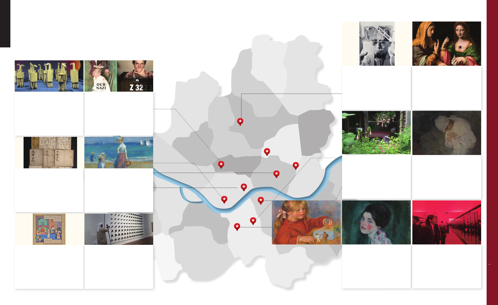
동대문디자인플라자
디뮤지엄
국립중앙박물관
서울시립미술관
세종미술관
국립현대미술관
서울 시립사진미술관
예술의 전당
마이아트뮤지엄
롯데뮤지엄
ARTART
12
충무공 이순신 탄신 480주년과 광복 80주년을 기념한 전시는 『난
중일기』와 『임진장초』 등 이순신이 직접 남긴 기록을 중심으로, 전
쟁 영웅을 넘어 인간 이순신의 내면과 감정, 그리고 시대가 만들어
온 상징으로서의 이순신을 입체적으로 조명한다. 총 258건 369점의
전시품을 선보이는 사상 최대 규모로 국보 6건* 15점은 이순신의 사
유와 결의, 전장의 생생한 기록을 전한다.
2025.11.28.-2026.3.3. 국립중앙박물관 특별전시실
국립중앙박물관 <우리들의 이순신>
미국 메트로폴리탄박물관 소장품 총 81점을 국내 최초로 공개하는
특별전이다. 대중적으로 익숙한 ‘인상주의’를 새롭게 조명한다. 메
트로폴리탄박물관의 대표 소장품인 ‘로버트 리먼 컬렉션’의 회화와
드로잉 65점을 중심으로, 유럽회화, 근현대미술, 미국 미술, 드로잉
과 판화 부서의 주요 작품 16점을 더해 구성됐다.
2025.11.14.-2026.3.15. 국립중앙박물관
국립중앙박물관 <인상주의에서 초기 모더니즘까지,
빛을 수집한 사람들>
2019년 세계문화관 조성 이래 이슬람실을 신설해 최초의 이슬람 주
제 전시라는 점에서 의미가 있다. 카타르 도하 이슬람예술박물관과
공동 주최하며 ‘이슬람 미술, 찬란한 빛의 여정’라는 주제로 초기 쿠
란 필사본 등 총 83건의 다양한 이슬람 미술품들을 선보인다. 세계
문화관은 2019년부터 세계 주요 박물관 소장품을 통해 다양한 세계
문화를 소개하고 있다.
2025.11.22.-2026.10.11. 국립중앙박물관 세계문화관
국립중앙박물관 <이슬람미술, 찬란한 빛의 여정>
대전시향은 마스터즈 시리즈9에서 한국인이 가장 좋아하는 피아노
협주곡으로 태교음악에서 치료음악까지 폭넓게 사용되는 모차르트
의 <피아노 협주곡 제21번>, 음악을 인간의 삶과 일상생활에 돌려
주어야 한다고 주장한 힌데미트의 <카를 마리아 폰 베버 주제에 의
한 교향적 변용>, 음악의 발전사를 한 번에 즐길 수 있도록 기획했
다. 9.7 대전예술의전당
서울시립미술관(SeMA)
아랍에미리트 현대미술전 <근접한 세계>
한국 현대 도예의 선구자 신상호의 회고전으로 한국 도자의 전통
적인 형식과 의미를 해체하는 동시에 새로운 질서를 세워온 작가
의 끊임없는 여정을 상징한다. 신상호는 산업 고도화 시대 민족적
가치가 강조되던 시기, 전통 도자를 제작하며 장인이자 산업 역군
으로서 정체성을 모색했고, ‘도자 조각’이라는 새로운 장르를 개척
했다. 60여 년간 흙의 여정이 담긴 도자 90여 점과 아카이브 70
여 점이 전시된다.
2025.11.27.-2026.3.29. 국립현대미술관 과천
국립현대미술관(MMCA) <신상호: 무한변주>
서로 다른 의미를 지닌 이미지와 서사가 충돌하고 조응하는 순간에
주목한다. 쌍을 이루는 두 영화가 드러내는 균열과 공명은 결국 영
화라는 예술이 시대와 사회를 다르게 볼 수 있는 방식을 어떻게 제
안하는지, 혹은 어떻게 실험하는지를 살펴보게 한다.
2025.11.26.-2026.1.10. 국립현대미술관 서울
국립현대미술관MMCA 필름앤비디오 2025 <이중시
선>
세 번째 개관특별전이다. 전관을 활용한 전시는 서울시립미술관과
작가가 소장한 작품 중 통상 한국 현대미술의 출발점으로 여겨지는
1950년대 후반 이후 ‘사진’ 혹은 ‘사진 이미지’를 창작의 매개로 삼
은 작품들을 중심으로 구성됐다. 사진이 예술가들에게 새로운 세계
를 여는 창의적 도구로 작용해온 과정과, 동시대 미술의 확장 속에
서 수행해 온 역할을 조명한다.
11.26-2026.3.1. 서울시립 사진미술관
서울시립 사진미술관
<사진이 할 수 있는 모든 것>
르네상스에서 바로크, 로코코와 신고전주의, 사실주의, 인상주의와
모던아트에 이르기까지
시대를 대표하는 거장들의 명작을 통해 서양미술사 600년을 조망
하는 특별전이다. 1925년 개관해 100주년을 맞은 샌디에이고 미술
관이 보유한 전체 작품 가격만 2조 원이 넘는 거장 60명의 유화 63
점과 조각 2점이 한자리에 모였다. 엘 그레코, 클로드 모네, 아메데
오 모딜리아니까지 서양미술사 책에 등장하는 화가의 작품들이 수
두룩하다. 11.5-2026.2.22. 세종미술관
세종미술관
샌디에이고미술관 특별전
타샤 튜더 탄생 110주년을 기념하며 아시아 최초, 최대 규모 전시다.
현대 사회에서도 유효한 그녀의 삶의 태도와 예술세계를 통해 잊혀
져 가는 삶의 본질을 다시금 성찰하고자 기획됐다. 원화, 수채화, 드
로잉, 수제 인형을 비롯해 초판본 서적 30여점과 데뷔작 ‘호박 달빛’
50주년 특별판 등 총 190여점이 전시된다.
2025.12.11.-2026.3.15. 롯데뮤지엄
롯데뮤지엄
《스틸, 타샤 튜더 : 행복의 아이콘, 타샤 튜더의 삶》
무하트러스트(Mucha Trust)가 소장한 패밀리 컬렉션에서 엄선된 유
화 18점을 비롯해, 무하의 상징적인 석판화·드로잉·조각·보석·
소품 등 총 143점의 걸작을 선보인다. 체코 국보로 지정된 11작품은
체코 정부와 EU의 반출 승인을 받은 작품들로, 주한체코대사관과
무하트러스트와의 협조를 통해 성사됐다. 유화 <희망의 빛>, <슬라
비아>, 조각 작품 <자연의 여신>을 포함한 70여점은 국내 최초로 공
개한다. 2025.11.8.-2026.3.4. 더현대 서울 ALT.1
한국-체코 수교 35주년 기념 특별전
<알폰스 무하: 빛과 꿈 The Artist as Visionary>
이탈리아 피아첸차의 리치오디 현대미술관(Galleria d’Arte Moderna
Ricci Oddi)과 마이아트뮤지엄이 공동 기획한 특별전으로, 구스타프
클림트(Gustav Klimt, 1862–1918)의 화제작 〈여인의 초상〉이 도난
후 23년 만에 극적으로 재발견된 뒤 이탈리아 외 국가에서 최초로
공개되는 기념비적인 전시다. 클림트의 기적과 더불어 근대 이탈리
아 예술이 남긴 빛과 시간의 여정을 서울에서 되새긴다.
12.19-2026.3.22 마이아트뮤지엄
한국과 프랑스 수교 140주년을 기념하며 프랑스의 국립미술관인 오
르세 미술관과 오랑주리 미술관이 함께 준비했다. 특히 오랑주리 미
술관의 대표 소장품들을 국내 최초로 소개한다. 2016년 예술의전
당 《오르세 미술관 전》 이후 10여 년 만에 프랑스 국립미술관의 명
작들을 만나며, 세잔과 르누아르의 회화적 관심사를 중심으로, 6개
의 섹션으로 구성됐다.
9.20-2026.1.25 예술의전당 한가람디자인미술관
마이아트뮤지엄 <클림트와 리치오디의 기적 :
이탈리아 리치오디 현대미술관 컬렉션>
예술의전당
오랑주리 - 오르세 미술관 특별전 : 세잔, 르누아르
서울문화재단은 첨단기술을 기반으로 한 동시대 융합예술 창작
의 현주소를 제시하는 <제4회 서울융합예술페스티벌 언폴드엑스
2025>를 개최한다. 2010년 ‘다빈치 아이디어 공모’에서 출발해 올해
까지 178명의 신진예술가를 발굴·지원하며 한국 아트&테크 분야
의 대표 플랫폼으로 성장했다. 올해 언폴드엑스의 새로운 비전은 기
술의 진보가 삶을 변화시키는 방식을 탐구하며, K-컬처의 세계적
영향력 속에서 서울이 아트&테크를 선도하는 도시로 자리매김하는
것이다. 12.9-2026.12.21. 문화역 서울284
문화역서울
<제4회 서울융합예술페스티벌 언폴드엑스 2025>
월의취향따라
미술관 산책 떠나볼까?
전시
산책
65
64
December 12, 2025THE MOVE
•
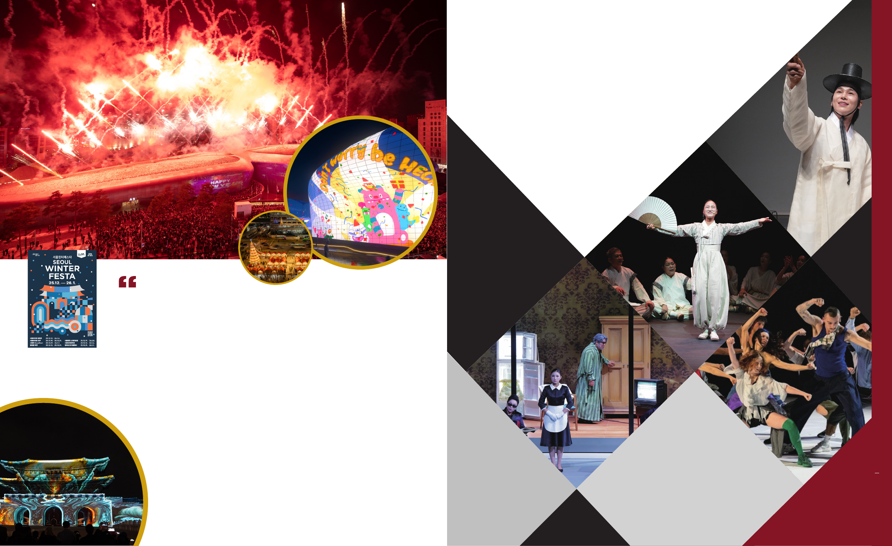
비평의 창
Critic
column & review
대한민국 최대 겨울 축제 <서울윈터페스타>가 열린다. 지난해 540만 명의 시민과 해외 관광객이 참여해 극찬한 <서울윈
터페스타>가 올해는 유럽의 크리스마스를 통째로 옮겨 놓은 듯한 ‘산타 마을 빌리지’부터 케‧데‧헌 열풍을 이어갈 K컬
쳐존까지 서울을 ‘환상 적인 겨울 도시’로 탈바꿈시킨다. 서울시는 12월 12일(금)부터 2026년 1월 4일(일)까지 24일간, 광화
문 광장~청계천~서울광장~DDP~보신각~우이천 6곳을 잇는 초대형 겨울축제를 개최한다. 올해 행사는 이재원 총감
독이 지휘하며,‘판타시아 서울(FANTASIA SEOUL), 시민이 함께 만들어가는 환상의 서울’을 주제로 진행된다. 공연(Play),
체험(Together), K-컬처가 어우러진 이색 프로그램을 통해 글로벌축제로 거듭난다는 목표다.
축제의 서막은 12월 12일(금) 오후 7시 광화문광장에서 열리는 ‘판타지아 빛 퍼레이드’로 화려하게 알린다. 필리핀 해외초
청팀 공연과 ‘아름드리 무용단’의 창작 한국무용부터 국내 정상급 뮤지컬 배우들의 ‘뮤지컬 갈라쇼’가 분위기를 뜨겁게 달
굴 예정이다. 이어 150여 명의 시민합창단 공연과 LED 아트 퍼포먼스 그룹 ‘생동감 크루’의 퍼포먼스도 선보인다. 마
지막으로 광화문을 환하게 밝히는 ‘개막 점등식’으로 24일간의 대장정을 시작한다.
청계천‧우이천_청계천에서는 올해로 17회를 맞은 ‘서울빛초롱축제’가 ‘나의 빛, 우리의 꿈, 서울의 마법’을 주
제로 12월 12일부터 다음해 1월 4일까지 열린다. 청계광장변 ‘팔마(八馬)’ 조형물에서 시작해 삼일교를 지나
DDP 인근 오간수문까지 4가지 테마의 빛 조형물과 실험적인 미디어아트가 물길을 장식할 예정이다. 광
화문광장에서는 광장 자체를 초대형 캔버스로 꾸미는 서울라이트 광화문(12.12.~’26.1.4.)과 광화문마켓
(12.12.~12.31.)이 진행된다.‘산타빌리지’를 콘셉트로 유럽의 크리스마스마켓을 재연하고 루돌프 회전목
마로 동심을 자극한다.‘서울라이트 광화문’에서는‘인터랙티브 프로그램이 선보인다. 이 밖에 해치존과
레고(LEGO)와 협업해 만든 전시도 열린다.
12.12-2026.1.4 서울라이트광화문, 서울라이트 DDP, 서울콘, 광화문 마켓 등
<서울윈터페스타>
환상의 겨울도시 서울에서
즐기는 겨울축제!
광화문의 빛축제부터 이색적인 K-컬처 체험, 제야의 종 타종까지,
시민이 함께 만들어가는 ‘판타시아 서울(FANTASIA SEOUL)’
67
66
December 12, 2025THE MOVE
•
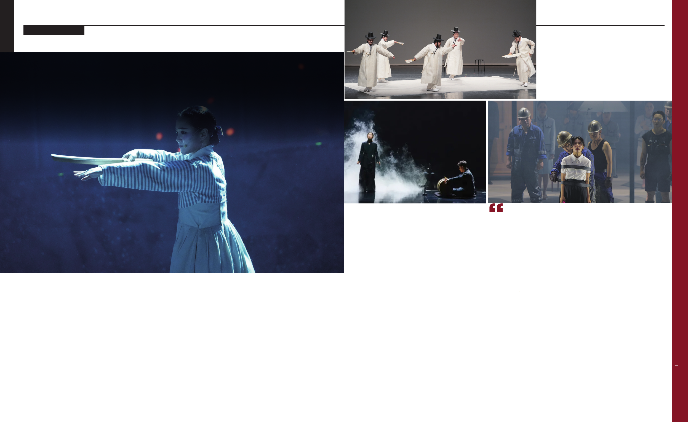
review
이소영의 종횡무진 음악산책
2025년 한국 전통음악계는 특별히 장르적 실험과 미학
적 자각이 교차한 창극과 소리극이 주목받은 해였다. 뮤
지컬을 의식한 대규모 오케스트레이션보다 소리의 본질
에 집중한 작품들이 주목받았고, 감정과 서사를 구현하
는 과정에서 판소리 발성 고유의 생명력을 복원하려는
시도가 이어졌다. 특히 연출과 작창 등 창극의 주된 내
용을 결정하는 제작진들의 약진이 돋보이는 한 해였다.
그 선두에는 요나김(연출)이 있었고 한승석(작창), 이자람
(작창), 김수미(작창), 고선웅(연출), 지기학(연출), 최용석(
연출) 등이 각기 다른 방향에서 전통 서사를 현대적으로
재창조하며 ‘K-소리극’이라는 이름에 걸맞은 실험과 성
과를 보여주었다.
7월 부천아트센터 콘서트홀에서 공연된 서의철 가단의
남도선소리 <시를 읊다: 님이 침묵한 까닭>은 연출가 지
기학이 주도한 실험적 소리극이었다. 근현대 시인들의 작
품을 모티프로 하여 남도민요와 판소리를 결합하고, 피
리·아쟁·해금이 중심이 된 실내악 앙상블이 이를 받쳤
다. 확성기를 배제하고 자연음향만으로 진행된 이 공연은
콘서트홀의 잔향을 하나의 악기로 삼아 소리의 질감을 입
체적으로 구현했다. 무대 역시 미니멀했지만, 시어와 선
율, 몸짓이 유기적으로 어우러지며 ‘소리 안의 침묵’을 재
현했다. 이는 전통 창극 형식의 해체를 통해 새로운 서정
적 소리극이 어떤 방향으로 발전할 수 있는지 제시한 모
범적 사례였다.
남원시립국악단의 창극 <소녀 춘향>은 남원의 로컬리티
와 여성 서사를 결합한 작품으로, 김탁환(극본)·김수미(
작창)·최용석(연출)의 협업으로 완성되었다. 동학농민운
동기를 배경으로 둔 이 공연은 시대의 저항정신과 주체적
여성의 목소리를 결합해 새로운 ‘춘향’의 이미지를 구축
했다. 지역 공연단체가 자체적으로 제작한 대형 창극으로
서 미학적 완성도와 지역문화의 자생력을 동시에 보여줌
으로써 지역성과 여성성의 성공적인 결합이란 측면에서 좋은 사례로 평가된다.
하반기 무대의 하이라이트는 고선웅의 각색·연출 <서편제>로서 고선웅 특유의 문체적 연출 감
각이 이청준의 사변적 사유와 정적인 서사에 생기를 불어넣으며, 소리극의 연극적 잠재력을 극
대화한 작품이었다. 연극적 장치와 판소리 서사가 절묘하게 결합 된 이 작품에서 주요 눈대목
의 소리는 극 전개와 인물의 심리 변곡점마다 배치되었고 판소리의 정제된 음악성과 연극의 드
라마투르기는 자연스럽게 융합되었다. 군무나 대합창 대신 소리와 장단의 밀도 있는 대화가 무
대를 지배하며, 이는 최근 창극의 뮤지컬화 경향에 대한 반성적 문제의식을 담은 형식적 실험
으로 읽힌다.
위에서 언급된 공연들은 대부분 판소리 고유의 소리 전달에 충실하면서도 판소리를 현대화란 명
목으로 가요화나 뮤지컬화에 함몰되지 않으면서도 주제나 메시지의 현대적 재구성을 통해 전통
과 현대가 어떻게 공존할 수 있는지를 보여주었다. 또한 창극의 유연한 분화 및 해체, 혹은 재구성
을 통해 제2의 판소리의 부활을 음악극 형태로 이룰 수 있다는 가능성을 보여주여준 공연들이다.
판소리의 최소 구성 원리가 현대극의 서사와 만날 때, 전통은 더 이상 과거의 재현이 아니라 동
시대 정서를 지탱하는 창조적 매체가 된다. 또한 올해 새롭게 부상한 여성 중심의 서사와 여성
예술가들의 진출도 의미있게 읽혀지는데 바로 이 지점에서 2025년의 전통음악계, 특히 창극과
소리극의 부흥은 전통예술이 살아 움직이며 미래 공연예술의 방향을 제시한 결정적 전환점으로
평가될 수 있을 것이다.
이소영 음악평론가
상반기에 가장 주목받은 이자람의 창작 판소리극 <눈눈>은 이자람 특유의 재담과 운율, 상상력
을 자극하는 내면 연기가 화려한 무대기술 없이도 관객의 몰입을 이끌었고, 판소리 1인극이 지닌
전통적 미학을 현대적 서사구조로 확장시켰다는 점에서 호평을 받았다. 소리와 이야기, 극적 상
상이 온전히 배우 한 사람의 몸에서 분출되는 그 형태는 ‘소리의 연극성’이 어디까지 확장될 수
있는지를 보여준 결정적 무대였다.
2025년 전주세계소리축제의 개막작으로 무대에 오른 국립창극단의 <심청>은 유럽에서 활동하
고 있는 오페라 연출가 요나김이 각색과 연출을 맡아 화제를 모았다. 효와 희생으로 대표되던 기
존의 심청 서사는 주체적 여성성의 각성을 중심으로 재해석되었고 실시간 영상과 다층적 조명
디자인이 결합되어 등장인물들의 내면 세계를 시각화했다. 음악적으로는 소리의 전통적 결이 살
아 있었고, 오페라적 총체성이 판소리 서사와 성공적으로 융합된 형식 실험으로 평가되었다. 이
작품은 ‘판소리씨어터’라는 새로운 장르명에 걸맞는 콘텐츠 개발을 통하여 K-오페라 담론 속에
서 창극의 실질적인 세계화 가능성을 입증한 시도로 기대를 모았다.
[2025 결산특집_전통]
창극과 소리극의 부흥,
판소리 서사의 재탄생
2025년 전통음악계를 돌아보며 - 창극을 중심으로
판소리 현대적 재구성, 전통과 현대의 공존 구현
음악극으로 제2의 판소리 부활 가능성
69
68
December 12, 2025THE MOVE
•
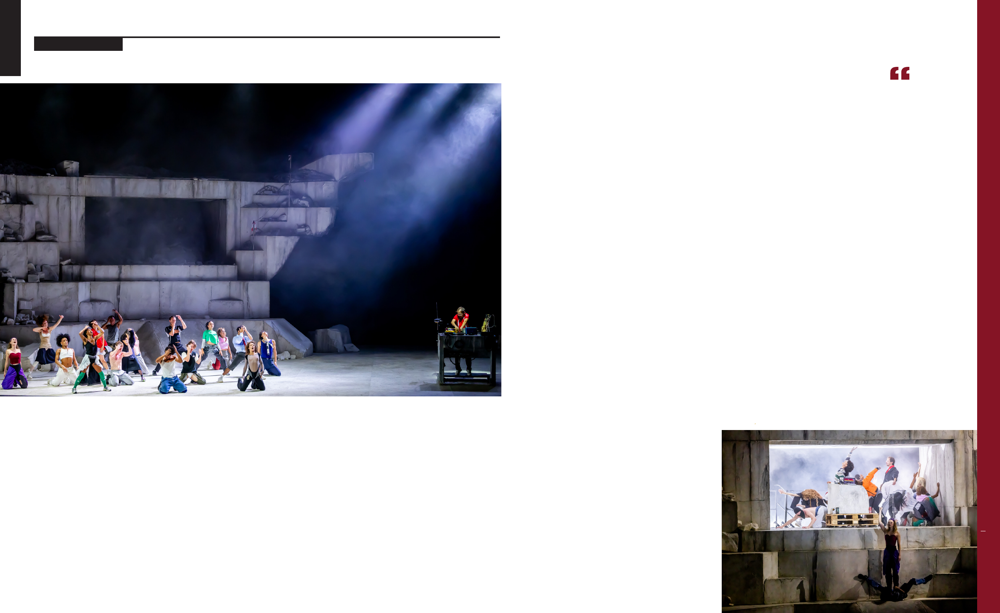
마치 시위 현장 혹은 사회의 폐허를 보는 듯하다. 마르세
유 국립발레단(Ballet National de Marseille)의 무용수들이
등장하지만, 그들의 몸에는 더 이상 ‘발레’의 흔적이 없다.
도약도, 회전도, 포인도 사라진 자리에 남은 것은 몸의 충
돌, 땀, 비명, 그리고 생존의 에너지다. 이 작품은 발레의
미학적 규율을 완전히 해체하며, 현대 사회 속 젊은 세대
의 분노와 절망, 그리고 집단적 저항을 신체 언어로 드러
낸다. 프랑스 안무가 그룹 라 오호드(La Horde) — 마리나
스네, 조나단 드보, 아르튀르 호지에 — 가 마르세유 국립
발레단의 예술감독으로 취임한 이후, 이 단체는 전통의 상
징에서 ‘몸의 실험실’ 로 탈바꿈했다.
“Nous n’avons pas le désir de repousser les frontières,
mais de redéployer les (nouveaux) territoires …
Cette zone est en nous … Elle est pleine de résonnances…
tout se fait à plusieurs. C’est la beauté du groupe.”
“우리는 경계를 넘고자 하는 욕망보다는 새로운 영토를
재배치하려 한다… 이 영역은 우리 안에 있다 … 울림과
상응이 가득하다 … 모든 것이 여러 사람과 함께 이루어
진다. 이것이 집단의 아름다움이다.”
무대 미술은 다층적 공간을 구성하며, 몸들이 흩어지고 충
돌하고 재결합할 수 있도록 설계됐다. 거대한 콘크리트 덩
어리로 보이는 구조물은 무용수들의 층위를 분산시키고,
때로는 일부 장면을 가리고 때로는 무대로 전환한다. 작품
은 서사를 따르지 않는다. 대신 리듬, 군집, 에너지라는 신
체 언어가 중심에 놓인다. 이들은 고통, 혼란, 유희, 욕망을
하나의 감각적 지층처럼 쌓아올린다. 작품 초반의 파편화
된 몸들이 후반에 이르러서는 마치 하나의 생명체처럼 호
흡을 맞춘다. 파괴 이후 도달하는 공동체의 환상일까, 혹
은 절망을 함께 견디는 동시대적 생존의 방식일까? 작품
에는 명확한 서사도, 인물도 없다. 다만, 라 오호드의 미학
은 분명하다 —기교를 통한 미가 아니라, 집단의 에너지
로 구현되는 ‘몸의 실재’를 제시한다. 그들은 몸부림치고,
비명을 지르며, 머리를 휘저으며 론(Rone)을 중심으로 모
슈핏을 형성한다. 이윽고 그를 들어 올리고, 눈을 마주치
며, 두려움에 다가서거나 물러난다. 〈Room With A View〉
는 선정성과 폭력성에 대한 논란이 제기된다. 작품을 둘
발레 없는 발레단, 해체의 전략 혹은 전복의 미
학_2025 SPAF
오늘날 발레는 결정적인 기로에 서 있다. 변화가 아닌 생
존을 위해 질문을 던져야 하는 시점에 와 있다. 전통적 신
체 규율과 기교 중심의 미학은 21세기의 혼성적인 감각과
정서, 급변하는 사회적 현실 앞에서 더이상 유효한 언어
로 작동하지 못한다는 비판이 제기된다. 반면, 발레는 여
전히 전통 예술의 상징으로 존재하며, 국립 단체와 제도
권 교육기관의 중심을 차지하고 있다. 어떤 방식으로든 새
로운 몸과 새로운 시대를 수용하지 않고는 미래를 상상
할 수 없다. 이 모순된 상황 속에서, 프랑스 마르세유 국
립발레단(Ballet National de Marseille)의 최근 변화는 하나
의 상징적인 사건이다. 2019년, 프랑스 문화부는 이 발레
러싼 논쟁의 핵심은 그 에로티시즘과 폭력성에 있다. 상반신을 노출한 무용수들, 몸과 몸이 부
딪치며 넘어지고 짓눌리는 장면, 전투적인 에너지를 내뿜는 군무는 전통 발레의 ‘조화’와는 다
른 감각을 자극한다. 보수 언론 Le Figaro는 이 작품을 ‘폭동의 재현’이라 묘사했고, 진보 매체
Libération
은 “발레의 언어를 사회의 언어로 치환한 작업”이라 평했다.
그 중간 어디쯤, 관객은 불편함과 흥분을 동시에 체험하게 된다. 이것은 발레의 ‘해체’인가, 아
니면 발레를 시대에 맞게 ‘재정의’한 것인가? 라 오호드는 질문한다. 발레는 정말 토슈즈 위의
균형, 아라베스크와 푸에떼만으로 설명될 수 있는가? 기술이 아닌, 감각으로 시대를 말할 수
없다면, 발레는 예술이 아니라 단지 유산에 머무르게 될 것이다. 〈Room With A View〉는 장르
너머에 놓인 하나의 선언이다. 전통 발레의 해체로 읽히는 이 작품은 사실상 ‘발레의 본질’을
묻는 또 다른 시작점이다. 오늘날 발레는 더 이상 고정된 어휘 체계가 아니라 몸을 통해 시대
를 감각하고, 사회에 응답하는 방식이다. 그렇다면 발레단이란 무엇인가? ‘기술의 구현자’인가,
아니면 ‘몸의 감각을 통한 사유의 공간’인가? 라 오호드는 말한다. “그 공간은 우리 안에 있다.
울림으로 가득하다. 함께 움직이는 것이 바로 우리 시대의 아름다움이다.”
이제 발레는 종말을 맞이하는 것이 아니라 자기 안에서 질문을 갱신하는 중이다. 〈Room With
A View〉는 그 불안정한, 그러나 불가피한 변화를 가장 신체적으로 가장 집단적으로 우리 앞에
펼쳐 보이고 있다. 오늘날 발레는 하나의 양식이 아니라 몸을 통해 시대와 사회를 감각하고 사
고하는 방식일 수 있다. 그렇다면 발레단의 역할도 단순한 레퍼토리 공연의 집행자가 아니라
시대와 함께 움직이는 ‘감각의 공동체’로 전환되어야 하지 않을까.
라 오호드는 이 질문을 몸으로 던진다. 그리고 그 질문은 단지 발레의 미래만이 아니라 예술이
시대 앞에서 어떤 태도로 존재해야 하는가에 대한 더 큰 물음으로 이어진다. 지금, 예술은 장
르가 아니라 태도와 감각, 그리고 질문이다. 〈Room With A View〉는 그 불안정하고도 불가피
한 변화의 최전선에 서 있다.
임효정 기자 (공연칼럼니스트)
단의 예술감독직에 라 오호드(La Horde)를 임명했다. 스트리트댄스, 디지털 영상, 유튜브 퍼포먼
스, 포스트-인터넷 세대의 감수성을 공유하는 세 명의 젊은 예술가들은 전통적인 발레 어휘를
전면 제거하고, 대신 ‘몸을 둘러싼 동시대의 감정, 분노, 축제, 폭력’을 집단적 신체를 통해 재현
하기 시작했다. 이 급진적 변화의 정점에는 2020년 초연된 〈Room With A View〉가 있다. 이 작품
은 세계 무용계에서 지금 벌어지고 있는 질문을 전면에 드러낸다. 2025년 가을, SPAF(서울국제
공연예술제)에 이 작품이 왔다. 올해는 특히 ‘댄스 리플렉션 BY 반클리프 아펠’과의 협력으로 <룸
위드 어 뷰>를 포함한 여러 무용작품이 진행돼 무용의 스펙트럼을 넓혔다는 점에서 의미 있다.
2019년부터 이 단체를 이끄는 '라 오호드(La Horde)'는 기존의 클래식이나 네오클래식 양식을 지
운 채, 디지털 시대의 집단적 감각과 폭력성, 그리고 대중적 신체언어를 무대에 올린다. 대표작
〈Room With A View〉(2020)는 이들의 미학적 전환과 정치적 선언이 결집된 결과물이다. 16개 국
적의 25명의 무용수가 출연하는 〈Room With a View〉는 폭력, 투쟁, 반란의 요소를 테크노 파티
와 같은 장면 속에 융합시킨 작품이다.
거대한 콘크리트 벽, 붉은 조명, 그리고 진동하는 전자음. 〈Room With A View〉의 무대가 열리면
프랑스 마르세유 국립발레단 _라 오호드 <룸 위드 어 뷰>
Ballet National de Marseille _La Horde 〈Room With A View〉
탈 장르 시대의 발레를 묻다
review
임효정의 무대위인문학
왜 발레단은
더 이상 발레를 하지 않는가?
그렇다면 발레란 무엇이며,
우리는 왜 그것을 여전히 ‘발레단’이라 부르는가?
71
70
December 12, 2025THE MOVE
•
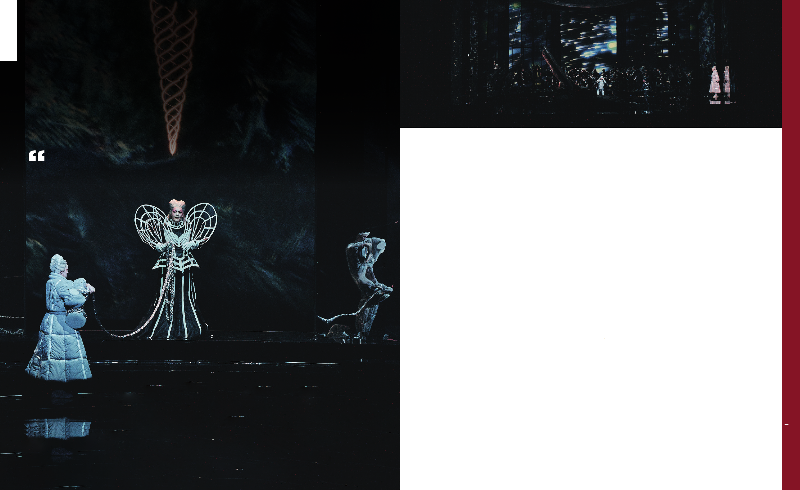
메르키의 우주적 연출은 영상 미디어를 통해 바그너 음악
의 무한 선율, 해소되지 않는 긴장을 시각적으로 그렸다.
<트리스탄>의 음악은 이미 서사를 넘어선다. 낮과 밤, 삶
과 죽음, 욕망과 소멸은 극 중 사건이 아니라 음악 내부에
서 순환한다. 메르키는 이를 ‘비장소적 공간’으로 구현한
다. 그러나 이 연출은 동시에 중요한 결핍을 드러낸다. 추
상은 개념적으로 설득력을 갖지만, 성악가의 육체를 고려
하지 않은 추상은 무대 위에서 즉각적인 불균형을 낳는
다. 우주복을 연상시키는 무거운 의상은 헬덴 테너와 드
라마틱 소프라노의 신체성을 과장하며, 인물의 내적 파국
을 육체적 부담으로 만들었다. 레지테아터의 정적 미학이
명상적 상태로 작동하기보다, ‘움직일 수 없음’이라는 물
리적 제약으로 읽히는 순간들이 적지 않았다.
특히 3막 트리스탄의 붕괴 장면에서, 드라마적 해체와 신
체적 제한이 분리되지 못한 채 겹쳐진 점은 이 연출의 가
장 아쉬운 지점이다.
오 밤이여, 나를 덮어라!”
“O sink hernieder, Nacht der Liebe!”
_ 2막, 사랑의 이중창
이번 공연에서 가장 설득력 있게 작동한 지점은 단연 관
현악의 긴 호흡과 긴장 관리다. <트리스탄>의 음악은 해결
을 미루는 화성, 즉 ‘트리스탄 화음Tristan Akkord’으로 대
표되는 끊임없는 선율의 미학 위에 서 있다. 서울시립교
향악단과 지휘자 얍 판 츠베덴은 이 불안정한 구조를 과
도한 감정 과잉으로 밀어붙이기보다, 누적되는 긴장과 미
세한 균열에 집중하며 작품의 본질을 살렸다. 츠베덴은 <
트리스탄>을 감정의 폭발로 밀어붙이지 않고, 그의 해석
은 구조적이며, 선명하고, 냉정할 정도로 절제돼 있다. 바
그너의 음악을 낭만적 과잉이 아닌, 근대적 구조물로 읽
어내며 안정적으로 구현했다. 특히 2막의 사랑의 이중창
과 3막 전반부에서, 관현악은 인물의 심리 상태를 대체하
는 서사 장치로 인물들의 욕망을 견디게 하는 토대로 작
용했다. 3막에서의 현악과 관악의 긴장 유지, 죽음 직전
까지 해소를 유예하는 음향 구조는 이 공연의 가장 설득
력 있는 순간들이었다. 적어도 음악적으로 이 <트리스탄>은, 한국 무대에서 흔치 않은 완결된 바
그너 경험을 제공했다.
<트리스탄과 이졸데>는 성악가에게 극단적인 체력과 집중력을 요구하는 작품이다. 이번 무대의
성악은 개별 아리아의 성취보다, 전막을 관통하는 구조적 완주에 방점이 찍혀 있다.
이졸데는 복수와 사랑, 초월 사이를 오가는 복합적인 정서를 비교적 절제된 톤으로 그려내며, 마
지막 ‘사랑의 죽음(Liebestod)’을 감정 폭발이 아닌 의식(儀式)에 가깝게 처리한다. 트리스탄 역
시 영웅적 테너의 과시보다는, 점차 무너져가는 인간으로서의 취약함을 강조하는 해석이 인상
적이다. 스튜어트 스켈톤의 트리스탄은 폭발적이기보다 전략적으로 그는 1·2막에서 성량을 절
제하고, 3막을 위한 체력과 성대를 남겨뒀다. 음색은 후반부에서 다소 거칠어지지만, 인물의 붕
괴와 맞닿아 있고 끝까지 무너지지 않고 완주했다. 캐슬린 포스터의 이졸데는 감정 과시형이 아
닌, 중음역을 중심으로 긴 프레이즈를 안정적으로 이끌어간다. 마지막 ‘사랑의 죽음(Liebestod)’
을 황홀경이 아닌 의식처럼 처리한다. 이는 메르키의 연출과 조응한 성악 해석이기도 하다. 베
이스 박종민(마르케 왕 역)의 깊이 있는 저음과 과장되지 않은 감정 표현은 한국 성악가의 존재
감을 부각했다. 한국 성악가의 바그너 해석의 가능성을 증명하며 이는 국내 성악가 전반의 역량
으로 확장되지 못한 단일 사례로 뼈아프게 다가오는 이유이기도 하다.
메르키 연출의 무대는 사건을 설명하기보다, 인물들이 놓인 정신적 상태와 시간의 정지감을 시
각화하는 데 집중한다. 무대는 구체적 장소성을 최소화하고, 어둠과 여백, 반복되는 동선으로 이
루어진 추상적 공간을 제시했다. 이러한 미니멀한 연출은 관객에 따라 감정 이입의 진입 장벽으
로 작용할 수 있다. <트리스탄과 이졸데>가 본래 지닌 감정의 밀도가 충분히 체감되기 위해서는,
관객 역시 이 느린 호흡과 반복을 능동적으로 견뎌야 한다.
한국 오페라 무대에서의 <트리스탄과 이졸데>, 남겨진 질문....
국립오페라단의 <트리스탄과 이졸데>는 ‘대작 완주’ 이상의 의미를 갖는다. 이 작품은 화려한 레
퍼토리 확장의 증표라기보다, 한국 오페라 제작 역량이 어느 지점까지 도달했는가를 가늠하는
리트머스 시험지 같다. 한국 오페라사에서 중요한 이정표로 음악적으로 일정 수준 이상으로 구
현했다는 성과로 완벽하다고 말하기는 어렵지만, 최소한 <트리스탄>을 감상 가능한 이벤트가 아
니라 사유의 장으로 제시하려는 태도만큼은 분명하다. 그러나 동시에 이 공연은 한국 오페라의
구조적 한계를 적나라하게 드러냈다. 주역 성악가와 핵심 스태프는 해외 인력의 초청으로 연출
해석의 주도권 역시 해외 의존형이다. 국내에 축적되는 것은 경험이 아니라 이력에 그쳐 한국
오페라의 역량이라고 말할 수는 없다. 한국의 내부 제작 역량으로 환원되지 못한 사실은 여전히
남는다. 바그너의 <트리스탄과 이졸데>가 끝내 해소되지 않는 음악으로 끝나듯, 이번 공연 역시
일정 성과와 함께 미완의 질문을 남긴다. 사랑을 구원으로 그리지 않고, 죽음을 결말이 아닌 도
달 불가능한 목표로 남겨두는 이 오페라의 잔혹한 미학은, 오늘의 관객에게도 여전히 유효하다.
임효정 기자 (공연칼럼니스트)
국립오페라단 <트리스탄과 이졸데>
사랑과 욕망의 우주적 음악 여정,
미완의 질문들....
울려 퍼지는 소리 속에서
세계의 숨결이 불어오는 우주 속에서
빠져들고, 탐닉하며
의식 없이 누리는 최고의 환희
_3막 3장 ‘Isoldes Liebestod’
review
바그너의 <트리스탄과 이졸데>는 흔히 ‘사랑의 오페라’로 불리지만, 이 작품은 사랑이 어떻게 세계를 붕괴시키는가를 끝까지
밀어붙이는 음악극이다. 사실상 국내 초연한 이번 국립오페라단의 바그너 오페라 <트리스탄과 이졸데>(2025.12.4.-12.7 / 4회)
프러덕션은 이 작품의 핵심을 ‘낭만적 사랑’이 아닌, 의지·욕망·죽음이 뒤엉킨 존재론적 파국으로 그린다. 또한, <트리스탄
과 이졸데>는 오페라라는 장르가 감당할 수 있는 한계를 시험하는 작품이기도 하다. 서사보다 의식에 가깝고, 사건보다 상태에
가까우며, 사랑은 구원이 아니라 파국으로 향한다. 한국 무대에서 이 작품이 국내 초연으로 올려졌다는 것은 레퍼토리 확장을
넘어, 한국 오페라가 무엇을 할 수 있고 무엇을 아직 할 수 없는가를 동시에 드러냈다. 국립오페라단의 이번 <트리스탄과 이졸
데>는 음악적 완성도, 국제적 스태프 구성, 숙련된 오케스트라라는 측면에서는 ‘국립’의 외형을 갖췄다. 그러나 이 공연이 한국
오페라의 도달점인지, 혹은 의존 구조의 확인인지에 대해 보다 냉철한 평가가 필요하다.
연출가 슈테판 메르키는 이번 <트리스탄>에서 전통적 중세 서사를 거의 전면적으로 제거한다. 성, 배, 숲이라는 구체적 장소는
사라지고, 무대는 추상적 공간—우주 혹은 무시간적 진공 상태—으로 치환된다. 이는 전형적인 레지테아터(Regietheater)의 전
략으로, 바그너가 의도한 ‘사랑의 이야기’를 재현하기보다 욕망의 구조와 의식의 흐름을 해체적으로 제시했다.
73
72
December 12, 2025THE MOVE
•
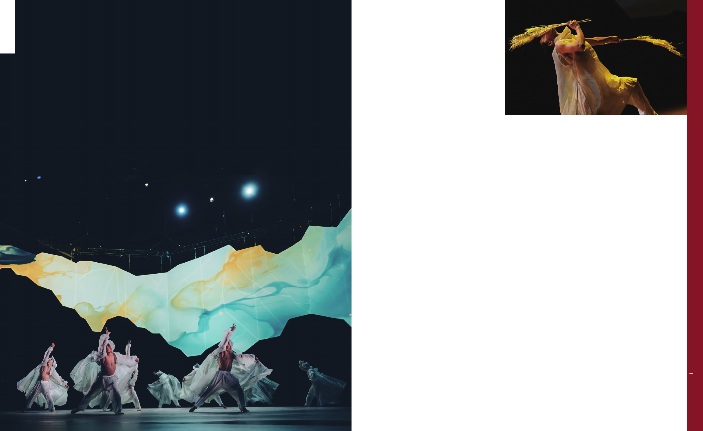
<A Dance of Celestial Rhythms(천상의 리듬의 춤)>은 홍콩의 Hong Kong Dance Company(HKDance)의 전통적 중국 철학인 ‘Twenty-Four Solar Terms’(24절
기)를 주제로 자연과 인간, 시간의 흐름을 감각적으로 담아낸 대작이다. 홍콩은 오랜 식민지 시절(1841–1997)을 거쳐 법체계, 금융 시스템, 교육제도 등을 흡
수하면서도 한편으로는 중국 전통문화와 언어, 관습을 지켜온 ‘문화적 하이브리드’ 도시로, 과거 제국주의 역사와 현대 글로벌 도시로서의 긴장, 그리고 중국
과의 관계 속에서 끊임없이 진화해왔고, 지금도 여전히 진행형다. 반환 이후 ‘일국양제(一國兩制)’ 체제 아래 중국과의 동일화가 진행되면서도, 세계 도시로서
의 글로벌 감각과 표현의 자유에 대한 갈망은 여전히 존재한다. 이런 모순적 정체성은 예술가들에게 ‘경계에서 말하기’ 혹은 ‘양극 사이의 탐색’이라는 창작적
테마로 작용해 혼종성과 전환성의 미학이 더욱 섬세하게 드러난다. <A Dance of Celestial Rhythms> 에서도 중국무용에 디지털 미디어를 접목하거나, 서양 컨
템포러리 무용의 신체 기법을 중국 철학 개념과 연결하는 방식 등으로 나타난다.
2025년 10월 19일 (일) 국립국악원 예악당
『홍콩 위크 2025@서울』 공식 초청작
홍콩무용단
≪A Dance of Celestial Rhythms≫
절기의 시간, 몸을 깨우다
review
고전적 선녀무(仙女舞)의 유려함과 현대무용의 만남
1장. 절기의 시간, 몸을 깨우다 — 경칩에서 망종까지
공연은 ‘경칩’으로 시작된다. 무대가 열리면 커다란 나뭇
잎의 이미지가 걸리며 어둠 속에서 낮게 몸을 일으키는
무용수들의 움직임은 잠에서 깨어나는 땅의 숨결처럼 느
껴진다. 팔끝에서 흘러내리는 리본, 유려하게 굽어지는
몸의 선, 조심스럽게 번져나가는 동작들. 이 모든 요소가
봄의 시작, 즉 자연의 기지개를 신체화한다. 잎맥이 드러
난 나뭇잎위로 절기의 변화에 따른 이미지가 미디어 영
상으로 반영되어 색과 빛의 변화로 전개된다. 절기의 흐
름은 ‘청명’과 ‘망종’으로 이어지며 춤은 점점 리듬과 호흡
을 얻는다. ‘청명’의 장면은 투명한 색채와 유연한 리본의
흐름이 공간을 가로지르며 ‘바람’을 시각화하고, ‘망종’에
서는 파종과 성장을 상징하는 군무가 빠르고 반복적인 리
듬으로 확장된다. 각 절기의 성격에 맞춘 안무 구조는 절
기의 시간성을 움직임으로 직조해내며, 춤 자체가 곧 자
연의 흐름이 된다.
2장. 태양의 호흡, 움직임의 정점 - 대서에서 추분까지
‘대서’에 이르러 무대는 열기를 내뿜는다. 빨강과 금색이
교차하는 조명 아래, 무용수들의 도약과 회전은 태양의 기
세를 닮았다. 신체의 긴장을 극대화한 군무는 뜨거운 여
름의 에너지와 도시의 압축된 속도를 연상케 한다. 그러
나 정점은 곧 반전된다.
‘백로’에서는 동작의 속도가 급격히 느려지고, 움직임 사
이의 여백이 강조된다. 은은한 조명 아래 흐르는 유려한
팔의 곡선, 이슬처럼 맺히는 고요한 시선. 이 장면은 자연
이 속도를 늦추고 나뭇잎에 이슬을 머금는 순간을 담담히
포착한다. 이어지는 추분은 절기의 균형을 안무의 대칭과
중심축으로 표현한다. 군무는 좌우로 대칭되며 균형감을
이루고, 움직임은 격렬하지도 느리지도 않다. 절기의 ‘중
용’이 춤의 리듬으로 녹아든다.
3장. 수렴의 미학, 침묵 속으로 스며들다 — 한로에
서 대한까지
가을에서 겨울로 이행하며, 춤은 점점 안으로 침잠한다.
한로의 장면에서 무용수들은 느린 호흡으로 바닥을 쓰다
듬듯 이동하고, 팔은 하늘이 아닌 땅을 향해 내린다. ‘대설’
에서는 흰 눈처럼 떨어지는 조명과 천천히 휘몰아치는 천
이 시각적 정적을 연출하며, 움직임은 거의 사라진 듯 간
헐적으로 이어진다. ‘대한’은 마치 모든 시간이 멈춘 듯한
마무리다. 무대는 점차 어두워지고, 무용수들은 퇴장하지
않는다. 그저 움직임을 멈추고, 자연의 한 조각으로 스며
든다. 춤은 끝났지만 시간은 멈추지 않는다. 절기의 완성
은 끝이 아닌 반복이며, 그 순환의 감각은 관객의 심장에 조용히 새겨진다. 조안무를 맡은 시에
인(Xie Yin)은 “빠르게 흐르는 현대 사회 속에서 잠시 속도를 늦추고 나뭇잎 위를 맺힌 물방울, 바
람에 흩날리는 낙엽, 머리 위를 스쳐 지나가는 철새 떼를 바라볼 수 있을까요? 그리고 그 순간
에 머물며, 진정한 ‘나’로 살아갈 수 있을까요?” 라고 말한다.
4장. 절기와 춤, 동양의 미감이 숨 쉬다 — 홍콩무용단의 예술 철학과 도시 ‘홍콩’의 정체성
〈천상의 리듬의 춤〉은 단순한 무용 작품이 아니라 ‘시간에 대한 동양적 사유’를 신체 언어로 풀
어낸 시적 퍼포먼스였다. 춤은 절기를 따르되 기계적으로 재현하지 않고, 그 절기의 감각, 리듬,
기운을 현대적 안무 언어로 말한다. 유려한 선형 움직임, 리본과 천을 활용한 시공간 확장, 그리
고 조명·영상의 조화는 모두 고전성과 동시대성을 품은 미학적 실험이다.
홍콩무용단은 홍콩을 대표하는 국가의 지원을 받는 무용단체로서, 중국무용의 전통적 기반 위
에 현대무용의 감각, 영상예술, 디지털 무대미학 등을 결합하며 새로운 아시아적 감수성을 실험
해왔다. 이 작품은 그 방향성을 대표적으로 보여주는 사례이며, 전통의 현대화, 전통의 재문맥화
에 홍콩무용단의 현재를 보여준다. 홍콩의 예술은 때로 매우 정치적이기도 하다. ‘우산혁명’ 이
후로 많은 예술가와 창작자들이 억압된 정체성, 기억의 지워짐, 표현의 경계 등을 주제로 작업
해 왔고, 검열의 위험 속에서도 예술은 여전히 홍콩 시민들의 감정과 역사, 그리고 정체성의 보
루 역할을 하고 있다. 이러한 조건 속에서, 홍콩 예술은 회피나 순응이 아니라 “복합성과 긴장의
미학”으로 나아간다. 단순한 서사 대신 다층적인 서사 구조, 모호함, 그리고 은유적 표현 등을 통
해 메시지를 전달한다. 전통 중국무용에 디지털 미디어를 접목하거나 서양 컨템포러리 무용의
신체 기법을 중국 철학 개념과 연결하는 방식 등으로 나타난 것이다.
춤은 계절을 따라 흐르고, 도시는 감각을 따라 울린다
〈A Dance of Celestial Rhythms〉은 단지 절기를 재현하는 것이 아니라, 절기를 '순환하는 자연의 리
듬'으로 구현한 무대다. 자연과 인간, 도시와 계절, 신체와 시간은 따로 놀지 않았다. 춤은 흐르고,
시간은 되돌아온다. 서울과 홍콩이 만나는 접점에서 우리는 동아시아 도시 예술의 내일을 엿볼 수
있었다. 서울이라는 도시 역시 비슷한 예술적 흐름을 지닌 공간이다. 도시성과 자연, 정체성과 기
억, 전통과 미래를 다층적으로 포섭하는 서울의 예술계에 있어, 이번 공연은 그 흐름을 비추는 하
나의 문화적 거울이자, 동아시아 도시 예술의 동반자적 가능성을 제시한다. 국립국악원이라는 장
소성과 <홍콩 위크@서울>이라는 연계성은 경계성, 혼종성(hybridity)과 유동성, 도시적적 밀도 그리
고 정치적 감수성과 기억의 미학 이라는 관점 등에서 전통과 현대, 동양과 서양의 유연한 공존 등
으로 연결된다. 이러한 도시의 정체성은 속도, 밀도, 감각의 방식으로 반영되어 아시아 도시성의 공
명을 유도한다. 홍콩무용단의 창작무용극 <A Dance of Celestial Rhythms> 에서 고요하고 반복되며,
느릿한 사유의 리듬으로 움직인다. 그 리듬은, 천상의 것이기도 하고 현재 우리의 것이기도 하다.
이수민 기자
75
74
December 12, 2025THE MOVE
•
12
Winter, a beautiful season
filled with the brightest moments of life
세상 모든 어머니들에게 바치는
사랑 넘치는 찬사
다닐 트리포노프가 선택한 차이코프스키의
보석 같은 피아노 독주곡 모음
다닐 트리포노프<차이콥스키>
피아니스트, 다닐 트리포노프가 차이콥스키의
작품만을 담은 앨범<차이콥스키>를 발매했다.
차이콥스키가 남긴 피아노 독주곡 중에서
작곡가의 보다 내밀하고 개인적인 면모를
드러내며 유년기와 어머니, 가족이라는 주제를
관통하는 작품을 모았다. 차이콥스키의 ‘어린이를
위한 앨범’, 피아노 소나타 c#단조, 주제와 변주곡
F장조, 그리고 마하일 플레트네프가 편곡한
‘잠자는 숲 속의 미녀’ 콘서트 모음곡을 담았다.
2011년 제14회 국제 차이콥스키 콩쿠르에서
러시아 출신 피아니스트로는 20년만에 우승하며
전세계적인 주목을 받았다. 트리포노프는 “우리는
사려 깊고 다정다감한 차이콥스키의 한 단면을
온전히 바라볼 수 있습니다. 이러한 개인적인
측면은 차이콥스키의 음악이 지닌 위대함과
보편성을 지탱하는 필수적인 요소입니다. 유년
시절과 가족들과의 추억이 빚어낸, 한 사람의
정신 그 자체 말이죠” 라고 전했다. 작곡가와
연주자 양쪽 모두에게 있어, 이 앨범은 세상 모든
어머니들에게 바치는 사랑 넘치는 헌사와도 같다.
(유니버설뮤직)
RCO의 차기 상임지휘자
클라우스 메켈레의 신보
클라우스 메켈레 & RCO <말러 교향곡 8번>
클라우스 메켈레와 로열 콘세르트헤바우
오케스트라(이하 RCO)가 함께한 말러
교향곡 8번 ‘천인 교향곡’ 음반이 발매됐다.
연주는 2025년 5월 16일과 말러의
기일이었던 5월 18일에 진행되었으며,
말러의 손녀 마리나 말러가 참석한 가운데
실황으로 녹음됐다. 메켈레는 “말러 교향곡
8번을 지휘한 것은 내 인생에서 가장 위대한
순간 중 하나로, 평생 잊지 못할 경험이었다.
무대 위에서 나 자신도 강하게 느꼈고, 그
감동이 객석에도 전해졌기를 바란다.”고
밝혔다.
총 다섯 개의 합창단과 여덟 명의
솔리스트가 함께했다. 메켈레는 “말러가
이렇게 방대한 편성과 수많은 목소리를
사용한 이유는 단순히 ‘더 큰 소리’를 내기
위해서가 아니라, 모든 색채를 담아내기
위해서였다. 우리는 리허설 내내 ‘투명함’을
만들어내기 위해 집중했는데, 이 홀은 그런
점에서 완벽했다. 무대에서 나오는 모든
음이 이 공간을 통과하며 고유한 색을 입게
되었다.”고 전했다.
(DECCA 클래식스)
랑랑이 들려주는, 피아노를 사랑하는 모든
이들을 위한 음악랑랑 <Piano Book 2>
피아니스트 랑랑의 새앨범 <Piano
Book 2>가 유니버설뮤직 그룹 산하
도이치그라모폰을 통해 발매됐다. 2019년
<Piano book>의 6년만의 신작이다. 이번
두 번째 시리즈에는 클래식 명곡부터
영화·TV, 애니메이션, 그리고 비디오게임
테마까지 폭넓게 담겨 있다. 바흐, 쇼팽,
리스트, 라흐마니노프를 비롯해 히사이시
조, 루도비코 에이나우디 등의 작곡가들까지
아우르며, 영화 〈아멜리에〉, 〈라라랜드〉,
애니메이션 〈나루토〉, 그리고 소셜 미디어
속 화제의 곡 〈Rush E〉 등 32개의 다채로운
곡들이 수록됐다. 쇼팽의 녹턴 연주 영상도
공개됐다. 랑랑은 새 앨범에 수록된 32곡을
“작은 걸작들”이라고 표현했다. 팬들의
메시지, 음악교육 과정의 커리큘럼, 오랜
교육 경험을 바탕으로 신중히 선곡, 그에게
특별한 의미를 지닌 작품들도 포함됐다.
현대 미디어와 스트리밍 문화에 대한 섬세한
오마주도 담고 있다. 랑랑은 “이제 막 시작한
사람, 오랜만에 다시 건반 앞에 선 사람,
혹은 그저 연주하는 즐거움을 느끼는 모든
사람들에게 닿을 수 있는 음악을 더 많이
선보이고 싶다”고 전했다. (DG)
“새로운 인생곡을 발견하고,
익숙한 멜로디와 다시 연결되며,
피아노에 대한 새로운 영감을” -랑랑
December
DISC
Melodies in December
77
〈교회>는 단순한 형태와 색채를 바탕으로 정규의 회화 세계를 대표하는 작품이다. 화면에는 교회와 집, 나무가 등장하지만, 모두 가장 기본
적인 기하학적 형태로 단순화됐다. 정규(1923–1971)는 서양화뿐만 아니라 목판화, 도자기 공예, 미술비평 등 다양한 분야에서 폭넓게 활동한
작가였다. 회화, 판화, 도자 등 매체의 경계를 자유롭게 넘나들며 창작의 지평을 확장했고, 1960년대에는 비평가로서 글을 쓰며 한국 미술의
정체성과 토착적 미감에 대한 문제의식을 드러냈다. 특히 한국적 소재와 민속적 정서에 깊은 관심을 보였으며, 이를 작품 주제로 삼아 목가
적이고 서정적인 분위기의 작업을 남겼다.
10.2-2026.3.8. 국립현대미술관 청주 <조우, 모던아트협회 1957-1960>
12 December
〈교회〉, 1955, 캔버스에 유화 물감, 55 × 60 cm, 국립현대미술관 소장
1 2 3 4 5 6 7 8 9 10 11 12 13 14 15
17 18 19 20 21 22 23 24 25 26 27 28 29 30
16
31
투명함을 만들어내기 위해
집중했다
77
76
December 12, 2025THE MOVE
•
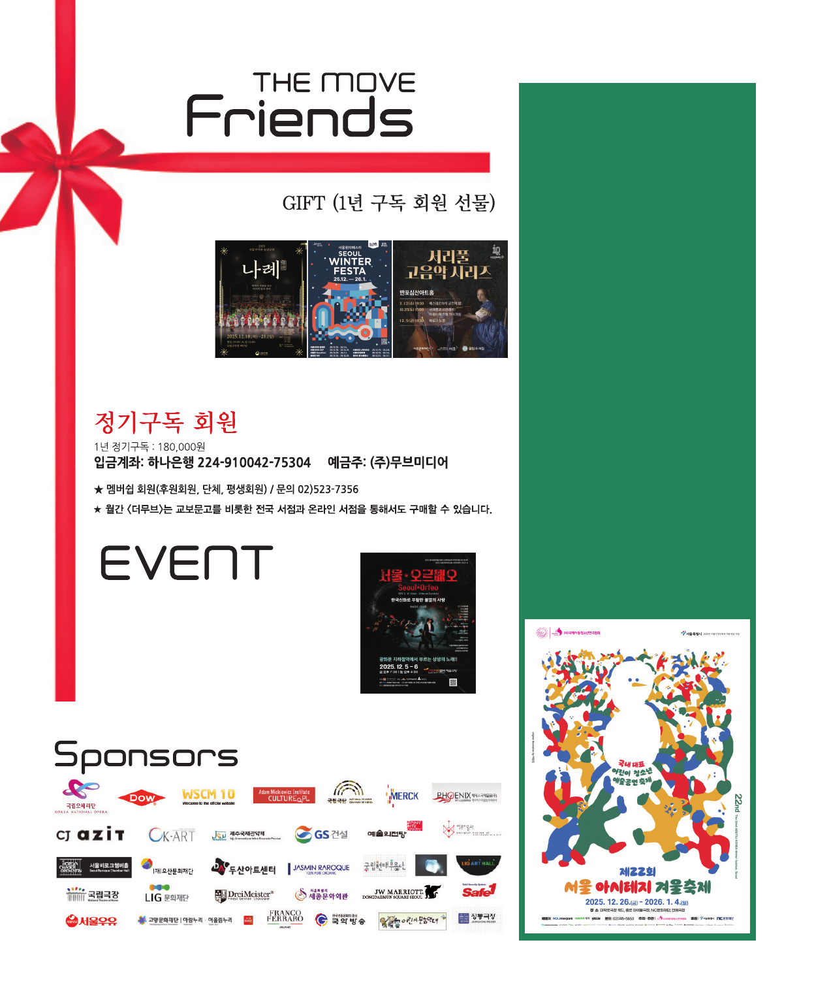
(사)국제아동청소년연극협회는 국내 대표
어린이청소년 예술공연 축제인 ‘제22회 서
울 아시테지 겨울축제를 12월 26일(금)부터
1월 4일(일)까지 총 10일간 대학로극장 쿼드,
종로 아이들극장, NC문화재단, 한예극장 외
대학로 일대에서 개최한다. 올해로 22번째
를 맞는 아시테지 겨울축제는 2024년부터
이어온 ‘다가오는 휴머니즘 Humanism, to
come’ 이라는 주제 아래, AI시대를 살아가
는 어린이에게 필요한 감성과 기술-인간의
균형에 대해 탐구한다. 또한, ‘어린이가 행
복해야 온 세상이 행복하다’는 축제 콘셉
트를 바탕으로, 어린이를 위한 공연 및 전
시 프로그램으로 연말연시 온 가족이 함께
즐길 수 있는 따뜻한 문화예술 향유의 시간
을 마련한다. 총 7편의 국내 대표공연이 무
대에 오른다.
2025.12.26.-2026.1.4. 대학로 일대
<오페라 서울 오르페오>에 대한 감상평 혹은
인증샷을게시판(www.ithemove.com)에 올려주시는 분들에게
추첨을 통해 공연 초대 티켓을 선물합니다.
재미있는 내용을 올리신 분을 선정해
1월 공연에도 초대합니다.
AI시대, 어린이를 위한
예술축제와 함께
“상상력 UP! 감수성 UP!”
<제22회 서울 아시테지 겨울축제>
<12.18- 나례> <2025 서울윈터페스타 포스터> <서리풀 고음악시리즈>